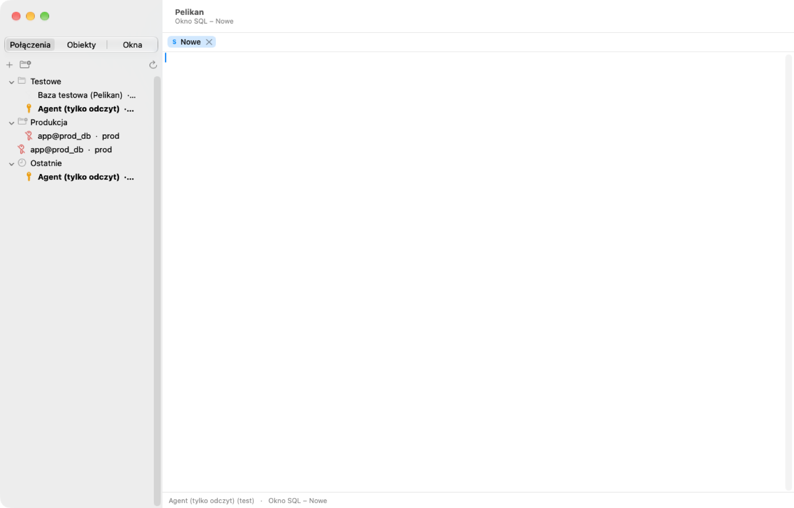
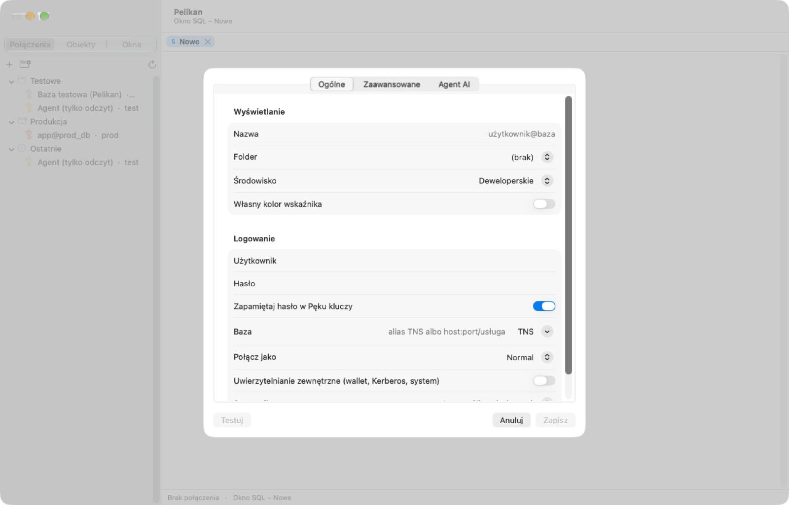
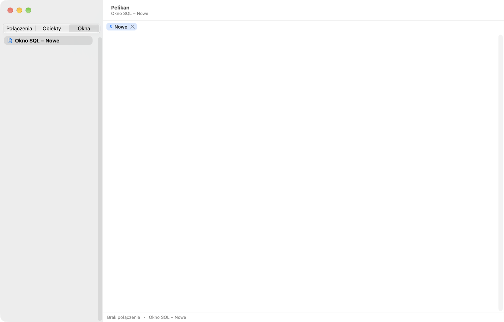

Pelikan — raport postępów
Natywne IDE dla Oracle PL/SQL na macOS · andrzejoles/Pelikan · strona odświeża się co 30 s
Wersja1.13.1
Raport wygenerowany2026-11-03 11:47
Ostatni sygnał2026-11-03 11:47
przed chwilą
Bieżący etappo 8
Etapy 0–8 i P zakończone — dopracowanie: zrzuty w tle, poprawki z zrzutów, szkice wydań
Zadanie
Po wydaniu 1.3.0 — czekam na kolejne zgłoszenie właściciela
Postęp
Ogółem (z macierzy funkcji)99.8%
436 z 440 funkcji zrobionych, 6 pominiętych z uzasadnieniem; wagi: ✅/👁 = 1, ⚠️ = 0,75, w toku = 0,25
Według obszaru
PL/SQL Developer100%
313/314
Dodatki SD/DB/DG99%
39/40
utPLSQL100%
22/22
Agenci AI100%
20/20
Platforma i macOS98%
19/21
Według etapu
Etap 0100%
Analiza i fundament: źródła, macierz funkcji, ADR, CI, baza testowa, szkielet aplikacji, raport
9/9
Etap 1100%
Połączenia, SQL Window, Command Window (sterownik Instant Client, potem thin)
128/130
Etap 2100%
Object Browser i Program Window
93/93
Etap 3100%
Test Window, debuger, profiler
27/27
Etap 4100%
utPLSQL
22/22
Etap 5100%
Agenci AI (MCP jak w Bifoldzie)
20/20
Etap 6100%
Narzędzia
51/51
Etap 799%
Dodatki z SQL Developer, DBeaver, DataGrip
38/39
Etap 899%
Dopracowanie i wydanie
25/26
Etap P100%
Pro*C: zdalny build przez SSH (akceptacja na AIX — właściciel)
23/23
Etapy
| Etap | Zakres | Stan |
|---|---|---|
| 0 | Analiza i fundament: źródła, macierz funkcji, ADR, CI, baza testowa, szkielet aplikacji, raport | zakończony |
| 1 | Połączenia, SQL Window, Command Window (sterownik Instant Client, potem thin) | zakończony |
| 2 | Object Browser i Program Window | zakończony |
| 3 | Test Window, debuger, profiler | zakończony |
| 4 | utPLSQL | zakończony |
| 5 | Agenci AI (MCP jak w Bifoldzie) | zakończony |
| 6 | Narzędzia | zakończony |
| P | Pro*C: zdalny build przez SSH (akceptacja na AIX — właściciel) | zakończony |
| 7 | Dodatki z SQL Developer, DBeaver, DataGrip | zakończony |
| 8 | Dopracowanie i wydanie | zakończony |
Blokady i pytania do właściciela
Brak blokad.
Zrobione
- ✔ Rozwiązane konflikty szkiców #129 i #130 z main (D208/D209 obok D210–D213; poprawki w sekcji 1.14.0 NOWOSCI)
- ✔ Wydanie 1.3.0 opublikowane (Latest, kanał aktualizacji 1.3.0): połączenia alfabetycznie, kopia i przenoszenie, foldery DBA i DBMS, ochrona obiektów Oracle; lustro GitLab wyrównane
- ✔ PR #110 (D190) scalony — połączenia alfabetycznie, kopia i przenoszenie połączeń, foldery DBA i DBMS, potwierdzanie zmian obiektów schematów Oracle; trzy przejścia przeglądu kodu, CI zielone
- ✔ PR #110: przegląd kodu (1 średnie, 9 niskich zgłoszeń) — poprawione: potwierdzanie zmian obiektów schematów Oracle (SYS, XDB…), unikalna nazwa kopii, filtr folderów DBA/DBMS
- ✔ D190: kolejność alfabetyczna połączeń, kopia i przenoszenie połączeń (przeciąganie), foldery DBA i DBMS w Obiektach — PR #110
- ✔ Wydanie 1.2.5 opublikowane (Latest, kanał aktualizacji 1.2.5; zawiera poprawki D189 z 1.2.4 i poprawkę sprawdzania podpisu, PR #109); lustro GitLab wyrównane
- ✔ PR #108 (D189) scalony — czwarta runda przeglądu: 153 zgłoszenia, 12 gałęzi poprawek; CI zielone
- ✔ PR #108 — czwarta runda przeglądu (D189) otwarty; czekam na CI
- ✔ D189: pełne testy na p3/przeglad-4 zielone — 683 jednostkowe, 50 SSH, 260 na bazie
- ✔ D189: 11 z 12 gałęzi scalonych w p3/przeglad-4 (debuger w trybach Dwie/Jedna sesja bez zawieszeń, słownik tabel i widoków zgodny z 11g–26ai)
- ✔ D189: gotowe także gałęzie zdalne/podpis (Hardened Runtime), infrastruktura (testdb, CI, bramka ostrzeżeń) i narzędzia danych (9 z 12)
- ✔ D189: gotowe gałęzie połączeń, edytora, narzędzi, Command Window, agenta i przeglądarki obiektów (6 z 12)
- ✔ D189: poprawki edytora/siatki i narzędzi gotowe (połączenie narzędzi i otwieranych obiektów, wiersze przy sortowaniu, różnice z emoji)
- ✔ D189: poprawki połączeń i haseł gotowe (15 zgłoszeń: plik 0600 od utworzenia, brak awarii przy pustej frazie, wycofanie importu, AAD definicji)
- ✔ Przegląd D189: 8 raportów — 153 zgłoszenia (11 wysokich, 52 średnie, 90 niskich); stos aktualny poza 2 łatkami, budowanie bez ostrzeżeń, testy 618 + 49 SSH + 240 na bazie zielone
- ✔ Czwarta runda przeglądu (D189): uruchomiono 8 recenzentów (stos, ostrzeżenia i testy, zmiany D183–D188, aplikacja ×2, PelikanWorkspace ×2, moduły/skrypty/spójność)
- ✔ Właściciel potwierdził w 1.2.3: łącza bazy (w tym publiczne) i katalogi Oracle widoczne w przeglądarce obiektów
- ✔ PR #107 (D188, łącza z *_DB_LINKS, katalogi z DBA) scalony; wydanie 1.2.3 opublikowane na słowo właściciela
- ✔ Wydanie 1.2.2 opublikowane (Latest) na słowo właściciela
- ✔ PR #106 (D187, obiekty dostępne i publiczne) scalony; szkic 1.2.2 zbudowany i sprawdzony
- ✔ Szkic i znacznik 10.5.0 usunięte (właściciel)
- ✔ Wydanie 1.2.0 opublikowane (Latest) na słowo właściciela
- ✔ PR #105 (notatki wydań z wersjami pośrednimi) scalony; main 1.2.1; szkic 1.2.0 czeka na publikację
- ✔ PR #103 (D185, drzewo połączeń) i #104 (D186, eksport/import z hasłami) scalone; szkic 1.2.0 zbudowany i sprawdzony
- ✔ Wyjście z bety: PR #102 (D184, numeracja od 1.0.0) scalony; wydanie 1.0.0 opublikowane (Latest) na słowo właściciela
- ✔ PR #101 (D183, dokowanie narzędzi) scalony; szkic wydania 10.5.0 zbudowany i sprawdzony
- ✔ Tag v10.2.0 usunięty na prośbę właściciela
- ✔ Szkic wydania 10.2.0 usunięty na prośbę właściciela (tag v10.2.0 pozostaje)
- ✔ Wydanie 10.4.0 opublikowane (Latest) na słowo właściciela
- ✔ Ciało pakietu/typu otwiera się ze specyfikacją, wcięcia drzewek, widoczne znaczniki zwijania (D181)
- ✔ Lewy panel bez Liquid Glass — gładkie czcionki całego panelu w aktywnym oknie (D180)
- ✔ Lewa kolumna i wstążka bez przezroczystości — gładkie czcionki w aktywnym oknie na monitorach 1× (D179)
- ✔ Czytelne czcionki, konfigurowalne kroje i okna o zmiennym rozmiarze (D177, D178)
- ✔ Przywracanie wszystkich okien po ponownym uruchomieniu, także niezapisanych (PD-WSET-001, D176)
- ✔ Filtr nazw przeglądarki obiektów: fragment nazwy %tekst% (PD-OB-006, D175)
- ✔ Formater: 20 nowych opcji (wyrównania, klauzule, odstępy, wielkość liter grup słów) z podglądem każdej opcji (PD-BEAU-001, D174)
- ✔ Zgłaszanie problemów na GitHubie z aplikacji (PL-INFRA-013, D173)
- ✔ Dziennik aplikacji z prywatnością wpisów (PL-INFRA-011, D170)
- ✔ Logo aplikacji: ikona pelikana we wszystkich rozmiarach (PL-INFRA-012, D172)
- ✔ Wstążka z kartami kontekstowymi i polem „Szukaj czynności” (PD-UI-012, D171)
Następne kroki
- Zgłoszenia OracleNIO (pliki gotowe, wysyła właściciel)
- Xcode 27.2 w CI po wydaniu stabilnym
- NOWOSCI 1.3.0: punkt o ochronie obiektów Oracle; zawinięcie linii w D190
Znane ograniczenia
- Oracle 19c i starsze nie mają obrazów arm64 — testy automatyczne tylko na 26ai; zgodność ze starszymi przez zapytania słownika odporne na brak kolumn i widoków
- Runner GitHub macos-latest to macOS 26.6 / Swift 6.3 — budowanie aplikacji z celem macOS 27 w CI do sprawdzenia
- Ctrl+F8 przechwytuje macOS (fokus do menu statusu) — działa odpowiednik ⇧⌘↩; skrót systemowy można wyłączyć w Ustawieniach (D17)
- Instant Client w Pobranych: przy pierwszym połączeniu macOS pyta o dostęp do folderu Pobrane — zgoda należy do użytkownika; można wskazać inny katalog w ustawieniach (D18)
- Tunel SSH tylko z kluczem/agentem — hasło SSH nieobsługiwane (wymagałoby hasła w środowisku procesu; D19)
- Sterownik thin: bez TCPS/wallet, uwierzytelniania zewnętrznego, zmiany wygasłego hasła i przerwania wykonania (D20)
- Sterownik thin (OracleNIO): CLOB do 65 535 znaków ze znacznikiem obcięcia; kolumny INTERVAL YEAR TO MONTH i BFILE kończą aplikację w dekoderze OracleNIO — dla nich Instant Client (D189)
Ostatnie decyzje
Pełna lista: docs/DECISIONS.md
D213 · 2026-11-03 — UTF-8 także dla Pro*C; wykrywanie kodowania z poprawnych polskich liter
**Prośba właściciela:** „W Pelikanie domyślne kodowanie powinno być UTF-8. Dla Pro*C jeżeli jest wykryte inne — również konwersja na UTF-8. Konwersja ma się wykonać tak, aby po konwersji znaki poprawnie się wyświetlały.” **Stan wyjściowy** (repozytorium źródeł Pro*C właściciela, 269 plików `.pc/.c/.h`): 253 ASCII, 8 UTF-8, 8 Windows-1250 (ą ś ź na pozycjach B9 9C 9F), 2 z literami wspólnymi Windows-1250 i ISO-8859-2; bez BOM, końce LF. Kodowanie projektu ISO-8859-2 (przykład z D55) czytało pliki UTF-8 i Windows-1250 z przekłamaniami („istniejš”) — bez ostrzeżenia, a zapis utrwalał błąd. - **Standard plików obejmuje pliki projektu:** plik spoza UTF-8 (Pro*C i każdy inny tekst otwierany w oknie SQL albo programu) dostaje pytanie o konwersję; konwersja zapisuje UTF-8 bez BOM. Wyjątek D210 dla projektów z kodowaniem usunięty. - **Kodowanie projektu to wskazówka odczytu, nie przymus:** BOM i poprawny UTF-8 zawsze wygrywają; plik jednobajtowy czyta się w kodowaniu, w którym polskie litery są poprawne — ustawienie projektu rozstrzyga tylko pliki, które oba kodowania czytają tak samo (same ó ł ę ń ć ż). - **Wykrywanie** (`CodeHTML.singleByteGuess`): liczy bajty liter, którymi Windows-1250 i ISO-8859-2 się różnią (ą ś ź Ą Ś Ź) i bajty 0x80–0x9F (w ISO-8859-2 znaki sterujące) — przewaga ISO-8859-2 → ISO-8859-2, inaczej Windows-1250. Bajty niezdefiniowane w Windows-1250 (81 83 88 90 98) nie przełączają już całego pliku na Latin-1. - **Poprawność konwersji:** tekst w oknie jest odczytany w wykrytym kodowaniu, więc zapis w UTF-8 zachowuje każdą literę; sprawdzone na wszystkich 18 plikach z polskimi literami w źródłach właściciela (bez i z kodowaniem projektu ISO-8859-2 — zero znaków sterujących i przekłamań), w testach — próbki Windows-1250 i ISO-8859-2. - Wdrożenie Pro*C (SSH) wysyła pliki bajt w bajt — po konwersji na serwer trafia UTF-8 (polskie litery są tylko w komentarzach; kompilator Pro*C ich nie interpretuje).
D212 · 2026-11-03 — Każda tabela sortowana po dowolnej kolumnie
**Prośba właściciela:** „wszystkie tabelki, jakie się wyświetlają (np. tabelka sesji), aby mogły być sortowane po dowolnej kolumnie.” - **Klik nagłówka** sortuje rosnąco, drugi — malejąco; kolejność pierwotna do pierwszego kliknięcia. Wspólne porównanie (`SortKey`, `CellOrder`): wartości z bazy pokazywane jako tekst (SID, SERIAL#, rozmiary) porównywane liczbowo, gdy obie są liczbami (kropka albo przecinek dziesiętny, spacje tysięcy), inny tekst — bez wielkości liter, liczby w tekście wg wartości (jak Finder); daty i liczby wg wartości; puste wartości na końcu. - **Tabele SwiftUI** (≈45: sesje, szczegóły sesji, DBA, Scheduler, SQL Monitor, porównania, plan i Autotrace, profiler, śledzenie, statystyki, zmienne testu, punkty przerwania, użycia, historia lokalna, problemy, makra, TODO, wdrożenia Pro*C, klawiatura, edytor tabeli…) — `ColumnSort` przez `TableColumn(…, sortKey:)`; tabele edytowalne (`Table($wiersze)`: kolumny, klucze, indeksy, uprawnienia tabeli, zmienne testu, koszyk, punkty przerwania) sortują widok, a dane zachowują swoją kolejność (kolejność kolumn w CREATE TABLE się nie zmienia). Plan wykonania sortuje rodzeństwo w gałęziach — drzewo zostaje. - **Tabele AppKit** (`HeaderSort`): komunikaty kompilacji, aktywność i dziennik agenta (pliki i wpisy), informacje o obiekcie, widok rekordu. Siatka wyników ma własne sortowanie (PD-GRID-009). Drzewa (przeglądarka obiektów, połączenia, zawartość kodu, lista okien) i listy podpowiedzi bez nagłówków nie są tabelami — bez zmian.
D211 · 2026-11-03 — Pola ustawień z listą wyboru i wpisem ręcznym
**Prośba właściciela:** „wszelkie ustawienia, gdzie obecnie trzeba podać wartość z palca — jeżeli jest możliwość, zrobić listę wyboru z opcją wpisania ręcznie.” - Wspólne pole `ChoiceField`: pole tekstowe i przycisk ▾ z listą (bieżąca wartość z ✓, „Wyczyść”, opcjonalnie „Wybierz katalog…/plik…/aplikację…” z okna macOS). Pola z wartościami po przecinku (rozszerzenia, statystyki, PLSQL_CCFLAGS, pisownia specjalna, listy debugowania) — wybór dopisuje pozycję albo ją usuwa. - **Listy** (`PreferenceChoices`, `ConnectionFieldChoices`): formaty DATE/TIMESTAMP i NLS_DATE/TIMESTAMP_FORMAT, pozostałe parametry NLS sesji, PLSQL_WARNINGS, PLSCOPE_SETTINGS, PLSQL_CCFLAGS, prefiksy konwencji nazw, rozszerzenia programów, testów i par specyfikacja/ciało, statystyki sesji, pisownia specjalna formatera, wzorce `user@baza` z listy połączeń (wskaźniki połączeń, zestawy preferencji, foldery i filtry przeglądarki, debugowanie), użytkownicy baz, klauzule WHERE/ORDER BY filtrów przeglądarki, katalogi startowe (projekt, katalogi ostatnich plików), wyszukiwania w sieci, edytor zewnętrzny, program i argumenty porównywania plików, dokumenty Oracle, polecenia agentów CLI. - **Okno połączenia i cele SSH Pro*C:** użytkownik, baza (aliasy TNS — dawny przycisk „TNS” zastąpiony listą — i connect stringi innych połączeń), katalog konfiguracji, portfel, edycja, schemat, host/użytkownik/klucz/ProxyJump tunelu SSH (hosty z linii `Host` w `~/.ssh/config`, klucze prywatne z `~/.ssh` z parą `.pub` — czytane tylko nazwy, bez treści kluczy), gałąź, remote, komenda builda, ksh, ORACLE_HOME, LIBPATH, PATH (wartości innych celów). - Bez listy zostają pola, dla których nie ma sensownych podpowiedzi: nazwy nadawane przez użytkownika, pola wyszukiwania, własne zapytania SQL, skróty i treść AutoReplace, liczby (pola liczbowe mają już krokomierze albo wybór).
D210 · 2026-11-03 — Standard plików: UTF-8 bez BOM, pliki programów bez „/”
**Prośba właściciela:** „w ustawieniach (i zaznaczone jako domyślne) pliki w UTF-8, bez BOM, bez znaków / na końcu czy w środku. Jeżeli przy otwarciu wykryje coś innego — pytanie o konwersję.” - **Ustawienia › Ogólne › Standard plików** (`Settings.fileStandard`): kodowanie (UTF-8, ISO-8859-2, Windows-1250), znacznik BOM (tylko UTF-8), pliki programów bez linii „/”, pytanie przy otwarciu. Domyślnie: UTF-8, bez BOM, bez „/”, pytanie włączone; przycisk przywraca te wartości. - **Nowe okna** zapisują się w standardzie (dotąd zawsze UTF-8 bez BOM — przy domyślnych ustawieniach bez zmiany). - **Otwarcie pliku** okna SQL albo programu (także pary specyfikacja/ciało, D194) w innym kodowaniu, z BOM albo — w pliku programu — z liniami „/” kończy się pytaniem „Konwertuj / Zostaw bez zmian” z listą odstępstw i polem „Nie pytaj więcej” (zapamiętana odpowiedź, przywracana w Ustawieniach › Narzędzia, PD-PREF-008). Kilka plików naraz — pytania po kolei. Bez pytań przy przywracaniu workseta, odzyskiwaniu okien i pulpitu projektu (użytkownik już na nich pracował), bez interfejsu (testy, agent bez okna) i w przebiegu zrzutów. - **Konwersja zmienia okno, nie plik:** kodowanie i BOM zapisu, usunięcie linii z samym „/” (lekser — „/” w tekście, komentarzu i dzieleniu zostaje); okno oznaczone jako zmienione, plik zmienia się przy zapisie (⌘S, cofnięcie zmian przez zamknięcie bez zapisu). Znak spoza docelowego kodowania jednobajtowego zatrzyma zapis jak dotąd (D55). - **„/” tylko w plikach programów:** skrypty `.sql` wykonuje okno poleceń, gdzie „/” uruchamia blok PL/SQL — tam jest potrzebny (D192: „/” w pliku z kodem psuje wdrożenie, w skrypcie — nie). Opcja Oracle „Kończ jednostki okna programu znakiem „/”” jest wyłączona, gdy standard zabrania „/”; ustawienia sprzed tej zmiany z włączonym „/” zachowują wybór (standard dostaje „/” dozwolony). - ~~**Kodowanie projektu ma pierwszeństwo**~~ — zmienione w D213: pliki projektu (także Pro*C) też konwertuje się do UTF-8. - Zakończenia linii (LF/CRLF) poza standardem — prośba ich nie obejmuje; zapis zachowuje zakończenia pliku jak dotąd.
D209 · 2026-11-03 — Przegląd kodu warstw bazy, agentów, SSH i dziennika
Przegląd pełnego kodu pakietów PelikanDB, PelikanODPI, PelikanThin, PelikanRemote, PelikanAgent, PelikanBridgeKit, PelikanLog i pelikan-mcp (na polecenie właściciela). Poprawione: - **Bezpieczeństwo:** ślad `PELIKAN_MCP_TRACE` z maskowaniem haseł (jak panel aktywności) i zapisem tylko do zwykłego pliku właściciela 0600, bez podążania za dowiązaniem; „Wszystko tylko do odczytu” obniża też komendy aplikacji dostępne przez `run_command` (np. `edit.beautify` nie zmieni tekstu nawet po zgodzie); deskryptory potoków `ssh` z FD_CLOEXEC (równoległy terminal agenta ich nie dziedziczy); ramka hello najwyżej 4 KB przed odczytem treści i zgodna wersja protokołu mostu (`protocol_version`). - **SSH:** polecenie po kodzie 255 ponawiane tylko, gdy jest idempotentne (odpytywanie i zatrzymanie procesu) — wdrożenie, `mv` czy DML mogły się już wykonać; potwierdzenie połączenia głównego ważne 5 s (bez `ssh -O check` przed każdym poleceniem); stały prywatny katalog gniazd w `/tmp` zamiast nowego przy każdym uruchomieniu. - **Oracle Net:** ścieżki portfela i pliku tokenu w cudzysłowie, gdy mają spacje albo znaki składni (deskryptor i EZConnect Plus — Net Services Administrator's Guide, „About Easy Connect Plus”); sterownik thin łączy się z 12.1/12.2 (opis wersji z `BANNER`, gdy brak `BANNER_FULL`; brak opisu nie przerywa połączenia). - **ODPI:** przygotowanie połączenia (LDAP, Kerberos, biblioteka) na kolejce sesji, nie w puli współbieżności; limit czasu wywołania tylko dla wykonania (pobieranie, COMMIT i ping bez niego); referencja kursora zwalniana przy błędzie opisu (kursor nieotwarty, ORA-24338) — także dla wyników niejawnych; limit czasu zapytania (agent) zapamiętany przy wyniku i ustawiany na czas każdego pobrania; zamknięcie sesji bez trzymania blokady na czas ROLLBACK (Break z wątku interfejsu nie czeka na limit TCP). - **Agenci:** serwer MCP nie powstaje dla sesji zamkniętej w trakcie uzgadniania; wywołanie po zamknięciu sesji bez wpisu „w toku”; obcinanie wyniku według długości po kodowaniu JSON (znaki sterujące `\uXXXX`); limiter zapomina zamknięte sesje; dziennik bez tworzenia formaterów dat przy każdym wpisie. - **Most MCP:** komunikat na zamknięty stderr bez awarii; za długa linia wykrywana także, gdy kończy się w tym samym kawałku danych. - **Dziennik aplikacji:** wpis na wyłączonym poziomie bez kopii konfiguracji pod blokadą; martwa `isEnabled` usunięta. Drugie przejście: ślad MCP maskuje hasła w rozkodowanych napisach JSON (wzorzec CONNECT działa od początku linii); `DescriptorLock` (PelikanLog) — tworzenie deskryptorów z FD_CLOEXEC (potoki `ssh`, gniazdo agentów; `accept` na gnieździe nieblokującym po `poll`) i start terminala agenta (forkpty) wzajemnie się wykluczają; gniazdo połączenia głównego SSH z numerem procesu w nazwie (kilka instancji Pelikana we wspólnym katalogu w /tmp); polecenia tylko do odczytu i sprzątające (stan serwera, kopie, historia, test celu, zwolnienie blokady) oznaczone jako idempotentne — ponawiane po zerwaniu; potwierdzenie połączenia zapominane po nieudanym `scp` i kodzie 255 w strumieniu; „tylko do odczytu” jako jawny wybór w macierzy (`readOnlySession`), nie wniosek z poziomów wierszy; opis wersji thin jednym zapytaniem według wersji serwera. Trzecie przejście: `DescriptorLock` w PelikanRemote (nie w dzienniku); przed startem terminala agenta wszystkie deskryptory aplikacji dostają FD_CLOEXEC (`markAllCloseOnExec` — także tworzone przez Foundation, OCI, pliki), więc CLI agenta nie dziedziczy żadnego; każda sesja SSH ma własne gniazdo połączenia głównego (`disconnect` tymczasowej sesji testu celu nie zrywa wdrożenia); wymuszone zwolnienie blokady wdrożenia nie jest ponawiane (mogłoby usunąć blokadę innego wdrożenia); ponowienie polecenia idempotentnego — jedno sprawdzenie połączenia; opis wersji thin osobnym zapytaniem z pominięciem błędu (brak uprawnień do V$VERSION); kursory REF CURSOR, `CURSOR(…)` i wyniki niejawne dziedziczą limit czasu wywołania; wyniki zarejestrowane przed błędem tego samego wykonania są zamykane; serwer MCP zatrzymywany, gdy sesję zamknięto w trakcie jego startu; pętla `accept` bez budzenia co sekundę (potok budzenia przy `stop`), `errno` odczytywany pod blokadą, brak deskryptorów (EMFILE) — przerwa zamiast końca serwera; ślad MCP maskowany tą samą funkcją co panel aktywności. Zwolnienie własnej blokady wdrożenia zostaje ponawiane (idempotentne); po ponowieniu komunikat „Zdjęto blokadę” może się nie pokazać — blokady i tak już nie ma. Czwarte przejście: maskowanie każdego `CONNECT` w skrypcie (nie tylko pierwszego); potok budzenia pętli `accept` bez SIGPIPE i wpis w dzienniku, gdy pętla skończy się bez `stop`; kanał hasła askpass otwierany z O_CLOEXEC, skrypt askpass zapisywany atomowo; potwierdzenie połączenia SSH pod osobną blokadą (`disconnect` nie czeka na logowanie); ponowienie polecenia idempotentnego tylko przy martwym połączeniu głównym; `mkdir -p` przygotowania wdrożenia idempotentny; nieotwarty REF CURSOR w zmiennej OUT (ORA-24338) — wartość NULL zamiast błędu całego wykonania; `describeChild` i `withCallTimeout` jako jedno miejsce; `markAllCloseOnExec` tylko po otwartych deskryptorach (`proc_pidinfo`); wspólne `PrivateOwnership`. Piąte przejście (zastępuje `DescriptorLock` z przejść 2–4): powłoka agenta startuje przez `pelikan-mcp --exec`, który w świeżym procesie zamyka wszystkie deskryptory powyżej 2 i dopiero wykonuje `execv` powłoki (ten sam PID) — przyczyna usunięta u źródła, bez blokady i przeglądu deskryptorów w aplikacji (deskryptory tworzone przez Foundation, OCI czy inne wątki też nie przechodzą); pętla `accept` znów prosta (jak przed przeglądem). Potwierdzenie połączenia SSH z ostatnich 5 s tylko dla poleceń idempotentnych (reszta zawsze sprawdza — nie trafi na martwe połączenie), ponowienie pod blokadą sprawdza je jeszcze raz (bez drugiego `startMaster`); zastąpiona sesja celu wdrożenia rozłączana; skrypt askpass instalowany tylko, gdy go brak albo jest inny, z prawami 0700 przed zamianą nazwy (ten sam kod w `SSHSession` i `SSHTunnelManager` — PelikanRemote działa tylko na macOS, PelikanWorkspace także na Linuksie, bez wspólnej zależności); maskowanie haseł w jednym przejściu, także `CONNECT` po zapisanym `\n` (tekst JSON w wyniku narzędzia); ślad MCP: duże wiadomości maskowane od początku (do śladu i tak trafia 4000 znaków), plik otwierany bez blokowania na FIFO; opis wersji thin pomija tylko ORA-00942/00904/01031. Szóste przejście: sesja celu wdrożenia zastąpiona po zmianie konfiguracji nie jest rozłączana od razu (mogła obsługiwać trwające wdrożenie) — przy zamknięciu aplikacji; po czekaniu na Pęk kluczy ponowne sprawdzenie pamięci sesji (bez dwóch połączeń głównych); potwierdzenie połączenia z pokoleniem (sprawdzenie rozpoczęte przed zerwaniem nie zapisze nieaktualnego); maskowanie `CONNECT` także na początku napisu JSON, hasło w cudzysłowie (także `\"…\"`) w całości, `\` w haśle nie kończy słowa; `pelikan-mcp --exec` zamyka deskryptory według listy otwartych; dziennik liczy ujście diagnostyczne przy każdym wpisie (bez kopii tablic); opis wersji thin w tym samym zapytaniu co kontekst sesji, drugie zapytanie tylko przy braku uprawnień. Siódme przejście: `maskPassword` znowu tylko dla zwykłego tekstu (próba rozpoznawania zapisu JSON w tej funkcji dawała wycieki) — każde `CONNECT` jednym przejściem wyrażenia, hasło w cudzysłowie w całości (także z `@`), niezamknięty cudzysłów do końca słowa; wyniki narzędzi agenta maskowane na rozkodowanych wartościach (`redacted`, także zagnieżdżony tekst JSON), ślad MCP dla wiadomości ponad 256 KB zapisuje tylko rozmiar; `PrivateOwnership` w PelikanLog (agent nie zależy od warstwy SSH); `pelikan-mcp --exec` ustawia FD_CLOEXEC zamiast zamykać (deskryptory chronione bibliotek systemowych); połączenie nawiązane w trakcie `disconnect` (inne pokolenie) nie jest potwierdzane i zostaje zamknięte; obcinanie wyniku narzędzia w jednym przejściu, `/` liczony z zapasem jak `\/`. Ósme przejście — **SSH wycofane do pierwotnego układu** (zastępuje zmiany SSH z przejść 1–7): każda kolejna zmiana (pamięć sprawdzenia przez 5 s, osobne gniazdo każdej sesji, stały katalog w /tmp, pokolenia potwierdzeń, sesje zastąpione) otwierała nowe przypadki brzegowe. Zostaje tylko istota pierwszej uwagi — polecenie po kodzie 255 ponawiane wyłącznie, gdy jest idempotentne (odpytywanie i zatrzymanie procesu, stan serwera, kopie, historia, test celu, `mkdir -p`, sprzątanie, zwolnienie własnej blokady) — oraz kanał hasła z O_CLOEXEC i skrypt askpass instalowany z prawami 0700 przed zamianą nazwy. Rozstrzygnięte bez zmiany: `ssh -O check` przed każdym poleceniem (pewność, że połączenie żyje, jest ważniejsza niż jeden proces mniej); nowy katalog gniazd w /tmp przy długiej ścieżce preferowanej (system czyści /tmp przy restarcie; katalogi są puste po zamknięciu połączeń). Katalog tunelu SSH (PelikanWorkspace, także Linux z wspólnym /tmp) sprawdzany jako własny i prywatny (`PrivateOwnership`, PelikanLog — wspólny dla macOS i Linuksa); plik śladu MCP z prawami dla innych, ale własny — prawa poprawiane na 0600; panel i dziennik agenta maskują ograniczony podgląd wyniku; hasło w niezamkniętym cudzysłowie maskowane tylko do końca linii. Dziewiąte przejście: kanał hasła askpass (skrypt i wątek zapisu kolejki) w jednym miejscu — `Askpass` w PelikanLog, wspólnym dla PelikanRemote i PelikanWorkspace (zastępuje dwie kopie); katalog tunelu sprawdzany przed przekazaniem hasła (także zapasowy), inaczej jasny błąd; plik śladu MCP tylko z jednym dowiązaniem (nie twarde dowiązanie do innego pliku); podgląd wyniku i argumentów agenta przed maskowaniem (długi zagnieżdżony JSON zastąpiony opisem, nie przycinany; JSON rozpoznawany także po odstępach); sesja ODPI w stanie „zamykana” — Break nadal przerywa ROLLBACK na zerwanym połączeniu, uchwyt zwalniany pod blokadą; limit czasu wyniku zawsze z `withCallTimeout` (bez osobnych parametrów). Dziesiąte przejście: zakończenie sesji ODPI (zwalnianie uchwytów OCI) pod blokadą — Break przerywa tylko ROLLBACK, nie trafia w zwalniane uchwyty; hasło w niezamkniętym cudzysłowie maskowane do końca linii, stare hasło w `ALTER USER … REPLACE` też; ścieżka z cudzysłowem przekazywana do Oracle Net bez zmian (błąd zamiast cichej innej ścieżki); katalog tunelu sprawdzany i odtwarzany przy każdym logowaniu (`PrivateOwnership.ensurePrivateDirectory`, wspólne z katalogiem gniazda agentów); `markInheritedCloseOnExec` (nazwa i opisy zgodne z działaniem); podgląd i obcinanie wyniku po bajtach UTF-8; opis zastępczy przez `L10n`. Jedenaste przejście: zamykanie sesji ODPI w stanach — ROLLBACK (Break go przerywa), wylogowanie (Break nic nie robi i od razu wraca; uchwyty OCI zwalniane bez blokady, wątek interfejsu nigdy nie czeka na limit TCP); portfel dopisywany do istniejącej sekcji SECURITY deskryptora; zapasowy katalog tunelu jeden na uruchomienie; dziennik — flaga ujścia diagnostycznego liczona przy zmianie ujść (`receivesEverything` stałe — wymóg protokołu); obcinanie wyniku narzędzia poza głównym wątkiem. Rozstrzygnięte: błąd opisu wyniku niejawnego (DBMS_SQL.RETURN_RESULT) to błąd wykonania (np. nieobsługiwany typ kolumny) — inaczej niż nieotwarty REF CURSOR w zmiennej OUT, który jest zwykłym przebiegiem programu; tabela kosztów JSON (`jsonCost`) zostaje — koder SDK nie zamienia znaków spoza ASCII ani U+2028 na `\uXXXX`, a `/` liczony z zapasem; nadmiarową ramkę i tak zastępuje `SocketTransport.fittingFrame`. Dwunaste przejście: maskowanie każdego skrótu CONNECT, który przyjmuje okno poleceń (CONN, CONNE, CONNEC); sekcja SECURITY szukana w deskryptorze bez odstępów (wklejony wieloliniowy deskryptor); sygnały `kill` przy zatrzymaniu nie są ponawiane po zerwaniu (PID mógł już należeć do innego procesu) — ponawiane tylko odpytywanie; katalog gniazda agentów bez końcowego ukośnika (kontrola dowiązania), katalogi nadrzędne z 0700; limit czasu wywołania ustawiany zawsze (także 0); serializacja wyniku narzędzia poza głównym wątkiem; stan sesji ODPI jako `lifecycle`. Rozstrzygnięte: ślad MCP tylko do zwykłego pliku (nie `/dev/stderr` ani FIFO) — świadomie, ślad zawiera dane z bazy. Rozstrzygnięte bez zmiany: **RETURNING INTO wielu wierszy** — zmienna wiązana (VARIABLE w SQL*Plus, zmienna okna testu) przechowuje jedną wartość, więc dostaje wartość z pierwszego zmienionego wiersza; wiele wartości daje `RETURNING … BULK COLLECT INTO` w bloku PL/SQL.
D207 · 2026-11-02 — Pasek czynności wyniku nad siatką
**Prośba właściciela:** „wszystkie funkcje dotyczące wyników zapytania SQL powinny mieć ikonki bezpośrednio nad wynikami”. - **Zawartość z rejestru:** `ResultBarModel` bierze grupy karty kontekstowej „Wynik” wstążki (ta sama kolejność i te same listy rozwijane — pasek nie rozjeżdża się ze wstążką) bez czynności okna i sesji (`sql.execute`, `sql.break`, `sql.toggleEditor`, COMMIT, ROLLBACK — są na pasku narzędzi) i z panelem wartości obok widoku rekordu (karta Widok). Test pilnuje, że każda komenda `grid.*` z menu jest na pasku i każdy przycisk ma ikonę. - **Same ikony** (podpowiedź: tytuł, opis, skrót); listy rozwijane — symbol ze strzałką ▾; grupy rozdzielone kreską; dostępność jak w menu (`Workspace.isEnabled`); przełączniki (edycja — kłódka otwarta, rekord, panel wartości) wyróżnione według stanu siatki. Eksport i „Kopiuj jako” — menu formatów (jak dawny przycisk eksportu); wstawienie rekordu — jak dotąd z edycją pierwszej komórki. - **Przepełnienie:** elementy, które się nie mieszczą, w menu „»” (grupy rozdzielone, listy jako podmenu); licznik wierszy po prawej, najwyżej trzecia część szerokości (skracany). - Dawny pasek siatki (strony, rekord, eksport, Excel, kłódka i przyciski edycji widoczne tylko w trybie edycji) zastąpiony; przyciski edycji są teraz zawsze widoczne, wyłączone poza trybem edycji.
D206 · 2026-11-02 — Przewijanie wstążki przy przepełnieniu przyciskami ‹ ›
**Prośba właściciela:** przy wąskim oknie wstążka nie mieści się w szerokości — mają się pojawić przyciski przewijania w lewo i w prawo (kółko myszy już przewija — nie zepsuć). - **Jeden mechanizm dla trzech pasów:** `OverflowScrollStrip` (wydzielony z paska kart okien, D201) — pasek kart okien, pasek kart wstążki (Start … Widok i karty kontekstowe obok „Szukaj czynności”) i treść bieżącej karty wstążki. Przyciski ‹ › po bokach tylko przy przepełnieniu (obszar treści zwęża się o nie), wyłączone na końcach, krok z animacją 0,2 s (bez animacji przy „Ogranicz ruch”). Bez przepełnienia zdarzenia przewijania idą dalej. - **Krok do granicy grupy** (`TabStripScrolling.pageTarget`): › — grupa ucięta przy prawej krawędzi staje się pierwszą od lewej; ‹ — grupa ucięta przy lewej krawędzi staje się ostatnią widoczną. Grupa szersza niż widoczny obszar albo ruch krótszy niż pół zwykłego kroku — zwykły krok (60% szerokości). Pasek kart wstążki — zwykły krok. - **Kółko i gładzik:** obrót kółka przewija poziomo jak dotąd; w treści wstążki pionowy gest gładzika nie przewija poziomo (działa jak w zwykłym widoku przewijanym — gest poziomy), na paskach kart — tak jak w D201. - Zmiana karty wstążki — treść od początku; wybrana karta (także kontekstowa na końcu paska) przewijana do widoku. - Komenda skryptu zrzutów `debug.windowSize` (szerokość, wysokość okna głównego) — scenariusz `78-wstazka-przewijanie` (okno 900 pt).
D205 · 2026-10-29 — Formatowanie podczas pisania: linia przy Enter i przełącznik na pasku narzędzi
Prośby właściciela: „Formater dla istniejącego kodu tylko na życzenie, ale podczas pisania powinien na bieżąco stosować (gdy damy ENTER — automatyczne formatowanie dla opuszczanej linii, jeżeli to możliwe).” oraz „U góry po prawej stronie jakiś przełącznik do wyłączania/włączania formatera podczas pisania nowego kodu (gdyby była sytuacja, iż mógłby przeszkadzać).” (PD-BEAU-003) - **Zakres:** istniejący kod — bez zmian, formatowany tylko na żądanie (⇧⌘F, automatyczne formatowanie z D174). Enter w oknie SQL, programu i testu: (a) **opuszczana linia — tylko gdy była zmieniona w tej sesji edycji** (po przeglądzie: od otwarcia, zapisu albo wczytania, jak status linii — `EditedRanges`, zakresy zmian przesuwane przy edycji; nietknięta istniejąca linia zostaje bez zmian, nowa linia dostaje tylko wcięcie formatera) — normalizowana w swoich granicach — wielkość liter słów kluczowych i identyfikatorów (reguły i pisownia specjalna formatera), odstępy wokół operatorów, przecinków i nawiasów, końcowe odstępy usunięte; linia zaczynająca się słowem klauzuli (`FROM`, `WHERE`, `ORDER BY`, `JOIN`, `SET`, `UNION`…), `AND`/`OR`, `ON`, przecinkiem albo `)` w toku instrukcji, a także `END`, `ELSE`, `ELSIF`, `EXCEPTION`, `BEGIN`, `WHEN` — wyrównana do „rzeki” i struktury polecenia; **bez przenoszenia tekstu między liniami** (nic nie skacze pod kursorem); wielokrotne odstępy między słowami (wyrównanie wpisane w deklaracjach, przed `:=`, `=>`, przed komentarzem) zostają; (b) **nowa linia** wcięta według formatera: zaległe złamanie (lista po przecinku — pod pierwszym elementem, treść bloku po `BEGIN`/`THEN`/`LOOP`/`IS`, następna instrukcja po `;`), w SQL po zakończonym elemencie — kolumna instrukcji (następną klauzulę wyrówna kolejny Enter), w toku elementu — kolumna elementów, po `(` na końcu linii — wcięta treść (jak podzapytanie), w nawiasie — za nawiasem, w CASE — gałęzie pod CASE z wcięciem, w PL/SQL w toku instrukcji — kontynuacja o wcięcie. Kursor zostaje na początku nowej linii za wcięciem; reszta linii po kursorze przechodzi do nowej linii z wcięciem formatera. - **Logika formatera, nie kopia reguł:** `Beautifier.formatOnEnter` przechodzi formaterem (`Formatter` z D202) polecenie od jego początku do nowej linii w trybie śledzenia (`Formatter.Trace`): miejsce każdego tokenu w wyniku (tekst, linia, kolumna, czy zaczyna linię), ramka w chwili pierwszego tokenu linii (token otwierający — ramki mają teraz `opener`, `push` zamiast `frames.append`), stan po ostatnim tokenie (`nextLineColumn`), fragmenty kopiowane bez zmian. Formater zwykły działa jak dotąd (śledzenie tylko przy `trace != nil`). - **Względem dokumentu, nie bezwzględnie:** formater układa całe polecenie po swojemu, a dokument może mieć inny układ (np. wcięcie 4 zamiast 2) — kolumny przenoszone są względem kotwicy: wyrównanie opuszczanej linii względem najbliższej wcześniejszej linii tej instrukcji SQL (ten sam poziom nawiasów) zaczynającej się słowem klauzuli, inaczej względem słowa otwierającego instrukcję jako jej kolumny (formater przesuwa `WITH`, `MERGE`, `UPDATE` w prawo do rzeki — ` WITH`; edytor linii instrukcji nie przesuwa; słowo przesunięte jak przez formater — kod sformatowany — rozpoznawane po zgodności z poprzednią linią); struktura PL/SQL — względem tokenu otwierającego ramkę albo najbliższego wcześniejszego tokenu, od którego linię zaczyna i formater, i dokument (FOR dla LOOP, PROCEDURE dla IS). Wcięcie nowej linii — względem ostatniej linii (zwykle opuszczanej), którą formater też zaczyna od jej pierwszego tokenu: styl wcięć użytkownika zostaje dla kolejnych instrukcji, formater dodaje swoje kroki. Zwykła instrukcja (linia zaczynająca instrukcję) zachowuje wcięcie użytkownika. Test na korpusie formatera: Enter na końcu każdej linii kodu sformatowanego niczego nie zmienia. - **Wyjątki (zwykły Enter albo linia bez zmian):** Enter na początku linii albo w jej wiodących odstępach (reszta linii z dotychczasowym wcięciem; także pusta linia); ⌥↩ — nowa linia bez wcięcia i formatowania (`insertNewlineIgnoringFieldEditor` omija Enter edytora); kompozycja znaków metody wprowadzania; linia zaczynająca się albo Enter wewnątrz komentarza blokowego, literału (także wieloliniowego `q'[…]'`) i identyfikatora w cudzysłowie; kompilacja warunkowa `$IF … $END`, polecenia SQL*Plus, kod Java/JavaScript (CREATE JAVA, MLE), regiony `-- NoFormat`/`@formatter:off` — wszystko, co formater kopiuje bez zmian, także region otwarty przed poleceniem (NoFormat obejmujący kilka poleceń, `$IF` obejmujący podprogram — stan regionów trzyma pamięć podziału przy początkach poleceń i punktach kontrolnych; znacznik w literale się nie liczy); komentarz `--` na końcu linii bez zmian (część przed nim — normalizowana), linia komentarza bez zmian; linia z niedomkniętym nawiasem — tylko wielkość liter. Konsola SQL*Plus (także jej karta edytora) i okna bez kodu — bez formatowania. - **Słowo po kropce i ß (po przeglądzie, dotyczy też ⇧⌘F):** słowo po kropce to nazwa — reguła identyfikatora, nie typu danych ani słowa kluczowego (`j.doc.date`, nie `j.doc.DATE`; przy wielkich literach identyfikatorów `E.ENAME`). `verify` porównuje słowa po kropce bez rozróżniania wielkości liter jak dotąd. Klucze JSON w notacji z kropką rozróżniają wielkość liter, a przy wielkich literach identyfikatorów zostaną podniesione (jak w PL/SQL Developerze) — kod z takimi kluczami lepiej formatować z identyfikatorami „bez zmian” (domyślnie) albo w regionie NoFormat. Wyjątek: słowo, którego zmiana wielkości liter zmienia długość (`straße` → `STRASSE`), zostaje w pisowni źródła, a `verify` porównuje je dokładnie. - **Bezpieczeństwo:** zmieniona linia przechodzi `Beautifier.verify` — tokeny polecenia od początku kontekstu do kursora przed zmianą i po niej (w kontekście, bo podział na polecenia zależy od tekstu przed linią: `set` w `UPDATE` nie jest poleceniem SQL*Plus); odrzucona — linia bez zmian (wcięcie nowej linii zostaje). - **Wydajność (po przeglądzie):** `StatementStartMemory` (pamięć podziału edytora) trzyma początki poleceń z `ScriptSplitter` (tryb Command Window jak formater) ze stanem regionów i punkty kontrolne w blokach PL/SQL — początki linii podprogramów najwyższego poziomu ciała (z jednostką CREATE … PACKAGE|TYPE BODY, w której leżą — także w oknie pary specyfikacja + ciało bez `/`; słowa nagłówka czytane z pominięciem komentarzy) i co 200 linii. Wszystko ważne, dopóki tekst przed nim się nie zmienia (edycja unieważnia od swojego miejsca). Enter leksuje tylko od ostatniego ważnego punktu do linii kursora (blok kończy tylko `/` sam w linii — wtedy podział od nowa); formater przechodzi kontekst tylko do nowej linii, z wyprzedzeniem do 200 linii. Polecenie dłuższe niż 2000 linii przed kursorem: w ciele pakietu albo typu kontekst od początku bieżącego podprogramu z nagłówkiem zastępczym, w innym — tylko wielkość liter (bez Java/MLE, linii z dyrektywą i regionów bez formatowania). Pomiar (pakiet 18 tys. linii, 500 tys. znaków, i para z nim): pamięć liczona od zera (podział i punkty kontrolne całego pliku) — 0,3 s Debug / 33 ms Release; dlatego edytor liczy ją w tle 0,3 s po otwarciu i po każdej zmianie w tekście dłuższym niż 20 tys. znaków (przyjmowana tylko dla niezmienionego tekstu), a Enter korzysta z gotowej; kolejny Enter na końcu pakietu — 0,7 ms Debug / 0,2 ms Release, Enter w środku pakietu po zmianie w podprogramie — 4,6 ms Debug / 0,55 ms Release (test `performance` w BeautifierEnterTests sprawdza, że Enter leksuje tylko od punktu kontrolnego). - **Cofanie:** dwie grupy cofania. Grupa Entera: krok 0 — to, co zwykły Enter robi z tekstem przed kursorem (wielkość liter słowa kluczowego z Ustawień › Edytor, AutoReplace — wykonane przed liczeniem planu, bo zamiana zmienia linię; zamiana z miejscem kursora `|`, np. `dbo`, zużywa Enter — wtedy zwykły Enter bez formatowania), i krok 1 — znak nowej linii z wcięciem automatycznym jednym wstawieniem tekstu. Grupa formatowania: jedna zamiana (opuszczana linia i wcięcie nowej) — tylko gdy tekst w jej zakresie jest dokładnie taki, jak plan przewidział (inaczej pominięta). Grupa zdarzenia zamknięta i otwarta nowa (`endUndoGrouping`/`beginUndoGrouping` przy `groupsByEvent`, zamyka ją menedżer na końcu zdarzenia — sprawdzone na NSTextView poza ekranem). Dwie grupy wymagają dwóch zmian tekstu (dwóch `textDidChange`) — jedna zmiana dałaby jedno cofnięcie. Pierwsze ⌘Z cofa samo formatowanie, drugie — Enter. Formatowanie bez zmian — bez drugiej grupy. Wiele kursorów, zaznaczenie — zwykły Enter. Tryb wcięcia Smart: linia z END/ELSE/ELSIF/EXCEPTION, której formater nie wyrównał (np. nieedytowana), dostaje wyrównanie Smart jak dotąd. - **Ustawienie i komenda:** `BeautifierOptions.formatOnEnter` (domyślnie włączone, zapisy bez klucza — włączone; **Przywróć domyślne** je zachowuje jak formatowanie automatyczne), **Ustawienia › Formater › Podczas pisania › Formatuj linię przy Enter**. Komenda `edit.formatOnEnter` (argument `enabled`, bez argumentu przełącza; skutek `.settings`, agent — brak; komenda ustawień nie jest nagrywana w makrach, a Enter odtworzony z makra wstawia tekst bez formatowania) w menu **Edycja** z zaznaczeniem stanu (`Workspace.toggleState`), w palecie, na wstążce (karta Edycja › Formatowanie), skrót — bez domyślnego (do przypisania). **Przełącznik na pasku narzędzi** u góry po prawej (przed logowaniem): różdżka `wand.and.stars`, włączony — wciśnięty, wyłączony — przekreślony; podpowiedź ze stanem i skrótem, VoiceOver — wartość „włączone/wyłączone”; w menu przepełnienia — pozycja z zaznaczeniem. Zapamiętany układ paska sprzed D205 dostaje przełącznik raz (`ensureFormatOnEnterItem`, jak grupy kart). - **Zrzut w tle:** `scripts/screenshots/78-formatowanie-enter.json`; krok `debug.showToolbar` pokazuje pasek narzędzi na czas zrzutu bez zapisu stanu (zrzut nie zależy od zapamiętanego stanu paska w domenie ustawień klonu). - **Drugie przejście przeglądu:** zwykły Enter wstawia wcięcie tylko za znakiem nowej linii (AutoReplace z `|`, np. `dbo`, zużywa Enter); zamiana wieloliniowa z AutoReplace — krok 0 i Enter bez formatowania; krok 0 odrzucony albo zaznaczenie inne niż w planie — zwykły Enter (Enter nigdy nie znika). Sesja edycji: dokument wystawia znacznik nowej sesji (`Document.editSessionMark` — zapis, otwarcie, wczytanie; w oknie pary z niezapisaną drugą kartą — tylko zakres wczytanego pliku), edytor stosuje go dopiero po zsynchronizowaniu tekstu (niezależnie od kolejności obserwacji), zmiana ustawienia statusu linii zakresów nie kasuje; Enter na końcu linii zapisany od następnej linii, zmiana od początku następnej linii nie oznacza bieżącej. Pamięć podziału zeruje jednostkę CREATE … BODY na początku każdego polecenia; w ciele typu ORDER/MAP to początek podprogramu tylko przed MEMBER. - **Trzecie przejście przeglądu:** tekst wczytany do edytora przy otwarciu okna nie jest edycją (zakresy zerowane na końcu wczytania, a zmiana z modelu albo od agenta — liczy się); znaczniki nowej sesji w kolejce (`editSessionMarks`, zakresy przesuwane przy zmianach tekstu, znacznik całego tekstu zastępuje kolejkę) — dwa wczytania pary przed synchronizacją edytora nie gubią pierwszego; edytor stosuje je po zsynchronizowaniu z bieżącą wersją tekstu, a potem znaczniki z zakresem znikają z kolejki (przesuwane tylko do pierwszej synchronizacji — bez porównywania tekstu przy każdym znaku); zakres usunięty w zmianie — znacznik pominięty. Znak wstawionego tekstu czytany z magazynu bez kopiowania dokumentu. Test widoku: NSTextView poza ekranem z zapisem zmian jak w edytorze. - **Czwarte przejście przeglądu:** podzielony edytor — drugi widok ma własne zakresy zmian, więc znaczniki z zakresem usuwa ten widok, który zastosuje je jako ostatni (mniejszy z numerów obsłużonych przez oba widoki). - **Pominięte:** wyrównanie do rzeki linii zaczynającej się słowem klauzuli przy CASE w jednej linii według formatera (krótki CASE — formater nie łamie, więc linia `ELSE` zostaje); po komentarzu `--` na końcu linii w SQL nowa linia dostaje kolumnę elementów (zaległe złamanie po komentarzu), nie kolumnę instrukcji; stanu przełącznika nie pokazują wstążka i paleta (tylko menu i pasek narzędzi); punkty kontrolne tylko w blokach PL/SQL (długie polecenie SQL leksowane od początku przy każdym Enter).
D204 · 2026-10-29 — Pokaż/ukryj panel po lewej, usuwanie pustych folderów połączeń
Prośby właściciela: „Panel z lewej strony Pelikana — opcja ukrywania/pokazywania (gdzieś na wierzchu)” oraz
„W połączeniach nie ma usuwania folderu (najlepiej z zabezpieczeniem, że tylko pusty można usunąć)”.
- **Komenda `view.toggleSidebar`** „Pokaż lub ukryj panel po lewej” (Widok; agent: brak dostępu, skutek: stan
interfejsu; opcjonalny argument `visible`, makro nagrywa stan — jak `view.codeContents`, D199). Skrót **⌃⌘S** w obu
profilach — jak „Pokaż pasek boczny” w macOS, wolny w rejestrze. Wstążka: Widok › Panele narzędzi „Panel po lewej”
(obok paneli po prawej i na dole). Lewa kolumna zwija się z animacją (`animator().isCollapsed`); fokus z chowanej
kolumny przechodzi do edytora aktywnego okna. Bez okna głównego — czytelny błąd.
- **Przycisk na wierzchu:** dodatek paska tytułu `NSTitlebarAccessoryViewController` z `layoutAttribute = .leading`
(`SidebarToggleAccessory`) — symbol `sidebar.left` tuż za przyciskami okna, przed tytułem, jak w Mailu i Notatkach,
w tym samym miejscu także przy schowanej kolumnie. Sprawdzony najpierw element paska narzędzi z separatorem
śledzącym (`NSTrackingSeparatorToolbarItem`): tytuł okna zostawał na lewym końcu, przycisk stał przy prawej krawędzi
lewej kolumny, a po jej schowaniu przeskakiwał na prawą stronę paska — odrzucony (lewa kolumna nie jest paskiem
bocznym macOS, D180, więc tytuł nie przechodzi za separator). Domyślny układ paska narzędzi bez zmian (bez migracji
zapamiętanego układu); komenda jest w palecie Dostosuj pasek.
- Wygląd: sam symbol bez ramki (szklany przycisk dodatku nie rysuje się w zrzutach w tle, D196); wysokość dodatku
28 pt, przycisk 30×24 pt — nie wyższy niż pasek tytułu przy ukrytym pasku narzędzi (zrzut 77), więc go nie podnosi.
- Pełny ekran: dodatki paska tytułu są częścią paska, który macOS chowa w pełnym ekranie i pokazuje po najechaniu na
górną krawędź — przycisk jest wtedy razem z paskiem narzędzi; menu Widok i ⌃⌘S działają zawsze.
- Kliknięcie przełącza stan przycisku od razu, właściwy stan ustawia komenda (odświeżenie po zmianie podziału
i po animacji).
- VoiceOver: przełącznik (`pushOnPushOff`) „Panel po lewej” z wartością „widoczny”/„ukryty”, stan odświeżany po
każdej zmianie podziału (także zwinięciu przeciągnięciem); podpowiedź ze skrótem z bieżącej mapy klawiszy
(zmiana skrótu w Ustawieniach odświeża ją od razu).
- **Przycisk Zawartości kodu** (D199) dostał symbol `list.bullet.indent` — `sidebar.left` przy dwóch różnych panelach
po lewej mylił.
- **Układ okna:** `WindowLayout.sidebarCollapsed` (opcjonalne; brak w starszych układach — kolumna widoczna, widoczna
kolumna nie zapisuje pola); **Widok › Zapisz układ okna** i autozapis układu (opis komendy wymienia schowanie
kolumny). Worksety nie zapisują układu okna. Przy schowanej kolumnie `sidebarWidth` to szerokość sprzed schowania:
ostatnia szerokość widocznej kolumny (≥ minimum) jest zapamiętywana po każdej zmianie podziału — także przy
przeciąganiu podziału i zmianie rozmiaru okna — poza animacją pokazania/schowania (licznik trwających animacji,
zmniejszany w `completionHandler` z `NSAnimationContext.runAnimationGroup`; szybkie przełączenia się nakładają);
przy zwinięciu przeciągnięciem szerokością sprzed schowania staje się ta ostatnia szerokość ≥ minimum przed
zwinięciem; przy chowaniu komendą — szerokość z tej chwili; na starcie
z autozapisu podziału („NSSplitView Subview Frames PelikanMainSplit” — format wewnętrzny AppKit, nieudokumentowany:
nieczytelny daje szerokość domyślną 260 pt); po przywróceniu układu ze schowaną kolumną — szerokość z układu, nie
mniej niż minimum kolumny (220 pt).
- **Zrzuty (zmiana D196):** przebieg zrzutów zmieniał UserDefaults aplikacji Debug właściciela (ten sam identyfikator
klonu: ramka okna, układ paska i podziału — stąd zrzuty w rozmiarze okna właściciela). Klon dostaje identyfikator
`<id>.screenshots` (PlistBuddy przed podpisem), jego domena jest czyszczona przed każdym scenariuszem i w sprzątaniu;
od identyfikatora zależą jeszcze usługi pęku kluczy (`<id>.screenshots.connection`/`.ssh` — przebieg łączy się
portfelem SEPS z katalogu `PELIKAN_DATA_DIR`, więc bez haseł) i podsystem dziennika; Sparkle w Debug wyłączony,
schemat URL — klon wyrejestrowywany po przebiegu. W trybie skryptu dodatkowo bez autozapisu ramki okna, układu paska
i podziału. Krok `debug.hideToolbar` chowa pasek narzędzi przez `toggleToolbarShown` (jak menu — hak widoczności
paska z grup kart). Okno zrzutów ma rozmiar domyślny 1280×820.
- **Komenda `connection.deleteFolder`** „Usuń folder” (Sesja › Połączenia w palecie, `inMenu: false` jak „Nowy
folder…”; wstążka Start › Połączenia; agent: brak dostępu i skutek „ustawienia” — jak pozostałe komendy definicji
połączeń i folderów). Wywołania: menu podręczne folderu na liście połączeń, klawisz Delete (⌫/⌦) na zaznaczonym
folderze. Bez argumentu użytkownik wybiera z listy **tylko folderów, które da się usunąć** (ścieżki „Zespół /
Archiwum”); brak takich — komunikat. Skrypt i agent bez argumentu — błąd argumentu.
- **Wskazanie folderu** (`ConnectionStore.resolveFolder`, także `connection.moveToFolder`), bez wielkości liter:
identyfikator; nazwa bez „/” — folder o tej nazwie na dowolnym poziomie (kilka — błąd argumentu „niejednoznaczna
nazwa folderu … — podaj identyfikator albo ścieżkę” z listą ścieżek); ścieżka („Zespół / Archiwum”) — odstępy wokół
„/” dowolne, puste człony pomijane („Zespół//Archiwum”, „/Zespół/Archiwum/” to ta sama ścieżka), kilka pasujących —
ten sam błąd, żadna — jeszcze cały tekst jako nazwa. **„/” w nazwie** nowego folderu (i przy zmianie nazwy przez
`upsert(folder:)`) jest odrzucany z komunikatem; folder z „/” z importu działa dalej (zmiany bez zmiany nazwy
dozwolone). Wynik (`resolvedArguments`, `ConnectionStore.argument(for:)`) podaje ścieżkę folderu — przenośną między
instalacjami — a identyfikator, gdy ścieżka nie wskazuje jednoznacznie tego folderu (folder z „/” w nazwie, powtórzona
ścieżka). Dziś makra nie nagrywają komend ze skutkiem „ustawienia”, więc dotyczy to dziennika i przyszłych makr.
Odstępy na brzegach argumentu są pomijane przed rozpoznaniem identyfikatora. **Znane ograniczenie:** folder z „/”
w nazwie (tylko z importu) nie da się wskazać ścieżką, gdy ta sama ścieżka pasuje do innego folderu (np. „Dev/Test”
i „Dev” › „Test”) — wtedy tylko identyfikatorem albo z listy wyboru; nazwy takiego folderu nie zmienia się
automatycznie.
- **Zabezpieczenie:** `ConnectionStore.deletionBlocker` — usuwany jest tylko folder bez połączeń przypisanych jawnie
i bez podfolderów (nic nie znika razem z nim, więc **bez pytania potwierdzającego**). Niepusty: komunikat „Folder
„…” nie jest pusty (połączenia: N, podfoldery: M) — przenieś albo usuń najpierw jego połączenia i podfoldery.”.
W menu podręcznym pozycja zostaje **włączona** (dostępna dla VoiceOver i klawiatury), ten tekst jest w podpowiedzi,
a wybranie pokazuje komunikat. **Folder z regułą dopasowania** (UG 19.2; decyzja koordynatora): pusty użytkownik
usuwa po potwierdzeniu — reguły nie da się odtworzyć w Pelikanie (przychodzi z importu definicji); skrypt z argumentem
usuwa go bez pytania (agent nie ma dostępu do komendy). Połączenia pasujące do reguły wracają na poziom główny listy
albo do innego folderu z pasującą regułą. **Folder „Ostatnie”** jest tworzony automatycznie — nieusuwalny (argument
„Ostatnie”/„recent”, chyba że użytkownik ma folder o tej nazwie); Delete na jego wierszu i na wierszu okna — tylko
sygnał dźwiękowy. Foldery DBA i DBMS (D190) są gałęziami Przeglądarki obiektów, nie folderami połączeń. Zapis
`connections.json` od razu; błąd zapisu przywraca folder na liście. Dawne `ConnectionStore.remove(folder:)` (przenosi
zawartość do rodzica) zostaje dla importu i testów, interfejs go nie używa.
- **Delete na połączeniu** — `connection.delete` z jego pytaniem (definicja i zapisane hasło).D203 · 2026-10-29 — Struktury sterujące w Zawartości kodu
Prośba właściciela: „W drzewku struktury kodu brakuje mi jeszcze wszystkich tych elementów/bloków, które kończą się END (IF .. END IF, LOOP .. END LOOP, każde BEGIN .. END, CASE .. END, jeżeli jest instrukcją PL/SQL, a nie w SQL itd.)”. - **Parser** (`PLSQLOutline.parse(_:controlFlow:)`, `parseScriptOutline(…controlFlow:)`): blok czytany instrukcja po instrukcji — nowe rodzaje elementów `ifStatement` (dzieci: struktury gałęzi THEN oraz gałęzie `elsifBranch` i `elseBranch` jako węzły podrzędne — skok do ELSE jednym kliknięciem), `loop` (LOOP, FOR liczbowa i kursorowa, także `FOR r IN (SELECT …) LOOP`, WHILE — nazwa to słowo otwierające), `forall` (bez END — element do średnika), `caseStatement` z `whenBranch`/`elseBranch`, `exceptionSection` z `exceptionHandler` (WHEN wyjątek [OR …]), `beginSection` (inicjalizacja ciała pakietu), `timingPoint` (punkty czasowe wyzwalacza złożonego). Bloki zagnieżdżone (`block`, także z DECLARE) jak dotąd. Etykieta `<<nazwa>>` w nowym polu `OutlineNode.label`. Nazwa węzła to słowo otwierające wielkimi literami, szczegóły — dalszy nagłówek z białymi znakami zwiniętymi (do 1000 znaków). Zakres: od słowa otwierającego do `END …;` (z etykietą); struktura i blok z etykietą — od `<<` etykiety (Wytnij, Zaznacz i Kopiuj biorą też linię etykiety), przejście dalej do słowa otwierającego; gałąź — do następnej gałęzi. - **Instrukcja CASE a wyrażenie:** strukturą jest tylko CASE na początku instrukcji (po `;`, THEN, ELSE, LOOP, BEGIN, etykiecie), zamykana `END CASE`. Wewnątrz instrukcji (przypisanie, RETURN, SQL, nagłówek pętli, warunek IF) wyrażenia `CASE … END` są liczone i ich END nie zamyka bloku. - **Odporność:** stos otwartych struktur — słowo, którego bieżąca struktura nie obsługuje, a obsługuje zewnętrzna (np. `END` bloku przy braku `END IF`, ELSE przy bloku bez END w gałęzi IF), kończy bieżącą jako niedokończoną (zakres do poprzedniego tokenu); słowo bez żadnej struktury (`END IF` bez IF) jest pomijane. Na początku instrukcji granica jednostki — `/`, `CREATE`, nagłówek `PROCEDURE`/`FUNCTION` (także z MEMBER, STATIC…) — kończy wszystkie struktury i blok, więc niedokończony podprogram nie zabiera następnych (także w zarysie bez struktur — poprawa dotychczasowego zachowania; deklaracje kończą się też na `CREATE`). IF bez THEN i FOR/WHILE bez LOOP (pisany kod) to zwykła instrukcja. Instrukcja bez średnika kończy się przed END, BEGIN, DECLARE, IF, ELSIF, EXCEPTION, CREATE, a także przed ELSE i WHEN gałęzi struktury — poza instrukcjami, w których te słowa są częścią składni: ELSE w INSERT ALL/FIRST, WHEN w INSERT ALL/FIRST, MERGE, EXIT WHEN, CONTINUE WHEN (wyrażenia CASE liczone osobno). Nagłówek struktury nie przechodzi przez ELSE/WHEN poza nawiasami. Deklaracja (zmienna, kursor, typ, pragma, nagłówek podprogramu w specyfikacji) bez średnika kończy się przed PROCEDURE, FUNCTION, BEGIN, CREATE — w nagłówku podprogramu tylko poza nawiasami (`ACCESSIBLE BY (FUNCTION f, PROCEDURE p)`). Pusta instrukcja (sam „;”) nie pochłania następnej. Kompilacja warunkowa: dyrektywy `$IF … $THEN`, `$ELSIF … $THEN`, `$ELSE`, `$END`, `$ERROR … $END` są usuwane z tokenów przed parsowaniem (kod obu gałęzi zostaje); obsłużone oba zapisy — `$` sklejony ze słowem (dzisiejszy lekser) i jeden token `$IF` (równoległa zmiana leksera formatera) — Lekser bez zmian. Dotąd `$END` kończył blok w każdym zarysie. Niedomknięta dyrektywa (`$IF` bez `$THEN`, literówka `$THN`, `$ERROR` bez `$END`) nie pochłania reszty: pomijanie kończy się przed średnikiem, inną dyrektywą albo słowem, którego nie ma w warunku statycznym (BEGIN, END, DECLARE, LOOP, IF, THEN, ELSIF, ELSE, PROCEDURE, FUNCTION, CREATE, EXCEPTION; IS zostaje — `$IF $$x IS NULL`). - **Zgodność:** bez `controlFlow` (domyślnie — analiza kodu, podpowiedzi, refaktoryzacja, Przejdź do deklaracji, hierarchia kodu) zarys jest dokładnie `withoutControlFlow` zarysu ze strukturami: struktura zastąpiona swoimi dziećmi, bloki zagnieżdżone należą do podprogramu jak dotąd (test na wszystkich przykładach). `PLSQLOutline.path` (Code Hierarchy) przechodzi przez struktury bez dodawania ich do ścieżki — ścieżka i poziomy komend `codeHierarchy.*` bez zmian. Struktury nie mają znacznika publiczny/prywatny. - **Panel:** zarys zawsze liczony ze strukturami (okno programu razem z kartami, okna SQL i testu w tle jak w D199); przełącznik tylko przycina gotowe drzewo (`withoutControlFlow`, ok. 1 ms dla 50 000 linii) — bez ponownej analizy. Tytuł (`CodeContents.controlTitle`): „IF warunek…” (warunek w jednej linii, do 60 znaków z „…”), „ELSIF …”, „ELSE”, „FOR r in c LOOP”, „WHILE warunek LOOP”, „LOOP”, „FORALL i in 1..n”, „CASE wybór”, „WHEN NO_DATA_FOUND”, „EXCEPTION”, „BEGIN”, z „<<etykieta>> ” na początku; podpowiedź — pełny nagłówek z THEN/LOOP (VoiceOver czyta tytuł). Ikony i kolory: rozgałęzienia (`arrow.triangle.branch`, gałęzie `arrow.turn.down.right`) — indygo, pętle (`repeat`, FORALL `square.stack.3d.up`) — róż, EXCEPTION (`exclamationmark.octagon`) i obsługi — czerwień, punkt czasowy (`clock`) — niebieski, bloki jak dotąd. Klik/Enter zaznacza słowo otwierające (`CodeContents.selection`; przy okazji blok z DECLARE zaznacza całe „DECLARE”, nie pięć liter); śledzenie kursora schodzi przez struktury do najgłębszej zawierającej kursor. Filtr nazw dopasowuje też warunek/nagłówek i etykietę; przy filtrze z ponad 3000 trafień drzewo rozwinięte tylko do poziomu podprogramów (np. „if” w dużym pakiecie). Sortowanie alfabetyczne i według rodzaju nie przestawia struktur ani bloków — zostają w kolejności źródła za deklaracjami i podprogramami. Opóźnienie filtra liczone od łącznej liczby węzłów (z strukturami), nie od liczby korzeni; po przełączeniu struktur albo kolejności zaznaczenie wraca do elementu z kursorem. Rozwinięcie domyślne bez zmian (rozwinięte tylko korzenie, więc struktury są zwinięte; klucze z numerem kolejnym wśród rodzeństwa — D199). - **Przełącznik — globalnie, nie w oknie:** ustawienie `codeContentsControlFlow` (**Ustawienia › Edytor › Struktury sterujące w Zawartości kodu**, domyślnie włączone, w zestawie preferencji Edytor), przycisk z symbolem rozgałęzienia obok filtra panelu i **Pokaż struktury sterujące** w menu panelu — jak kolejność sortowania (też w Ustawieniach i menu panelu). Prościej niż stan w oknie i worksecie (D199), a wybór „mniej szczegółów” dotyczy raczej stylu pracy niż jednego okna. Komenda `codeContents.controlFlow` (argument `visible`, bez niego przełącza; makro zapisuje stan; agent: Brak; skutek: ustawienia — jak `codeContents.sort`, bo zmienia Ustawienia, a nie tylko interfejs). Przełącznik ukrywa struktury sterujące, nie bloki `BEGIN … END` (te są w drzewie zawsze, jak przed D203). - **Komendy elementu** (`codeContents.select`, `copy`, `cut`): z argumentem `offset` (menu panelu) — węzeł w tym miejscu, także struktura sterująca (gdy pokazywane); bez argumentu (paleta, skrót, makro) — jak dotąd element pod kursorem z zarysu bez struktur: podprogram, deklaracja, blok albo jednostka (decyzja przeglądu). `codeContents.test` bierze najbliższą procedurę albo funkcję obejmującą pozycję (`CodeContents.testTarget(at:in:kind:)`) — działa też z kursorem w bloku zagnieżdżonym albo strukturze (dotąd z bloku zagnieżdżonego odmawiał). - **Wydajność (R4-01), Release, `PELIKAN_PERF_STRICT=1 swift test -c release --filter "SQLPerformanceTests|PLSQLOutlineTests"`:** pakiet 50 000 linii gęsto wypełniony strukturami (2500 procedur, 13 struktur i blok w każdej — 32 500 elementów sterujących): zarys ze strukturami 72,7 ms (cel < 400 ms), ukrycie struktur 1,25 ms (< 30 ms), w oknie SQL 104,7 ms (< 600 ms), zarys bez struktur 73,2 ms (< 400 ms); dotychczasowe pomiary bez zmian (skrypt 50 000 poleceń 164 ms, pakiet 50 000 linii w oknie SQL 183 ms). Drzewo panelu (`CodeContentsPerformanceTests`, Release): sortowanie alfabetyczne całego drzewa ze strukturami 7,9 ms (< 100 ms), filtr z 2500 trafieniami w warunkach 46,2 ms (< 150 ms), filtr z jednym trafieniem 46,9 ms (< 100 ms). Drzewo z dziesiątkami tysięcy węzłów: zwinięte struktury nie są rozwijane przy odświeżeniu, filtr z wieloma trafieniami nie rozwija wszystkiego. - **Zrzut:** `docs/screenshots/74-zawartosc-sterowanie-glowne.png` (scenariusz `74-zawartosc-sterowanie.json`, przebieg ukryty D196, przykład `fixtures/zamowienia_api.pkb`). - **Pominięte:** instrukcje bez END (EXIT, RETURN, GOTO, RAISE) nie są węzłami; etykieta przed zwykłą instrukcją (cel GOTO) nie jest pokazywana; struktury w kodzie Java/MLE — nie dotyczy. Kompilacja warunkowa z niezrównoważonymi strukturami w gałęziach (np. `$IF … $THEN IF a THEN $ELSE IF b THEN $END … END IF;`) daje mylące zagnieżdżenie — kod obu gałęzi jest czytany jak jeden.
D202 · 2026-10-29 — Formater: bezpieczeństwo, poprawki układu, domyślne właściciela, reguły AND/OR i podgląd
Prośba właściciela: „Osobno musiałbyś popracować jeszcze nad formaterem. Szczególnie w kontekście wszelkich list (to co rozdzielane przecinkami, np. kilka elementów w SET dla instrukcji UPDATE). Kwestie nawiasów, CTE, podselectów itd.” Rozpoznanie: [`docs/research/formater.md`](research/formater.md) (korpus 66 przypadków, porównanie z PL/SQL Developerem, SQL Developerem, Toad, DataGrip, DBeaver, sqlfluff, sql-formatter, pgFormatter); wynik po zmianach: `docs/research/formater/wynik-po-D202-domyslne.txt`. - **Bezpieczeństwo (P0):** lekser czyta `$IF/$THEN/$ELSIF/$ELSE/$END/$ERROR` i `$$nazwa` jako jeden token (`directive`, kolor słowa kluczowego) i `<=>`, `<->`, `<#>` jako operatory; region `$IF … $END` kopiowany bez zmian. Wcześniej formater rozdzielał je (`$ IF`, `< ->`) — procedura przestawała się kompilować. `Beautifier.verify` sprawdza także, że tokeny sklejone w źródle zostają sklejone, chyba że para jest bezpieczna do rozdzielenia (przecinek, nawias, komentarz, operator znany jako całość, minus jednoargumentowy); formater sam takich par nie rozdziela (`1M`, `&x.y`, `$$x`, `a.b`). Przecinek za komentarzem `--` jest równoważny przecinkowi przed nim (formater może go przenieść do elementu). Test na bazie testowej: jednostki z korpusu (kompilacja warunkowa, wektory, COMPOUND TRIGGER, typ z ciałem, pakiet, widok, tabela) kompilują się do VALID przed i po formatowaniu przy ustawieniach domyślnych i „ciężkich”. - **Poprawki układu (P1, F1–F20 rozpoznania):** wszystkie instrukcje gałęzi WHEN obsługi wyjątków i instrukcji CASE z jednym wcięciem; `SELF AS RESULT`; zapytanie kursora od nowej linii (wcięte), widoku/MV/CTAS w kolumnie instrukcji; `WITH READ ONLY`/`CHECK OPTION`; UNION/MINUS w osobnej linii; SEARCH/CYCLE; MERGE `ON` i `DELETE WHERE`; INSERT ALL; INSERT z hintem; `RETURNING … INTO` w jednej klauzuli; długie wyrażenia łamane przed `||`, `+`, `-`; długie nagłówki wyzwalaczy i klauzule fizyczne tabel/indeksów w osobnych liniach; COMPOUND TRIGGER; DML po FORALL; komentarz przy elemencie listy; rozmiary typów i PRAGMA nie łamane; etykiety `<<x>>`; słowa niezastrzeżone jako nazwy (`h.path`, alias `day`) jak identyfikatory, słowa DDL i atrybuty kursora jak słowa kluczowe; spacja przed `(` po `WITHIN GROUP`, `GROUPING SETS`, `APPLY`, `STORAGE`, `ADD`, `MODIFY`, `UPDATE` w GRANT, bez spacji po metodzie kolekcji; pisownia specjalna ze wzorcem `%`/`*` (UG 29.2); `CROSS/OUTER APPLY` i `PIVOT` jak klauzule. - **Decyzje właściciela (pytania 1–11 rozpoznania):** 1 — przecinek na końcu linii; 2 — listy SELECT/SET/ORDER BY zawsze element w linii; 3 — listy IN i VALUES w jednej linii, a gdy się nie mieszczą — po jednym w linii (jak dotąd); 4 — CASE wieloliniowo, w jednej linii tylko bardzo krótkie (jedna gałąź WHEN, całość do 50 znaków; próg w Ustawieniach); 5 — podzapytania i CTE wcięte, `)` w osobnej linii; 6 — podświetlenie zmian w podglądzie gaśnie po 5 s albo przy następnej zmianie, para „Teraz / Po zmianie” usunięta (zastępuje ją podgląd); 7 — słowa klauzul „rzeką” (do prawej, jak przykłady PL/SQL Developera), z opcją do lewej; 8 — `INSERT INTO emp (…)` ze spacją i `DELETE FROM` w jednej linii (zawsze, bez opcji); 9 — kolumny CREATE TABLE po jednej w linii z wyrównaniem typu, DEFAULT i NOT NULL; 10 — wyrównanie deklaracji i przypisań domyślnie włączone; 11 — zrzutów kart reguł PL/SQL Developera nie ma: opcje kart Control Structures / DML / Parameter Declaration / Record Type Declaration odwzorowane według podręcznika 17 (rozdz. 29) i przykładów `beautifierpreview.cfg` z instalatora — nazwy i wartości domyślne tych kart są **niepewne** (podręcznik ich nie wymienia); do porównania, gdy właściciel zrobi zrzuty. - **AND/OR osobno dla miejsc** (prośby: „czy AND i OR w osobnej linii i jak wyrównywać — różnie dla IF, WHEN, WHERE, ON…”, „tam, gdzie można, preferowane wyrównanie «rzeka»”): `BeautifierOptions.conditions` — dla WHERE, HAVING, JOIN … ON, MERGE … ON, START WITH / CONNECT BY, CASE … WHEN, IF / ELSIF, WHILE, EXIT / CONTINUE WHEN, WHEN wyzwalacza, CHECK i nawiasów zagnieżdżonych: łamanie (każdy w osobnej linii / tylko gdy warunek się nie mieści — wtedy każdy / nie łam), położenie (na początku / na końcu linii / jak „AND / OR” ogólnie) i wyrównanie (do słowa kluczowego — rzeka, w klauzulach SQL jak słowa klauzul; pod pierwszym warunkiem; pod nim z wcięciem). Domyślnie: każdy w osobnej linii, na początku, rzeka; CHECK i nawiasy zagnieżdżone — tylko gdy się nie mieszczą, pod pierwszym warunkiem, a złamany nawias zagnieżdżony kończy `)` w osobnej linii. Rzeka przy krótkim słowie (IF) wysuwa AND w lewo (` IF a` / ` AND b`). AND w `BETWEEN … AND` nigdy nie jest łamany; układ nie zmienia kolejności tokenów, więc mieszane AND/OR bez nawiasów zachowują znaczenie. Wyrównanie „rzeką” innych słów (SET, VALUES, INTO, RETURNING, USING, WHEN MATCHED, ORDER BY, GROUP BY) wynika z układu słów klauzul; w słowach wielowyrazowych do rzeki wyrównane jest pierwsze słowo (` ORDER BY`, ` LEFT JOIN`, ` START WITH`). Kolumna rzeki to najdłuższe pierwsze słowo klauzuli w poleceniu, od 6 (SELECT) do 9 (`RETURNING`, `INTERSECT`; `CONNECT BY` — 7): polecenie przesuwa się najwyżej o 3 kolumny, a słowo otwierające je jest wyrównane w prawo (` UPDATE`, ` WITH`, ` MERGE`) — gdy polecenie zaczyna linię; w środku linii (podzapytanie za nawiasem) rzeka zostaje 6. Dłuższe słowa (`MATCH_RECOGNIZE`) i przedrostki złączeń (`NATURAL`, `INNER`, `LEFT OUTER`…) rzeki nie poszerzają — „wiszą” w lewo od kolumny polecenia. - **Kwalifikowane nazwy (uzupełnienie z D205):** po kropce nie działa reguła typu danych ani słowa kluczowego, ale znane nazwy zachowują reguły pakietu (przed kropką: `sys.DBMS_OUTPUT.put_line`) i funkcji wbudowanej (przed nawiasem); po `SYS.` (`sys.XMLTYPE`) — wszystkie reguły jak bez kwalifikatora; pozostałe słowa po kropce — reguła identyfikatora. Słowo z więcej niż jednym członem przed nim (`j.doc.name.upper()`) to metoda albo pole — bez reguły funkcji wbudowanej. - **Klucze JSON (uzupełnienie z D205):** słowo po kropce dostaje regułę identyfikatora — przy wielkich literach identyfikatorów klucze JSON w notacji z kropką (rozróżniające wielkość liter) zostaną podniesione; taki kod formatować z identyfikatorami „bez zmian” albo w regionie NoFormat. - **Przegląd (poprawki):** słowo po kropce (`t.offset`, `r.end`, `l.delete`) jest zawsze nazwą — nigdy klauzulą ani słowem struktury (wcześniej formatowanie było odrzucane); region `$IF … $END` w środku instrukcji SQL nie kończy instrukcji; przy przecinku na początku linii komentarz nie jest doklejany do linii kończącej się komentarzem (sprawdzane lekserem); AND/OR w wyrażeniu CASE w warunku IF/WHILE/EXIT WHEN — reguła CASE WHEN; AND z `BETWEEN … AND` w miejscu bez reguły warunku (np. argument funkcji) nie przecieka na następne AND. Słowa DDL, wyzwalaczy i atrybuty kursora (QUERY, READ, SCHEMA, STATEMENT, SEGMENT, FAST, BUILD, LOB, DDL, NOTFOUND…) nie są we wspólnym zbiorze słów kluczowych (`Keywords.formatterContextual`, `cursorAttributes`) — lekser zostawia je identyfikatorami (aliasy, wystąpienia, zarys, debuger, kolorowanie bez zmian), a formater pisze je jak słowa kluczowe tylko w swoim kontekście: DDL poza zapytaniem (nie w `CREATE VIEW … AS SELECT` ani CTAS) i nie jako nazwa kolumny w liście (`(query …`, `, schema …`), nagłówek wyzwalacza, po `%`, `WITH READ ONLY`, `SET TRANSACTION READ ONLY`, `MATCH_RECOGNIZE (`. Region `$IF … $END` w środku instrukcji — dalszy ciąg w kolumnie kontynuacji (w nawiasie — za nawiasem); region w jednej linii zostaje w linii, a przecinek albo nawias zamykający tuż za nim dołącza do niej. Migracja działa wprost na `JSONValue`. Konsola: linia zaczynająca się od `$if` (bez spacji; tak samo `$then`, `$elsif`, `$else`, `$end`, `$error`, `$$nazwa`) nie jest już poleceniem HOST `$` — to dyrektywa kompilacji warunkowej; `$ polecenie` i `$polecenie` z innym słowem działają jak dotąd. Podgląd ogłasza VoiceOver liczbę zmienionych linii (po 0,5 s bez kolejnej zmiany). Test na bazie porównuje wyniki wywołań (odległości wektorów, gałąź `$IF`) przed i po formatowaniu i sprząta obiekty także po błędzie. - **Nowe opcje (P2):** UPDATE … SET i GROUP BY / ORDER BY (domyślnie jak listy SELECT), listy w nawiasach (IN, argumenty funkcji), kolumny tabel / pola rekordów i typów, próg krótkiego CASE, układ podzapytań, położenie operatora w długich wyrażeniach, wyrównanie kolumn tabel. Listy w nawiasach mają trzy wartości: element w linii, „w jednej linii, jeśli się mieści” (dotychczasowe `fit` — zapisane ustawienia zachowują działanie) i „do marginesu” (`wrap`, PL/SQL Developer „Fit”). Pominięte (P3): próg „element w linii od N elementów”, lista od lewego marginesu, nawias zamykający list w osobnej linii, pusta linia po instrukcji, wyrównanie ASC/DESC, wcięcie JOIN, osobny przecinek dla nawiasów. - **Zgodność ustawień (migracja):** tylko przy odczycie plików — `settings.json`, `Preferences/sets.json` (zestawy osobiste i połączeń) i pliku eksportu w wersji formatu 1 (`pelikan-preferences`; eksport ma teraz wersję 2; import takiego pliku — `prefs.import` z pliku albo **Importuj…** w Ustawieniach › Zestawy — też jest migrowany) — zapis formatera bez znacznika `defaultsVersion` (sprzed D202) dostaje nowe domyślne tam, gdzie miał dawne: słowa klauzul do lewej → rzeka, CASE w jednej linii → wieloliniowo (krótkie w jednej), wyrównanie deklaracji i przypisań wyłączone → włączone (`PreferenceSets.migratingLegacyBeautifier`, wprost na `JSONValue`); inne wartości (zmienione przez użytkownika) zostają, opcje, których w zapisie nie było, dostają nowe domyślne. Znacznik (`defaultsVersion = 1`) zapisuje się z ustawieniami, więc migracja się nie powtarza i późniejszy wybór „do lewej” zostaje. Częściowy JSON bez znacznika — `prefs.import` z wartościami od komendy, agenta albo makra, dekoder `BeautifierOptions` — to wartości bieżące, bez migracji. Ograniczenie: wartości jawnie wybranej, a równej dawnej domyślnej, nie da się odróżnić od domyślnej. **Ustawienia › Formater › Przywróć domyślne** pyta o potwierdzenie: domyślne reguły z zachowaniem pisowni specjalnej albo wszystko, także pisownia specjalna; formatowanie automatyczne zawsze zostaje (`restoringDefaults`). - **Podgląd (Ustawienia › Formater):** cztery przełączane przykłady (PL/SQL, Zapytania, DML, DDL), kolorowanie składni, numery linii, pionowa linia prawego marginesu; linie zmienione ostatnią zmianą — żółte tło, miejsce usuniętych — czerwona kreska; zmiana opcji przełącza na przykład, w którym ją widać, i przewija do pierwszej zmiany; kliknięcie opcji (i wybór miejsca warunku) pokazuje jej przykład. Test pilnuje, że **każda wartość każdej opcji** (i każdej reguły AND/OR każdego miejsca) zmienia przypisany przykład i zmiana jest zaznaczona.
D201 · 2026-10-29 — Pliki zmienione w gałęzi z paska stanu; przewijanie paska kart przy przepełnieniu
Dwa życzenia właściciela do etapu grup kart (D200):
**A) Otwórz pozostałe pliki zmienione w gałęzi.** „Przydałaby się też dodatkowa funkcja otwierania wszystkich plików
zmienianych w wybranym BRANCH'u. Np. w dolnym prawym rogu mamy nazwę brancha. Kliknięcie w niego pokaże opcję «Otwórz
pozostałe» i wtedy otworzy pozostałe pliki zmieniane w tym branchu, o ile nie są już otwarte.”
- Gałąź na pasku stanu jest przyciskiem bez ramki (VoiceOver: „Gałąź Git: …”, pomoc o menu) z menu **Otwórz pozostałe
pliki zmienione w gałęzi**; ta sama komenda `vcs.openBranchChanges` w **Narzędzia › Git** i na wstążce (Narzędzia ›
Git). Agent: Brak (jak pozostałe komendy `vcs.*` — ścieżki lokalne), skutek: stan interfejsu (otwiera okna).
- **Zbiór plików** (`GitRepository.branchChangedFiles`): zmiany zatwierdzone od punktu rozgałęzienia
(`git merge-base HEAD <ref>`, `<ref>` = `<zdalne>/HEAD`, inaczej `<zdalne>/main`, `<zdalne>/master`; zdalne `origin`
albo pierwsze), bez gałęzi domyślnej — od gałęzi śledzonej (`@{u}`), bez obu — tylko zmiany niezatwierdzone; do tego
zmiany niezatwierdzone (indeks i katalog roboczy względem HEAD) i pliki nieśledzone (`ls-files --others
--exclude-standard`, bez ignorowanych). `git diff --numstat -z --no-renames --diff-filter=d --no-textconv
--no-ext-diff` — bez usuniętych, binarne rozpoznane po „-” (nieśledzone — bajt NUL w pierwszych 8000 bajtach jak
w gicie); tylko istniejące pliki. Odczyty z konfiguracją tła i wyłączonymi filtrami repozytorium (D189), poza wątkiem
głównym.
- **Tylko pliki kodu otwierane przez Pelikana:** rozszerzenia skryptów i programów (`FileOpening.extensions`), plików
okien (`.tst`, `.rep`, `.pdd`, `.sqlnb`), `.pls`, `.plb`, `.jav`, `.pc`, `.ctl` i rozszerzenia z Ustawień
(programy, testy, specyfikacja/ciało) — bez zwykłych plików tekstowych; filtr rozszerzeń przed sprawdzaniem plików
binarnych. Repozytorium — pliku aktywnego okna (karta widoczna w oknie pary).
- Już otwarte pliki (porównanie po rozwiązaniu dowiązań, także część pary) są pomijane; para `.pks`/`.pkb` otwiera się
jednym oknem (`openFile`, D194) — drugi plik pary jest wtedy już otwarty. Zbiór otwartych plików (po rozwiązaniu
dowiązań) liczony raz w tle i dopełniany przy otwieraniu. Powyżej 30 plików — pytanie z liczbą (argument `confirm`
pomija pytanie; bez okna pytań — agent, skrypt, makro — odmowa z podpowiedzią `confirm=true`), powyżej 200 — odmowa
(za dużo naraz). `git diff` z `--` po rewizjach. Po otwarciu
aktywne zostaje okno, z którego wywołano komendę. Dziennik: liczby plików, bez ścieżek.
**B) Przewijanie paska kart.** „Gdyby mimo wszystko zakładki nie mieściły się w jednym wierszu (wychodziłyby poza
ekran), to powinny się pojawić przyciski ich przewijania w lewo / prawo (no i jeśli myszka ma odpowiedni scroll, to też
powinno działać).”
- `TabStripView` (poprawki po przeglądzie — w D200 › Po przeglądzie): przy przepełnieniu przyciski ‹ › po bokach paska (tylko wtedy; obszar kart zwęża się o nie),
wyłączone na końcach; krok ok. 60% widocznej szerokości (kilka kart, najmniej 120 pt) z animacją 0,2 s (bez animacji
przy „Ogranicz ruch”). Kółko myszy: obrót pionowy przewija pasek poziomo; gest poziomy gładzika — zwykłe przewijanie
`NSScrollView`. Aktywna karta po każdej przebudowie paska (przełączenie okna albo grupy) przewijana do widoku
z marginesem 8 pt. Obliczenia w `TabStripScrolling` (pakiet, testy). Przyciski z etykietami VoiceOver „Przewiń karty
w lewo / w prawo”.
- **Zawieszenie testów w CI (git w tle):** testy z gitem czekały w nieskończoność na koniec strumienia błędów, który
trzymał otwarty proces potomny gita (`gc --auto --detach`, `maintenance run --auto`, demon fsmonitor) — zawieszony
cały zestaw testów na maszynie CI, a w aplikacji groziło to zawieszeniem operacji Git. Każde wywołanie gita
z Pelikana ma teraz `gc.auto=0`, `gc.autoDetach=false`, `maintenance.auto=false`, `core.fsmonitor=false`, a wyjście
czytane jest bez blokowania wątku (`readabilityHandler`): koniec wyznacza zakończenie gita, a strumień trzymany przez
proces potomny jest porzucany po 5 s. CI zapisuje stosy wątków zawieszonych testów po 20 min (strażnik w ci.yml).Macierz funkcji
Legenda: ✅ zweryfikowane testem automatycznym · 👁 sprawdzone ręcznie w działającej aplikacji (zrzuty ekranu)
· ⚠️ zaimplementowane, bez weryfikacji na żywo (powód w kolumnie) · w toku · do zrobienia · pominięte (z uzasadnieniem)
wierszy: 446
| ID | Funkcja | Etap | Stan |
|---|---|---|---|
PL-INFRA-001 | Raport postępów HTML (status.json, macierz, git, testy) w docs/progress i ~/Pelikan-raport | 0 | 👁 sprawdzone ręcznie |
PL-INFRA-002 | CI GitHub Actions: macOS (testy jednostkowe) i Linux z Oracle Free + utPLSQL; CI: token tylko do odczytu, Xcode przypięty, sumy SHA-256 pobrań, bramka ostrzeżeń kompilatora (D182); pełne przebiegi na main, actions/checkout przypięty do SHA bez persist-credentials, Swift 6.4.1 na Linuksie, bramka ostrzeżeń także dla App/ i ld:, shellcheck, sprawdzenie Hardened Runtime (D189) | 0 | ✅ test |
PL-INFRA-003 | Baza testowa w kontenerze (Oracle Free 26ai), schematy, obiekty testowe, utPLSQL (scripts/testdb.sh); gotowość liczona od bieżącego startu, nieudane logowanie przerywa seed, Workspace Manager w CDB$ROOT i PDB, up uruchamia serwer SSH testów, hasło kontenera przez --env-file (D189) | 0 | ✅ test |
PL-INFRA-004 | Wersja z historii scalonych PR (scripts/version.sh); główna cyfra tylko przy `typ!:` albo tytule od BREAKING CHANGE: (D189) | 0 | ✅ test (scripts/version-test.sh — także BREAKING CHANGE w środku i na początku tytułu, D189) |
PL-INFRA-005 | Szkielet aplikacji AppKit (XcodeGen), okno główne, menu z rejestru komend | 0 | 👁 sprawdzone ręcznie |
PL-INFRA-006 | Rejestr komend z poziomem dostępu agenta i opisem skutków; docs/SKROTY.md generowany | 0 | ✅ test |
PL-INFRA-007 | Podpis stały, instalatory DMG i PKG, Sparkle, szkic wydania (scripts/release.sh); kanał aktualizacji podpisany, weryfikacja przed rozpakowaniem (D182); Hardened Runtime także przy podpisie ad hoc, jedyne uprawnienie disable-library-validation, CI sprawdza flagę (D189) | 8 | ✅ sprawdzone (szkic v5.7.0: podpis „Pelikan Self-Signed” — wymaganie podpisu identyfikator + certyfikat, DMG, PKG, ZIP i appcast.xml z podpisem EdDSA; scripts/signing.sh, scripts/release.sh; codesign flags=adhoc,runtime na wszystkich plikach wykonywalnych, Instant Client działa — D189) |
PL-INFRA-008 | Tłumaczenia pl (źródłowy), en, de, es, uk w String Catalog + test kompletności | 8 | ✅ test (komplet tekstów w en, de, es, uk; klucze odtwarzane ze źródeł przez scripts/l10n.py, CI: check --strict — komplet i zgodność placeholderów; L10nTests; wybór języka w Preferencjach — D87) |
PL-INFRA-009 | Warstwa bazy za protokołem DatabaseSession, bez AppKit, testowana na Linuksie | 0 | ✅ test |
PL-INFRA-010 | Instrukcja użytkownika w aplikacji (pl + tłumaczenia) | 8 | ✅ test (instrukcja polska w 15 rozdziałach w docs/manual/pl — instalacja, połączenia, okna, debuger, utPLSQL, narzędzia, agenci, Pro*C, preferencje, bezpieczeństwo, problemy i ograniczenia; 19 zrzutów w docs/manual/img osadzanych jako data: — tylko PNG/JPEG z katalogu instrukcji; tabele Markdown; rozdział bez tłumaczenia wyświetlany po polsku — D154; tłumaczenia en/de/es/uk kompletne (15 rozdziałów, etykiety menu z String Catalog), test pilnuje kompletu; okno pomocy ⇧⌘/ z rozdziałem skrótów generowanym z rejestru w języku interfejsu; HTML bez skryptów; zrzut w tle: docs/screenshots/07-pomoc-1.png, web-Instrukcja Pelikana-1.png) |
PL-INFRA-011 | Dziennik aplikacji: plik z rotacją i dziennik systemowy macOS, poziomy, nazwy ukryte/skrót, eksport do zgłoszenia błędu; przełącznik nazw odsłania tylko nazwy, nigdy treści komunikatów (D182) | 8 | ✅ test (PelikanLogTests: widoczność wartości, skróty z kluczem, filtr haseł i katalogu domowego, poziomy, rotacja 0600/0700, zapis współbieżny; AppLogTests: łączenie z błędnym hasłem, SQL z IDENTIFIED BY i literałem — brak haseł, treści SQL i wartości także przy jawnych nazwach; nazwa połączenia jako skrót, kod ORA- zamiast komunikatu; eksport bez nazw; komendy help.log i help.exportLog bez dostępu agenta — D170) |
PL-INFRA-012 | Ikona aplikacji (logo): pelikan z bazą danych, wszystkie rozmiary macOS z generatora w repozytorium | 8 | 👁 sprawdzone ręcznie (scripts/icon/make-icon.swift → App/Resources/Assets.xcassets/AppIcon.appiconset, 10 rozmiarów 16–1024 px; ikona w pakiecie aplikacji — Assets.car i CFBundleIconName; docs/logo.png w README) |
PL-INFRA-013 | Zgłaszanie problemów na GitHubie: z menu i wstążki, z komunikatu błędu i po nieoczekiwanym zamknięciu (opis awarii z raportu macOS), podgląd treści, bez tokenów w aplikacji; komunikat błędu w zgłoszeniu widoczny, do edycji albo pominięcia; tytuł z samym kodem (D182) | 8 | ✅ test (treść z filtrem haseł i ścieżki domowej, adres nowego zgłoszenia z treścią i skracaniem dziennika do limitu, opis awarii z pliku .ips bez ścieżek, znacznik pracy i najnowszy raport awarii, komenda bez dostępu agenta; zrzut w tle: docs/screenshots/56-zgloszenie-zglos-problem.png) |
PD-CONN-001 | Sterownik Instant Client (ODPI-C): łączenie, zapytania, typy, przerwanie | 1 | ✅ test |
PD-CONN-002 | Okno logowania (użytkownik, hasło, baza, Connect as) z historią i anulowaniem (praca bez połączenia) | 1 | 👁 sprawdzone ręcznie |
PD-CONN-003 | Connection List: foldery, podfoldery, połączenia jawne i dopasowane regułami (wzorce * ?), folder Recent; zachowuje rozwinięcie folderów i zaznaczenie; nieczytelny connections.json → kopia .bad z komunikatem (D182); foldery i połączenia alfabetycznie, przenoszenie połączenia między folderami przeciągnięciem i z menu (`connection.moveToFolder`, D190); usuwanie tylko pustego folderu — menu folderu, Delete, wstążka (`connection.deleteFolder`; folder z regułą po potwierdzeniu, „Ostatnie” zostaje; folder wskazywany id, ścieżką albo jednoznaczną nazwą, D204) | 1 | ✅ test (ConnectionStoreTests.alphabetical, moveToFolder, duplicateAndMoveCommands; SidebarAndFolderTests.deleteEmptyFolder, deleteFolderCommand, folderPaths) 👁 zrzut 63-polaczenia-kolejnosc; 76-panel-po-lewej (lista folderów po usunięciu pustego folderu) |
PD-CONN-004 | Definicja połączenia: nazwa, obraz, użytkownik, baza, hasło (Pęk kluczy, puste = pytaj), Connect as, Identified externally; kopia pod inną nazwą z zapisanymi hasłami (`connection.duplicate`, D190) | 1 | ✅ test (ConnectionStoreTests.duplicate) 👁 sprawdzone ręcznie |
PD-CONN-005 | Kolor połączenia i wskaźnik (pasek, okno, Window List, tło); reguły Connection Indicators user@db | 1 | ✅ test (kolor połączenia i środowiska na liście połączeń, kropce na karcie okna (D198), liście okien i pasku stanu; tło karty, kapsułka grupy, Lista okien i pasek stanu — także dynamiczna paleta 10 barw przydzielanych połączeniom (D200, TabColorPaletteTests: przydział, zwalnianie, powtarzanie, workset, kontrast AA tekstu i znacznika typu, ≥ 3:1 podkreślenia); reguły user@baza z kolorem w Ustawieniach › Ogólne; opcjonalne tło edytora w kolorze połączenia) |
PD-CONN-006 | Środowisko połączenia dev/test/prod z ostrzeżeniami przy zmianach na prod | 1 | ✅ test (potwierdzanie poleceń zmieniających na połączeniach produkcyjnych — przełącznik w Preferencje › Okno SQL › Wykonywanie) |
PD-CONN-007 | Połączenie tylko do odczytu (blokada zmian obiektów i danych) | 1 | ✅ test |
PD-CONN-008 | Skrypt inicjalizacji sesji i komunikat przy logowaniu; Test połączenia | 1 | ✅ test |
PD-CONN-009 | Edition (EBR) i Workspace (DBMS_WM) połączenia | 1 | ✅ test (Edition z definicji połączenia — test na bazie, CURRENT_EDITION_NAME; Workspace Manager — `scripts/testdb.sh owm` instaluje WMSYS w PDB testowej, test: sesja połączenia z przestrzenią jest w niej (DBMS_WM.GetWorkspace), bez — w LIVE, nieistniejąca przestrzeń — błąd połączenia; D97, D156) |
PD-CONN-010 | Connect on startup; eksport i import definicji połączeń (bez haseł albo z hasłami — D186); plik z hasłami 0600 od utworzenia, definicje uwierzytelnione razem z hasłami, import wycofywany po błędzie (D189) | 1 | ✅ test (połączenie przy starcie z definicji; eksport i import definicji z folderami do JSON bez haseł — komendy, test na bazie; eksport z hasłami bazy i tunelu SSH po uwierzytelnieniu właściciela — zaszyfrowanymi frazą (AES-256-GCM, PBKDF2) albo jawnymi po ostrzeżeniu, plik 0600; import zapisuje hasła w Pęku kluczy i usuwa plik: ConnectionTransferTests, D186; D189: malformedEnvelope, definitionsAuthenticated, privateFile, failedKeychainRollsBack, exportsSessionPassword) |
PD-CONN-011 | TNS: tnsnames.ora, sqlnet.ora, TNS_ADMIN (katalog konfiguracji per połączenie), EZConnect; deskryptor ze spacjami i w wielu liniach (thin, tunel SSH, portfel TCPS) (D182) | 1 | ✅ test |
PD-CONN-012 | Wallet (mTLS, Autonomous Database) | 1 | ✅ test (portfel magazynu haseł SEPS /@alias z Preferencji przez katalog Oracle Net Pelikana — test na bazie i ręczna próba właściciela; portfel TLS per połączenie: tcps:// wallet_location, MY_WALLET_DIRECTORY; import portfela ZIP; status cwallet.sso; TCPS bez testu na żywo — brak listenera TCPS w bazie testowej) |
PD-CONN-013 | LDAP (directory naming) | 1 | ✅ test (ldap.ora użytkownika dowiązany do katalogu Oracle Net Pelikana, NAMES.DIRECTORY_PATH z jego sqlnet.ora; na serwerze OpenLDAP z `scripts/testdb.sh ldap-up`: alias dev_pelikan_ldap → połączenie definicją Pelikana, brak aliasu — ORA-12154; na macOS alias rozwiązuje Pelikan (LDAPv3 przez LDAP.framework), bo adapter LDAP Instant Client miesza się w procesie z AppKit z biblioteką systemową; D97, D158) |
PD-CONN-014 | Uwierzytelnianie zewnętrzne / Kerberos | 1 | ⚠️ test (uwierzytelnianie zewnętrzne — test przez magazyn haseł Oracle Wallet; Kerberos z KDC MIT `scripts/testdb.sh kdc-up`: logowanie `/` biletem, użytkownik IDENTIFIED EXTERNALLY, metoda KERBEROS — test przez Instant Client dla Linuksa (`kdc-linux`); na macOS adapter Kerberos Instant Client przerywa proces z AppKit (kolizja z Kerberos.framework) — Pelikan zgłasza błąd zamiast awarii, Kerberos w aplikacji na macOS niedostępny; D97, D159) |
PD-CONN-015 | Role SYSDBA, SYSOPER, SYSBACKUP, SYSDG, SYSKM, SYSASM | 1 | ✅ test |
PD-CONN-016 | Proxy user (pośrednik[schemat]) | 1 | ✅ test (użytkownik proxy pośrednik[schemat] — sesja agenta przez PELIKAN_AGENT[PELIKAN_TEST] w testach na bazie) |
PD-CONN-017 | Zmiana wygasłego hasła (ORA-28001) i Set Password (w bazie i w definicji) | 1 | ✅ test (Sesja › Zmień hasło…: OCIPasswordChange w sesji głównej — hasło poza tekstem SQL; nowe hasło w pamięci sesji i w Pęku kluczy, gdy połączenie je zapisuje; wygasłe hasło przy logowaniu — ORA-28001) |
PD-CONN-018 | Wiele połączeń naraz; połączenie główne (pogrubione, dwuklik, Set Main Connection [to current]) | 1 | ✅ test |
PD-CONN-019 | Połączenie okna na pasku stanu, zmiana połączenia okna, przypięte / nieprzypięte (preferencja domyślna); preferencja przypinania nowych okien działa (D189) | 1 | ✅ test (nowe okna SQL, programu, testu i poleceń przypięte do połączenia głównego przy włączonej preferencji, bez połączenia głównego — nieprzypięte: UIActionCommandsTests.pinNewWindowsByDefault, D189) |
PD-CONN-020 | Tryb sesji Multi / Dual / Single; osobna sesja kompilacji | 1 | ✅ test |
PD-CONN-021 | Wykonywanie okien równolegle (wątki), kursor „wykonywanie”, blokada edycji okna w trakcie | 1 | ✅ test |
PD-CONN-022 | Menu połączenia: otwórz okno typu, Show/Close/Reconnect All Windows, Connect, Disconnect, Set current schema; rozłączenie i zmiana połączenia okna odmawiają, gdy okno wykonuje polecenie (D189) | 1 | ✅ test (menu połączenia: połącz jako główne, połącz, rozłącz, nowe okno typu na połączeniu, pokaż / zamknij / połącz ponownie okna połączenia, ustaw bieżący schemat — test na bazie; SessionCheckTests.busyWindowsKeepSessions — D189) |
PD-CONN-023 | Sprawdzanie połączenia co 60 s (wszystkie sesje opcjonalnie), reakcja na utratę połączenia | 1 | ✅ test |
PD-CONN-024 | Wylogowanie z otwartą transakcją: COMMIT / ROLLBACK / pytaj (w Pelikanie domyślnie pytaj) | 1 | ✅ test |
PD-CONN-025 | Zmienne środowiska Oracle per aplikacja (NLS_LANG, NLS_DATE_FORMAT…), NLS sesji | 1 | ✅ test (parametry NLS sesji z Preferencji przez ALTER SESSION w każdej nowej sesji, biała lista nazw; kodowanie klienta zawsze UTF-8 zamiast NLS_LANG, D97) |
PD-CONN-026 | Automatyczne zamykanie nieużywanych połączeń; pamiętanie Recent; 0 wyłącza sprawdzanie, zmiana interwału bez restartu; utrata sesji zeruje transakcję tylko okien tej sesji; zajęte sesje nie są zamykane (D182); bezczynność sprawdzana ponownie po zapytaniu o transakcję (D189) | 1 | ✅ test (zamykanie sesji okien bezczynnych ponad N minut bez otwartej transakcji; ostatnio używane połączenia z lastUsed; SessionCheckTests.idleRecheckAfterQuery — D189) |
PD-CONN-027 | Kill sesji okna (Session > Kill) gdy Break nie działa; SID i SERIAL# zapamiętane przy połączeniu, KILL parą SID+SERIAL# (D182) | 1 | ✅ test (Zakończ sesję okna: SID zapamiętany przy połączeniu, ALTER SYSTEM KILL SESSION z sesji narzędziowej po potwierdzeniu, ORA-00031 jako sukces, okno łączy się ponownie) |
PD-CONN-028 | Sterownik thin (OracleNIO) wybierany w połączeniu; funkcje niedostępne wyszarzone z podpowiedzią; CLOB w całości do limitu w znakach ze znacznikiem obcięcia; TSTZ ze strefą nazwaną jako UTC; bez OOB (oracle-nio #124) (D182) | 1 | ✅ test (Przerwij wyszarzone bez OCIBreak; debugowanie wyszarzone na sterowniku thin — tylko Instant Client ma DBMS_DEBUG, JDWP pominięte — D106) |
PD-CONN-029 | Wykrywanie Instant Client, ścieżka w ustawieniach, ekran pomocy przy braku | 1 | ✅ test |
PD-CONN-030 | Tunel SSH do bazy (z DBeaver; ważne na Macu) | 1 | ✅ test |
PD-SQLW-001 | Dzielenie skryptu na polecenia (`;`, `/`, bloki PL/SQL, CREATE z ciałem) jak SQL*Plus | 1 | ✅ test |
PD-SQLW-002 | Wykonanie: zaznaczenie → tylko zaznaczony tekst; wiele poleceń → wszystkie, wyniki w kartach | 1 | ✅ test |
PD-SQLW-003 | AutoSelect statement / Execute current statement (polecenie pod kursorem) | 1 | ✅ test |
PD-SQLW-004 | Wynik w siatce z pobieraniem pierwszej strony i dociąganiem (Next Page, Last Page, „(more…)”) | 1 | ✅ test |
PD-SQLW-005 | Break w trakcie wykonania i w trakcie pobierania (zostają pobrane wiersze) | 1 | ✅ test |
PD-SQLW-006 | Refresh result set (ponowne wykonanie karty) i Auto Refresh okna co n s | 1 | ✅ test (Odśwież wynik karty i automatyczne odświeżanie okna co n s z zapamiętanymi wartościami zmiennych) |
PD-SQLW-007 | Historia poleceń okna (wstecz/dalej) | 1 | ✅ test |
PD-SQLW-008 | Karta Statistics (statystyki wykonania) | 3 | ✅ test (karta Statystyki w SQL Window — różnica V$MYSTAT z wykonania, preferencja w SQL Window; Test Window jak dotąd) |
PD-SQLW-009 | Karta Output z DBMS_OUTPUT (bufor, limit, włącz/wyłącz, czyszczenie, wskaźnik nowego wyjścia) | 1 | ✅ test |
PD-SQLW-010 | Tytuł karty z komentarza `-- tab=…` i `&Count` | 1 | ✅ test |
PD-SQLW-011 | Dyrektywy komentarzy: Excel=, CSV=, Records=, Totals=, AltRowColor= | 1 | ✅ test (Tab=, Records=, Excel=/CSV= z %dbuser%, %dbname%, %date%, %time%, %&zmienna%, Totals=[funkcje:]kolumny, AltRowColor=) |
PD-SQLW-012 | Zapis .sql (bieżące polecenie / z historią), Load do istniejącego okna | 1 | ✅ test |
PD-SQLW-013 | Standard Queries dla tabel/widoków w menu kontekstowym | 6 | ✅ test 👁 (zapytania standardowe [owner]/[table]/[columns] w menu obiektu, zapis z siatki; menu) (zrzut: docs/screenshots/41-standard-glowne.png) |
PD-SQLW-014 | AutoCommit SQL (domyślnie wyłączony), AutoCommit posted records | 1 | ✅ test |
PD-SQLW-015 | Powiadomienie (dźwięk) o końcu długiego zapytania; czas wykonania na pasku stanu (hh:mm:ss > 100 s) | 1 | ✅ test (dźwięk i podskok ikony w Docku po wykonaniu dłuższym niż próg z preferencji; czas na pasku stanu, hh:mm:ss > 100 s) |
PD-SQLW-016 | Druk okna (SQL + siatka, zaznaczone wiersze) | 8 | ✅ test (Plik › Drukuj… ⌘P: nagłówek z oknem, połączeniem i datą, kod z kolorami składni i numerami linii, w oknie SQL siatka — zaznaczone wiersze albo wszystkie pobrane; okno druku bez zrzutu — D30) |
PD-SQLW-017 | Pinning wyników (Shift+klik karty), Pin All Result Sets, Clear Tab Results | 1 | ✅ test (Przypnij wynik i Shift+klik karty, Przypnij wszystkie, Wyczyść karty wyników — także przypięte) |
PD-SQLW-018 | Direct Query Export do pliku (CSV, TSV, HTML, XML, Excel, SQL, schowek) bez wyświetlania | 1 | ✅ test (polecenie pod kursorem prosto do CSV, TSV, HTML, XML, SQL, xlsx albo schowka, bez siatki) |
PD-SQLW-019 | Linked Queries: tabele nadrzędne/podrzędne z FK, master/detail ze zmiennymi `:m_…`, Custom | 6 | ✅ test (tabele nadrzędne i podrzędne z FK dla bieżącego wiersza, nowe okno SQL z warunkiem na wartości wiersza) |
PD-SQLW-020 | Compare records (identyczne/różne, kolumna/rekord, wielkość liter); przy sortowaniu i filtrze porównywane są zaznaczone wiersze (D189) | 6 | ✅ test (zaznaczone rekordy kolumna po kolumnie, identyczne/różne, bez wielkości liter, tylko różne; GridToolsUnitTests: sorted, filtered — D189) |
PD-SQLW-021 | Compare result sets (dwie karty naraz, podświetlenie różnic, układ pionowy/poziomy); przy sortowaniu i filtrze porównywane są zaznaczone wiersze (D189) | 6 | ✅ test (dwie karty, kolumny po nazwie, różne komórki podświetlone, wiersze tylko po jednej stronie, układ pionowy/poziomy; GridToolsUnitTests: sorted, filtered — D189) |
PD-SQLW-022 | Query By Example (wiersz kryteriów, wyrażenia, preferencje QBE) | 1 | ✅ test 👁 (kryteria pod nazwami kolumn: wartość, %, operatory, in, between, null; bez wielkości liter, „zawiera”, daty bez czasu — Preferencje › Okno SQL › Query By Example; okno QBE) (zrzut: docs/screenshots/38-qbe-glowne.png) |
PD-SQLW-023 | Wyróżnienie całego słowa przy błędzie, przejście do pozycji błędu ORA | 1 | ✅ test |
PD-SQLW-024 | Pytanie o zapis nowego okna przy zamykaniu; ostrzeżenie o niezatwierdzonej transakcji przy zamykaniu okna i aplikacji | 1 | ✅ test |
PD-SQLW-025 | Wklejenie tekstu na pusty obszar tworzy SQL Window | 1 | ✅ test (komenda Wklej jako nowe SQL Window; wklejenie na pusty obszar okien w aplikacji — bez zrzutu, D30) |
PD-SQLW-026 | Maksymalny rozmiar wyniku (MB) z pytaniem przed dalszym pobieraniem | 1 | ✅ test (szacowany rozmiar pobranych wierszy; po przekroczeniu limitu MB z preferencji pytanie przed dalszym pobieraniem) |
PD-GRID-001 | Siatka płynna przy milionach wierszy (dociąganie stronami, bez zacięć) | 1 | ✅ test |
PD-GRID-002 | NULL na kolorowym tle (osobny kolor dla kolumn obowiązkowych), naprzemienne wiersze | 1 | 👁 ręcznie |
PD-GRID-003 | `<CLOB>`, `<BLOB>`, `<Long>`… z przyciskiem komórki → Large Data Editor; przycisk dla tekstu > 20 znaków | 1 | ✅ test |
PD-GRID-004 | Liczby z pełną precyzją Oracle; układ liczb (lewo/prawo/formatowane/z separatorem tysięcy) | 1 | ✅ test (pełna precyzja; układ do prawej / do lewej / z separatorem regionalnym / z separatorem tysięcy w Preferencjach i komendą `grid.numberLayout`; w trybie edycji tekst surowy) |
PD-GRID-005 | Daty i znaczniki czasu wg formatu (NLS / własny), kalendarz przy edycji DATE | 1 | ✅ test (formaty z preferencji; kalendarz `grid.chooseDate` z menu komórki: data do zaznaczonych komórek, DATE bez czasu w formacie zachowuje godzinę) |
PD-GRID-006 | Kursor zagnieżdżony `<Cursor>` → nowe okno z wynikiem; CURSOR() w wielu wierszach bez ORA-01000 (D182) | 1 | ✅ test (grid.openCursor: wynik kursora zagnieżdżonego w nowej karcie okna — D107) |
PD-GRID-007 | Zaznaczanie wierszy, kolumn i bloków komórek; Select All; przenoszenie kolumn | 1 | ✅ test (wiersze, Select All, przenoszenie kolumn; blok komórek klik + Shift+klik i `grid.selectBlock`, cała kolumna `grid.selectColumn`; kopia i eksport tylko kolumn bloku) |
PD-GRID-008 | Blokada przewijania kolumn i wierszy (Scroll lock) | 1 | pominięte (NSTableView nie zamraża kolumn ani wierszy; kolumna numerów wierszy i nagłówek zostają widoczne — D108) |
PD-GRID-009 | Sortowanie lokalne klikiem nagłówka (rosnąco/malejąco/brak, wtórne, wielkość liter) | 1 | ✅ test |
PD-GRID-010 | Single Record View (kolumna, wartość, typ, komentarz; poprzedni/następny rekord); przełączanie widoku rekordu ze wstążki (grid.toggleRecordView, D191) | 1 | ✅ test (kolumna, wartość, typ, komentarz kolumny ze słownika tabeli wyniku; poprzedni/następny rekord; `grid.recordView`; `grid.toggleRecordView` wł./wył.) |
PD-GRID-011 | Filtr kolumn (nazwy, typy, obowiązkowe, PK/UK/FK, historia, wklejanie wielu linii) | 1 | ✅ test 👁 (fragmenty nazw z wklejonej listy, grupy typów, NOT NULL i PK/UK/FK ze słownika, historia; kolumny ukryte pomijane w kopii i eksporcie; okno filtra) (zrzut: docs/screenshots/35-filtr-filtr-kolumn.png) |
PD-GRID-012 | Align (szerokość wg nagłówka/treści, wysokość, szablony wyrównania z kolejnością, auto-align), Hide Editor, Adjust Window width | 1 | ✅ test (szerokości wg nagłówka/treści/obu, szablon kolejności i szerokości per zapytanie stosowany automatycznie; wysokość wierszy w liniach albo wg treści z zawijaniem; Ukryj edytor okna SQL; Adjust Window width nie dotyczy jednego okna z kartami — D-P2E-5) |
PD-GRID-013 | Eksport zaznaczenia: CSV, TSV, HTML, XML, SQL (INSERT), do pliku i do schowka | 1 | ✅ test |
PD-GRID-014 | Excel (xlsx; „Copy all” — arkusz na wynik; z SQL na osobnym arkuszu, formatowanie, kolory) | 1 | ✅ test |
PD-GRID-015 | Copy, Copy with Header, Copy Header, Copy as Expression List; kopiowanie także jako HTML | 1 | ✅ test |
PD-GRID-016 | Column to files (kolumna → plik na wiersz, katalog i nazwa z wyrażeń); przy sortowaniu i filtrze pliki z zaznaczonych wierszy (D189) | 6 | ✅ test (kolumna → plik na wiersz, szablon nazwy z kolumnami i [#], katalog; GridToolsUnitTests: sorted, filtered — D189) |
PD-GRID-017 | Edycja wyniku z ROWID lub FOR UPDATE: Edit data, Insert record, Delete record, Post changes; wartość w otwartym edytorze komórki zatwierdzana przed Post i innymi komendami zmian; kolumna # zawsze pierwsza (D189) | 1 | ✅ test (edycja wyniku wymaga kolumny ROWID w zapytaniu, np. `select t.*, t.rowid from …`; samo FOR UPDATE nie włącza edycji; GridEditingUnitTests.pendingCellEditor — D189) |
PD-GRID-018 | Tabela edytowana ustalana z ROWID (złączenia), kolumny z aliasem tylko do odczytu, kolumny niewidoczne edytowalne | 1 | ✅ test |
PD-GRID-019 | Czerwony tekst przy przekroczeniu rozmiaru/precyzji; przeliczanie kolumn wirtualnych; wartości z wyzwalaczy po Post | 1 | ✅ test (czerwony tekst przy przekroczeniu rozmiaru/precyzji, wartości z wyzwalaczy i kolumny wirtualne odświeżane po Post) |
PD-GRID-020 | Podgląd SQL zmian siatki (SQL Window / Command Window / schowek) przed Post | 1 | ✅ test |
PD-GRID-021 | Przejście do komórki z błędem po INSERT/UPDATE | 1 | ✅ test |
PD-GRID-022 | Informacje słownika w siatce: typ, NOT NULL, komentarz na pasku; listy wartości z CHECK IN i FK do małych tabel | 1 | ✅ test (typ, NOT NULL, klucze i komentarz kolumny na pasku stanu po kliknięciu komórki; lista wartości z CHECK … IN (…) i z FK do tabel ≤ 1000 wierszy) |
PD-GRID-023 | LOB pobierane na żądanie (preferencja) | 1 | ✅ test (preferencja „LOB na żądanie”: w siatce 4000 bajtów wartości, całość w Large Data Editor — D110) |
PD-GRID-024 | Sumy kolumn (Sum/Count/Avg/Min/Max), trwałe po ponownym wykonaniu | 1 | ✅ test (Sum/Count/Avg/Min/Max pod siatką, zapamiętane w oknie dla nazw kolumn po ponownym wykonaniu; dyrektywa Totals=) |
PD-GRID-025 | Ctrl +/− rozmiar czcionki siatki | 1 | ✅ test (większa/mniejsza/domyślna czcionka siatki, zapamiętana w preferencjach; skróty do przypisania w Klawiaturze) |
PD-GRID-026 | Wielkie/małe litery klawiszem w edytowalnej siatce | 1 | ✅ test (wielkie/małe litery w zaznaczonych komórkach edytowalnej kolumny) |
PD-GRID-027 | Numer wiersza w kopiowaniu/eksporcie (preferencja) | 1 | ✅ test (preferencja: kolumna # z numerem wiersza widoku w kopii i eksporcie) |
PD-GRID-028 | Pasek czynności wyniku nad siatką: ikony wszystkich komend wyniku z rejestru w grupach karty „Wynik” wstążki (bez wykonania i transakcji), listy rozwijane, stan przełączników (edycja, rekord, panel wartości), przepełnienie w menu „»”, licznik wierszy (D207) | 8 | ✅ test (ResultBarTests: pokrycie komend grid.* z menu, ikony, grupy jak na wstążce, przepełnienie) 👁 zrzut 79-pasek-wyniku-glowne.png |
PD-VAR-001 | Zmienne podstawiania `&nazwa`, `&&nazwa`, wiele wystąpień, okno pytania o wartości | 1 | ✅ test |
PD-VAR-002 | Zmienne wiązane `:nazwa` w SQL Window (typ domyślnie tekst), pomijanie `:new`/`:old` w wyzwalaczach | 1 | ✅ test |
PD-VAR-003 | Składnia opcji `&"Nazwa"` i `&<name= hint= type= required= default= ifempty= uppercase= lowercase= readonly= hidden= list= description= restricted= multiselect= checkbox= prefix= suffix= lines= editor=>` | 1 | ✅ test |
PD-VAR-004 | Listy zależne (`:inna_zmienna` w zapytaniu listy, `&zmienna` w listach) | 1 | ✅ test (zapytanie listy widzi inne zmienne jako :nazwa i &nazwa; pusta zależność — lista pusta) |
PD-VAR-005 | Przycisk `&` na pasku stanu wyłącza podstawianie (także zmiennych wiązanych) | 1 | 👁 ręcznie |
PD-VAR-006 | `&&` jako literał `&` w tekście (np. 'R&&D') | 1 | ✅ test |
PD-VAR-007 | Parametry JasperReports `$P{}`, `$P!{}`, `$X{IN/NOTIN/EQUAL/NOTEQUAL/LESS/GREATER/BETWEEN…}` jako zmienne (decyzja właściciela D6) | 1 | ✅ test |
PD-VAR-008 | Zapamiętywanie wartości zmiennych w oknie (.pfi) i przy Auto Refresh | 1 | ✅ test (wartości zmiennych pamiętane w oknie i w worksecie zamiast pliku .pfi; odświeżanie bez ponownego pytania — D111) |
PD-CMDW-001 | Karta Dialog (linia poleceń, historia linii) i karta Editor (plik skryptu z podświetlaniem) | 1 | ✅ test |
PD-CMDW-002 | Pasek stanu opcji Echo, Termout, Feedback, Verify, Autoprint, Heading, Timing (dwuklik przełącza) | 1 | 👁 ręcznie |
PD-CMDW-003 | Krokowanie skryptu: Pause Execution, Execute Next Command, SET EXECPAUSE | 1 | ✅ test (SET EXECPAUSE ON i komenda Wstrzymaj wykonanie: pytanie przed każdym poleceniem — Wykonaj, Wykonaj resztę, Przerwij) |
PD-CMDW-004 | Polecenia SQL*Plus: /, ?, @, @@, ACCEPT, CLEAR, COLUMN (FORMAT, NEW_VALUE), CONNECT, DEFINE, DESCRIBE, DISCONNECT, EDIT, EXECUTE, EXIT/QUIT, GET, HELP, PAUSE, PRINT, PROMPT, RUN, REMARK, START, STORE SET, UNDEFINE, VARIABLE, WHENEVER; WHENEVER SQLERROR i OSERROR niezależne (D182); w trybach Dwie i Jedna sesja CONNECT/DISCONNECT nie zamykają sesji głównej; @, @@, START, GET, FORMAT FILE i BEAUTIFY czytają i zapisują plik jak edytor (D189) | 1 | ✅ test (bufor: LIST n/m z bieżącą linią, APPEND, CHANGE, DEL, INPUT; GET/SAVE/STORE SET z CREATE/REPLACE/APPEND; BREAK z SKIP/DUP i COMPUTE SUM/AVG/COUNT/MIN/MAX/NUM z LABEL na grupach i REPORT; `/` po poleceniu SQL*Plus wykonuje bufor; COPY pominięte — D115; CommandWindowSessionTests: dualModeKeepsSharedSession, lostConnectionReconnects, exitOnErrorDoesNotConnect, printRefCursorInOrder, scriptEncodings, formatFileKeepsFormat — D189) |
PD-CMDW-005 | SET: AUTOPRINT, COLSEP, CONCAT, DEFINE, ECHO, ESCAPE, FEEDBACK (ONLY, SQL_ID), HEADING, LONG, NUMWIDTH, PAGESIZE, PROMPT, SCAN, SERVEROUTPUT (SIZE UNLIMITED), SPOOLDIRECTORY, TERMOUT, TIMING, VERIFY | 1 | ✅ test |
PD-CMDW-006 | SHOW ERRORS / RELEASE / SQLCODE / USER / CONNECTION / ENVVAR | 1 | ✅ test |
PD-CMDW-007 | SPOOL (APPEND, OFF, OUT, .zip); błąd zapisu wyłącza SPOOL z jednym komunikatem (D189) | 1 | ✅ test (CommandWindowSessionTests.spoolWriteError — D189) |
PD-CMDW-008 | HOST (polecenie systemu — tylko użytkownik; agent nigdy) | 1 | ✅ test (HOST, !, $ — tylko użytkownik, zawsze po potwierdzeniu z treścią polecenia, /bin/sh w katalogu CD bez zmiennych Pelikana, limit 120 s, wyjście w oknie; agent nie ma dostępu do Command Window, D105) |
PD-CMDW-009 | Polecenia własne: BEAUTIFY, BROWSE, CD, DIR, EDIT obiekt, EDITDATA, INFO, PROPERTIES, QUERYDATA, RECOMPILE, TEST, VIEW, ZIP, SET COLWIDTH, SET ENVVAR | 6 | ✅ test (BEAUTIFY, BROWSE, CD, DIR, EDIT, EDITDATA, INFO, PROPERTIES, QUERYDATA, RECOMPILE, TEST, VIEW, ZIP, SET COLWIDTH; SET ENVVAR pominięte — D47) |
PD-CMDW-010 | EXPORT TABLES / EXPORT OBJECTS (składnia jak narzędzia eksportu), RUNTESTSET | 6 | ✅ test (EXPORT TABLES / EXPORT OBJECTS, RUNTESTSET) |
PD-CMDW-011 | Nieobsługiwane SET w skrypcie wsadowym bez błędu | 1 | ✅ test |
PD-CMDW-012 | Code Assistant po `@` — listing katalogu; CONNECT z listą baz po `@` | 2 | ✅ test (po `@`, `@@` i `START` — pliki skryptów i katalogi z katalogu bieżącego okna, także w podkatalogu; po `CONNECT użytkownik@` — aliasy z tnsnames.ora) |
PD-CMDW-013 | Wyniki zapytań w formacie tekstowym SQL*Plus (kolumny, nagłówki, PAGESIZE, COLSEP) | 1 | ✅ test |
PD-PROG-001 | Program Window: wiele jednostek w pliku jako karty (specyfikacja/ciało), dodaj/usuń jednostkę; edytor pokazuje tylko jednostkę wybranej karty, przejście w inne miejsce tekstu przełącza kartę (D192) | 2 | ✅ test 👁 (karty jednostek; „+” dodaje jednostkę z szablonu, menu karty usuwa jednostkę z ukośnikiem; komendy prog.addUnit/prog.removeUnit — D121; Edytuj na ciele pakietu/typu otwiera je razem ze specyfikacją, karta ciała aktywna — D181; jedna jednostka na karcie, prog.selectUnit/nextUnit/previousUnit, linie jednostki jak ALL_SOURCE, Idź do linii względem jednostki — ProgramUnitTabsTests, D192; zrzuty: docs/screenshots/65-karty-cialo-glowne.png, 66-karty-specyfikacja-glowne.png, 67-karty-emp-api-glowne.png) |
PD-PROG-002 | Nowy program z szablonu (funkcja, procedura, pakiet, typ, wyzwalacz, Java, MLE) z formularzem zmiennych | 2 | ✅ test (szablony jednostek: procedura, funkcja, pakiet, typ, wyzwalacz, źródło Java, moduł MLE, z formularzem zmiennych; nagłówek CREATE AND COMPILE JAVA SOURCE — D121) |
PD-PROG-003 | Kompilacja wszystkich jednostek po kolei, stop przy błędzie, kursor w linii błędu; linia błędu liczona od słowa typu także przy CREATE OR REPLACE w osobnej linii, kolumny w znakach jak Oracle (D189) | 2 | ✅ test (Review4DebugEditorsTests.sourceLineOfUnit, Review4DebugEditorsDBTests.compileErrorLine, ProgramUnitsTests.columnsInCharacters — D189) |
PD-PROG-004 | Lista błędów i ostrzeżeń PLSQL_WARNINGS pod edytorem (klik = przejście, dwuklik = pomoc Oracle) | 2 | ✅ test |
PD-PROG-005 | Podpowiedzi kompilatora (hints) i konwencje nazw; `-- Ignore` | 2 | ✅ test (podpowiedzi Pelikana po kompilacji: inspekcje kodu i konwencje nazw z przedrostkami parametrów, zmiennych lokalnych i globalnych, stałych, kursorów i typów; „-- Ignore” wycisza linię; Preferencje › Oracle) |
PD-PROG-006 | Wskaźniki: zmieniony niezapisany (niebieski), niezskompilowany (żółty) | 2 | ✅ test |
PD-PROG-007 | Zapis do pliku, rozszerzenia per typ, nazwa z jednostki (opcjonalnie z właścicielem); tekst zapisywany bez zmian — bez dopisywania `/`, jednostki rozpoznawane po nagłówkach CREATE (z `/` i bez, D192); specyfikacja i ciało pakietu/typu w osobnych plikach `.pks`/`.pkb` (`.tps`/`.tpb`, rozszerzenia w Ustawieniach) — okno z dwoma plikami, otwieranie pary, Zapisz jako jeden plik (D194) | 2 | ✅ test 👁 (nazwa z jednostki, rozszerzenie typu; zapis bez dopisanego „/”, jednostki bez „/” — ProgramUnitsWithoutSlashTests, Review4DebugEditorsDBTests.compileWithoutSlash; nazwa z właścicielem — w ustawieniach plików Etapu 8; D192; para plików: SpecBodyFilesTests — zapis każdej jednostki w formacie jej pliku, tylko zmienionej, Zapisz jako, otwarcie pary, workset i odzyskiwanie, zmiana nazwy pliku; ObjectExportTests.exportPairCompiles — para z eksportu skompilowana F8; zrzut docs/screenshots/70-para-plikow-glowne.png; D194) |
PD-PROG-008 | Porównanie: z plikiem, ze źródłem w bazie, z innym plikiem, z obiektem w innej bazie | 2 | ✅ test 👁 (z plikiem, ze źródłem w bazie, z obiektami w bazie innego połączenia — opcjonalnie inny schemat; Reload) |
PD-PROG-009 | Edycja źródła prosto z bazy (Edit), pytanie o zapis do pliku, Revert | 2 | ✅ test (edycja z bazy, pytanie o zapis; Przywróć — stan z otwarcia/zapisu albo źródło z bazy; test DB: P1EditorDBTests — D122) |
PD-PROG-010 | Safe compilation (próbna kompilacja obiektu tymczasowego) | 2 | ✅ test (kompilacja próbna pod nazwą tymczasową PELIKAN$SAFE_…, błędy z nazwą pierwotną, obiekty tymczasowe usuwane; wyzwalacze pomijane, D99) |
PD-PROG-011 | Wykrywanie zmian obiektu w bazie przez innych (co n s), różnice i przeładowanie | 2 | ✅ test (LAST_DDL_TIME obiektów przy wczytaniu i kompilacji, sprawdzanie cykliczne i komendą — ostrzeżenie na pasku stanu, porównanie ze źródłem w bazie, wczytanie ponowne) |
PD-PROG-012 | Kompilacja w tle w osobnej sesji; blokada kompilacji w trakcie wykonywania | 2 | ✅ test |
PD-PROG-013 | Preferencje kompilatora: PLSQL_OPTIMIZE_LEVEL, CODE_TYPE, PL/Scope, flagi kompilacji warunkowej, PLSQL_WARNINGS, wartości `&` | 2 | ✅ test (PLSQL_WARNINGS, PLSQL_OPTIMIZE_LEVEL, PLSQL_CODE_TYPE, PLSCOPE_SETTINGS, PLSQL_CCFLAGS — ALTER SESSION w sesji kompilacji przed kompilacją okna programu, Preferencje › Oracle › Kompilator; tekst kompilowany bez podstawiania & — D-P2E-1) |
PD-PROG-014 | Moduły MLE (JavaScript) w Program Window: edycja, podświetlanie, kompilacja | 2 | ✅ test 👁 (moduł MLE w Program Window: źródło z nagłówkiem CREATE MLE MODULE i wersją, jednostka rozpoznawana, kompilacja i błędy JavaScript; ciało modułu podświetlane jako JavaScript — docs/screenshots/14-mle-1.png) |
PD-PROG-015 | Podświetlanie poleceń transakcyjnych (COMMIT/ROLLBACK/SAVEPOINT) i par if/loop/case/blok | 2 | ✅ test (pary if/loop/case/blok; COMMIT/ROLLBACK/SAVEPOINT na początku polecenia wyróżnione tłem — bez ON COMMIT i ROLLBACK SEGMENT; preferencja) |
PD-PROG-016 | Uruchomienie bloku PL/SQL z Program Window z DBMS_OUTPUT | 2 | ✅ test (zaznaczony blok anonimowy z okna programu w nowym oknie testu, wykonany z DBMS_OUTPUT) |
PD-PROG-017 | Kompilacja tylko do odczytu plików wyłączona (preferencja) | 2 | ✅ test (plik tylko do odczytu — kompilacja zablokowana, preferencja w Preferencje › Oracle pozwala ją włączyć) |
PD-PROG-018 | Edycja pakietu 50 000 linii bez opóźnień (podświetlanie, Code Assistant); jednostki w pamięci podręcznej dokumentu, raz na zmianę tekstu (D182) | 2 | ✅ test (Release, 50 403 linie: pisanie bez przestojów > 100 ms — PELIKAN_STALL_LOG; analizy w tle; jednorazowo ~1,5 s przy otwarciu) |
PD-EDIT-001 | Podświetlanie składni SQL, PL/SQL, SQL*Plus (kolory, styl, wielkość liter słów kluczowych przy pisaniu) | 1 | 👁 ręcznie |
PD-EDIT-002 | Lekser przyrostowy (stan na końcu linii), tolerancyjny | 1 | ✅ test |
PD-EDIT-003 | Numery linii (interwał), status linii (zmieniona/nowa), podświetlenie bieżącej linii, margines pionowy, znaki specjalne | 1 | ✅ test 👁 (numery co n linii, status linii zmienionych/nowych od otwarcia lub zapisu, bieżąca linia, pionowy margines, znaki specjalne; scenariusz 13-edytor-p1, status linii — 50-status-linii — D116) (zrzut: docs/screenshots/13-edytor-p1-2.png) (zrzut: docs/screenshots/50-status-linii-glowne.png) |
PD-EDIT-004 | Wcięcia None/Automatic/Smart, Backspace/Delete unindents, tabulacje, zawijanie, kursor za końcem linii | 1 | ✅ test (wcięcie None/Automatic/Smart z wyrównaniem END/ELSE, Backspace usuwa jednostkę, Tab/Shift+Tab, zawijanie wierszy; kursor za końcem linii pominięty — D117) |
PD-EDIT-005 | Funkcje zaznaczenia: wcięcie, usuń końcowe spacje, wielkie/małe litery (bez literałów), komentarz, Apply Syntax Case, sortowanie | 1 | ✅ test |
PD-EDIT-006 | Komentarz/odkomentowanie linii (Ctrl+−) | 1 | ✅ test |
PD-EDIT-007 | Zaznaczenie kolumnowe (Alt+przeciąganie) z pisaniem w wielu liniach | 1 | ✅ test 👁 (Option+przeciąganie — zaznaczenie kolumnowe NSTextView; pisanie, Backspace i wklejanie tekstu we wszystkich liniach naraz, jedna operacja cofania; Esc — jeden kursor) (zrzut: docs/screenshots/37-kursory-glowne.png) |
PD-EDIT-008 | Find & Replace: regex (z `$1`, `\t`), całe słowa, wielkość liter, Preserve case, Search in (komentarze/literały/kod), zakres, kierunek, Search All; Zamień / Zamień wszystko jako komendy edit.replace/edit.replaceAll; okno tylko do odczytu i wykonujące — odmowa (D182) | 1 | ✅ test |
PD-EDIT-009 | Recall Statement: globalna historia wykonanych poleceń (bez haseł), filtr, wiele naraz, eksport | 1 | ✅ test |
PD-EDIT-010 | Go to line (od początku / kursora / początku polecenia) | 1 | ✅ test |
PD-EDIT-011 | Zakładki 0–9 (Ctrl+K n / Ctrl+Q n), nazwy, lista zakładek | 2 | ✅ test (zakładki 0–9: Ctrl+K n / Ctrl+Q n w profilu PL/SQL Developer, przełącz/następna/poprzednia, nazwy, lista zakładek wszystkich okien z przejściem, numer na marginesie; przesuwane przy edycji) |
PD-EDIT-012 | Color marks (kolorowanie fragmentów) | 2 | ✅ test 👁 (tło zaznaczenia w 6 kolorach, usuwanie części i wszystkich znaczników; przesuwane przy edycji; zapamiętywane w stanie okna) (zrzut: docs/screenshots/36-wyroznienia-glowne.png) |
PD-EDIT-013 | Zwijanie kodu (+/−, Fold All, podgląd zwiniętego), klawisze zwijania; zwinięcia poniżej miejsca pisania nie rozwijają się (D189) | 2 | ✅ test 👁 (bloki, IF, LOOP, CASE; strzałka w marginesie — symbol chevron, zwinięty w kolorze akcentu, D181; ⌥⌘←/→, Zwiń/Rozwiń wszystko, podgląd zwiniętego kodu w podpowiedzi nad „⋯” — D116; CodeFoldingTests.shiftRegions — D189) |
PD-EDIT-014 | Split editing (dwa widoki tego samego źródła, zakładki zsynchronizowane) | 2 | ✅ test 👁 (Widok › Podziel edytor — drugi widok tego samego tekstu w NSSplitView z dzielnikiem, zmiany i zaznaczenie przez wspólny model) (zrzut: docs/screenshots/33-edytor-glowne.png) |
PD-EDIT-015 | Makra: nagrywanie F11, odtwarzanie F12, Repeat Play, biblioteka makr z klawiszami; nazwa, skrót i usunięcie makra z biblioteki komendami, zły skrót odrzucany (D189) | 6 | ✅ test 👁 (F11 nagrywanie tekstu, poprawek i komend edytora; F12 odtwarzanie, ⇧F12 wielokrotne; biblioteka JSON ze skrótami); okno biblioteki zrzut: docs/screenshots/18-okna-biblioteka-makr.png; biblioteka komendami: UIActionCommandsTests.macroLibrary (D189) |
PD-EDIT-016 | Special Copy (formaty .copy dla języków) i Paste from host language | 6 | ✅ test (Swift, Java, C#, JavaScript, Python, C/C++, PHP, Delphi, VB + formaty JSON z katalogu danych; wklejanie z wykrywaniem stylu) |
PD-EDIT-017 | AutoReplace (skróty → tekst lub szablon), także po symbolach | 2 | ✅ test (skróty → tekst z `|` jako pozycją kursora, także skróty z symboli po identyfikatorze; nie w literałach i komentarzach; lista w Preferencjach › Edytor) |
PD-EDIT-018 | Podświetlanie nawiasów, zmiennych, pasujących słów przy zaznaczeniu, kolumn INSERT ↔ VALUES, tabela.kolumna | 2 | ✅ test 👁 (pary nawiasów i BEGIN/IF/LOOP/CASE ↔ END przy kursorze; wystąpienia nazwy pod kursorem i zaznaczonego słowa — także aliasy i kwalifikatory tabela.kolumna; kolumna INSERT ↔ wartość VALUES; preferencja) (zrzut: docs/screenshots/36-wyroznienia-glowne.png) |
PD-EDIT-019 | Oznaczanie identyfikatorów > 30 znaków | 2 | ✅ test (inspekcja „long-identifier”: identyfikator dłuższy niż limit bajtów — domyślnie 30, 0 wyłącza; podkreślenie i lista problemów) |
PD-EDIT-020 | Duplicate line, Delete next word, First Character on Line | 1 | ✅ test (Powiel linię, Usuń następne słowo, Pierwszy znak w linii — przełączanie z początkiem linii) |
PD-EDIT-021 | Ctrl +/− rozmiar czcionki edytora; ligatury (Fira Code, JetBrains Mono…) | 1 | ✅ test (⌘= / ⌘− / ⌘0 i Ctrl+= / Ctrl+Shift+− / Ctrl+0 w profilu PL/SQL Developer — rozmiar czcionki edytorów na żywo; ligatury włączane w Preferencjach) |
PD-EDIT-022 | Pasek stanu: `linia:kolumna [długość zaznaczenia]`; kolumna i długość zaznaczenia w znakach jak Oracle (D189) | 1 | ✅ test 👁 (kolumna i długość zaznaczenia w znakach — emoji spoza BMP to jeden znak: ProgramUnitsTests.columnsInCharacters, D189) |
PD-EDIT-023 | Wiele kursorów (macOS: Option+klik / Ctrl+Shift+strzałki) | 2 | ✅ test 👁 (Option+klik — dodatkowy kursor, Ctrl+Shift+↑/↓ — kursor powyżej/poniżej, pisanie i Backspace we wszystkich, Esc — jeden kursor; kursory rysowane w edytorze,) (zrzut: docs/screenshots/37-kursory-glowne.png) |
PD-EDIT-024 | Historia schowka PL/SQL Clipboard (dokowalna, filtr, podgląd, wklejanie) | 6 | ✅ test 👁 (historia w pamięci: bez duplikatów, limit, filtr, wklejanie); zrzut: docs/screenshots/24-schowek-historia-schowka.png |
PD-EDIT-025 | Menu obiektu bazy na nazwie w edytorze (jak w Object Browserze) | 2 | ✅ test (menu na nazwie: dane, edycja danych, opis, edycja, DDL, właściwości, rekompilacja, porównanie, test, deklaracja; lista działań i nazwa spod kursora testowane — D120) |
PD-EDIT-026 | F1 — pomoc kontekstowa w dokumentacji Oracle; pomoc błędu (Oracle Error Help URL) | 2 | ✅ test (F1: słowo pod kursorem → Oracle Error Help dla ORA-/PLS-/TNS-, PL/SQL Packages Reference, Reference dla widoków słownika, SQL/PL/SQL Language Reference dla poleceń i funkcji, inaczej wyszukiwanie; adresy sprawdzone na docs.oracle.com) |
PD-EDIT-027 | Web Search (konfigurowalne wyszukiwania z %s) | 8 | ✅ test 👁 (wyszukiwania z %s w Preferencjach › Narzędzia, zaznaczenie albo słowo pod kursorem, kodowanie tekstu, tylko http(s), wybór wyszukiwania; zrzut: docs/screenshots/51-narzedzia-preferencje.png) |
PD-EDIT-028 | Otwórz w zewnętrznym edytorze (np. VS Code) | 8 | ✅ test (aplikacja z Preferencji albo skojarzona; plik zapisany przed przekazaniem, okno bez pliku — plik 0600 w katalogu danych; zmiany wczytywane po powrocie do Pelikana) |
PD-EDIT-029 | Zachowanie stanu okna (.pfi): pozycja, zakładki, znaczniki, zmienne | 2 | ✅ test (stan okna pliku w katalogu danych WindowState/, 0600, nazwa ze skrótu ścieżki: kursor, zakładki, znaczniki kolorów, zwinięcia, zmienne, tylko do odczytu; przy zmienionym pliku tylko kursor i zmienne; przełącznik w Preferencjach) |
PD-CA-001 | Code Assistant po `obiekt.`: elementy pakietu, parametry (notacja nazwana), kolumny, NEXTVAL/CURRVAL, obiekty użytkownika | 2 | ✅ test 👁 (elementy pakietu, kolumny, NEXTVAL/CURRVAL, obiekty schematu, parametry w notacji nazwanej po „(” i po przecinku bez już podanych; test DB: P1EditorDBTests — D118) |
PD-CA-002 | Code Assistant dla zmiennych: kursor, rekord, %ROWTYPE (bez niewidocznych), obiekt, kolekcja, `:new`/`:old`, Self | 2 | ✅ test (kursor, rekord, %ROWTYPE, rekord pętli FOR, typ obiektowy, :new/:old, metody kolekcji wg rodzaju, SELF w ciele typu — D118) |
PD-CA-003 | Kontekst: obiekty dostępne, kolumny tabel DML (bez aliasu), słowa kluczowe, identyfikatory jednostki i specyfikacji | 2 | ✅ test (obiekty schematu i synonimy publiczne, kolumny tabel instrukcji, słowa kluczowe, deklaracje w zasięgu i specyfikacji; test DB: P1EditorDBTests — D118) |
PD-CA-004 | Aliasy tabel w zapytaniu (`e.` → kolumny EMP) | 2 | ✅ test 👁 |
PD-CA-005 | `@` — linki bazy | 2 | ✅ test (kontekst `@` i lista łączy z ALL_DB_LINKS z filtrem prefiksu — test na bazie z łączem) |
PD-CA-006 | Wybór wielu elementów i „(all)” (kolumny, parametry, konstruktory, pola widoku inline), układ w liniach, wyrównanie `=>`, przecinek przed | 2 | ✅ test (pozycja „(all)” dla kolumn i pól po kwalifikatorze, także pól widoku inline, parametrów podprogramów lokalnych i z bazy — ALL_ARGUMENTS, oraz atrybutów konstruktora typu obiektowego — ALL_TYPE_ATTRS; w jednej linii albo po jednym w linii, przecinek na początku, wyrównanie `=>`) |
PD-CA-007 | Preferencje: auto/klawisz, opóźnienie, Contains/Starts with, styl wielkości liter, oryginalna wielkość liter, min. liczba znaków, funkcje standardowe | 2 | ✅ test (automatycznie po kropce i opóźnienie, dopasowanie „zaczyna się od”/„zawiera”, wielkość liter: jak wpisano/wielkie/małe/pierwsza wielka/oryginalna, minimum znaków, funkcje standardowe SQL; Preferencje › Edytor) |
PD-CA-008 | Deklaracja zmiennej/typu w dymku po najechaniu | 2 | ✅ test (deklaracja zmiennej, stałej, parametru, kursora, typu, wyjątku i podprogramu w zasięgu — rodzaj, linia, tekst deklaracji; w podpowiedzi pod myszą, problem analizy ma pierwszeństwo; dymek bez zrzutu — D30) |
PD-CA-009 | Refresh Code Assistant (cache metadanych odświeżany w tle) | 2 | ✅ test (pamięć podręczna słownika, komenda Odśwież podpowiedzi kodu) |
PD-CA-010 | Code Contents: drzewo struktury, śledzenie kursora, hot track, sortowanie, menu (zaznacz, wytnij, test…); kolejność sortowania komendą codeContents.sort (D189); specyfikacja i ciało osobno, typy wg rodzaju, kursory, pragmy, elementy prywatne, filtr nazw, klik/Enter/strzałki z przełączeniem karty (D192); panel także w oknie SQL (polecenia SQL skryptu, jednostki, bloki) i oknie testu, pokazywany i ukrywany w każdym oknie osobno (przycisk paska okna, stan w worksecie, Ustawienia — domyślny stan nowych okien; D199); struktury sterujące (IF/ELSIF/ELSE, LOOP/FOR/WHILE, FORALL, instrukcja CASE, bloki, EXCEPTION z obsługami, etykiety, punkty czasowe wyzwalacza złożonego) z przełącznikiem w panelu i Ustawieniach (codeContents.controlFlow; D203) | 2 | ✅ test 👁 (drzewo, śledzenie kursora, przejście, sortowanie: źródło/nazwa/rodzaj, menu: przejdź, zaznacz, kopiuj, wytnij, testuj — D119; UIActionCommandsTests.codeContentsSort — D189; treść pakietu i typu, publiczne/prywatne, filtr — PLSQLOutlinePackageTests, ProgramUnitTabsTests, zrzut docs/screenshots/65-karty-cialo-glowne.png — D192; stan w oknie, domyślne z Ustawień, workset, komenda w oknie SQL/testu/programu, brak w konsoli — CodeContentsWindowTests, zarys skryptu — PLSQLOutlineScriptTests, zrzut docs/screenshots/71-zawartosc-sql-glowne.png — D199; struktury sterujące — PLSQLOutlineControlFlowTests, CodeContentsControlFlowTests, SQLPerformanceTests.controlFlowOutline, CodeContentsPerformanceTests, zrzut docs/screenshots/74-zawartosc-sterowanie-glowne.png — D203) |
PD-CA-011 | Code Hierarchy nad edytorem (ścieżka od kursora, zaznaczanie, menu) | 2 | ✅ test 👁 (ścieżka pod edytorem; kliknięcie — menu poziomów: Zaznacz element, Przejdź do nazwy; komendy codeHierarchy.select/goto) |
PD-CA-012 | Hyperlink navigation (Cmd/Ctrl+klik) do deklaracji: w źródle, w oknach, w nowym oknie; tabela → definicja / zapytanie | 2 | ✅ test (Cmd+klik i Przejdź do deklaracji: w źródle okna, w innych otwartych oknach, potem obiekt z bazy w nowym oknie — D120) |
PD-CA-013 | Navigate back / forward (historia skoków) | 2 | ✅ test (deklaracja, obiekt, błąd kompilacji, Zawartość kodu; ⌃⌘← / ⌃⌘→) |
PD-CA-014 | Refaktoryzacja: Rename item, Extract procedure, Extract local/global constant, Replace assignment with initialization | 2 | ✅ test (Wydziel stałą lokalną i globalną — typ z wyrażenia albo podany, Wydziel procedurę — parametry IN/IN OUT z użytych deklaracji, Zamień przypisanie na inicjalizację; Rename item — edit.refactorRename, DG-REF-001; cofanie przez edytor) |
PD-CA-015 | Search Bar: wszystkie edytory / bieżący / pliki w katalogach, lista wyników | 2 | ✅ test 👁 (bieżący edytor, wszystkie edytory, pliki skryptów w katalogach — domyślnie lokalizacje File Browsera; wielkość liter, całe słowa, regex; lista wyników z przejściem; okno Search Bar zamiast panelu dokowanego — D101) (zrzut: docs/screenshots/44-szukaj-wyniki-wyszukiwania-emp.png) |
PD-TEST-001 | Test Window: blok PL/SQL + lista zmiennych (nazwa, typ, wartość), skanowanie zmiennych (auto); transakcja otwarta po bloku testu; profiler tworzy tabele w osobnej sesji (D182) | 3 | ✅ test 👁 (blok, zmienne nazwa/typ/wartość, automatyczne skanowanie, Cursor po OPEN … FOR) |
PD-TEST-002 | Typy zmiennych: Integer, Float, String, Date, Long, Long Raw, Cursor, CLOB/BLOB/BFile, PL/SQL String, Char, Substitution, Temporary CLOB/BLOB, Boolean | 3 | ✅ test (Integer, Float, String, PL/SQL String, Char, Date, Timestamp, Long, Long Raw, Cursor, CLOB/BLOB, Temporary CLOB/BLOB, Boolean, Substitution jako podstawienie tekstu, BFile jako KATALOG:plik — blok obudowany zmienną lokalną BFILENAME/FILEGETNAME) |
PD-TEST-003 | Wykonanie: zmienione wartości na żółto, czas, Break, Commit/Rollback, AutoCommit after execute | 3 | ✅ test (zmienione na żółto, czas, DBMS_OUTPUT; Break/Commit/Rollback z menu sesji; AutoCommit po wykonaniu w Preferencjach › SQL Window) |
PD-TEST-004 | Test z Object Browsera (skrypt ze zmiennymi parametrów i wyniku, właściwe przeciążenie) | 3 | ✅ test (notacja nazwana, wynik funkcji, typy z ALL_ARGUMENTS, podprogram pakietu i przeciążenie argumentem) |
PD-TEST-005 | Zapis .tst (blok, zmienne, obserwowane), Load, zapis jako skrypt SQL*Plus | 3 | ✅ test (.tst w formacie Pelikana z blokiem, zmiennymi i wyrażeniami obserwowanymi debugera; wczytanie, skrypt SQL*Plus) |
PD-TEST-006 | Stos błędu wykonania z kartami jednostek i liniami na czerwono | 3 | ✅ test (stos z ORA-06512, linia bloku z błędem, klik otwiera jednostkę na linii) |
PD-TEST-007 | Ostrzeżenia ORA-04068 / ORA-29549 na pasku stanu | 3 | ✅ test (ORA-04068/04061/04065/29549 w SQL Window i Test Window — ostrzeżenie na pasku stanu o wyczyszczonym stanie pakietów, ponowne wykonanie działa) |
PD-TEST-008 | Karty Results (SELECT), Output (DBMS_OUTPUT), HTP Output, niejawne wyniki 12c jako zmienne | 3 | ✅ test (niejawne wyniki 12c w karcie Wyniki, Output — DBMS_OUTPUT; HTP Output: inicjalizacja OWA przed wykonaniem i strona z OWA.GET_PAGE w karcie Wyjście) |
PD-TEST-009 | Standard Tests dla funkcji/procedur w menu kontekstowym | 3 | ✅ test (testy standardowe: okno testu zapisane jako szablon w katalogu danych, %CALL% — miejsce wywołania; zastosowanie z menu obiektu z wywołaniem w notacji nazwanej i zmiennymi szablonu, D98) |
PD-DBG-001 | Debuger DBMS_DEBUG: Start, Run, Step into (także do wyzwalacza), Step over, Step out, Run to cursor, Run until exception; w trybach Dwie i Jedna sesja źródła i słownik czytane przez sesję nadzorującą (bez zawieszenia); limit oczekiwania 5 s — blok z błędem kompilacji kończy debugowanie po kilku sekundach; stos, czujki i wartości zmiennych komendami debug.* (D189) | 3 | ✅ test 👁 (Start, Kontynuuj, Wejdź — także do wyzwalacza, Przejdź, Wyjdź, do kursora, do wyjątku, Zatrzymaj; DBMS_DEBUG, ADR 0006; Review4DebugEditorsDBTests: debuggerSharedSession, debuggerCompileError; UIActionCommandsTests.debuggerPanel — D189) |
PD-DBG-002 | Debuger DBMS_DEBUG_JDWP (wybór systemu, port, kreator konfiguracji JDWP); sprawdzenie dostępności na wersji bazy | 3 | pominięte (DBMS_DEBUG_JDWP wymaga własnej implementacji protokołu JDWP; debuger Pelikana na DBMS_DEBUG działa na 19c–26ai, D106) |
PD-DBG-003 | Stos wywołań (klik = ramka i jej zmienne), panel po prawej/lewej/dole | 3 | ✅ test 👁 (stos z typami jednostek, klik = zmienne ramki; okno debugera) |
PD-DBG-004 | Zmienne automatycznie: Local, Global Private, Global Public, Input Values; rekordy, kolekcje, obiekty jako drzewo; Self; Old/New w wyzwalaczu | 3 | ✅ test (lokalne, parametry, globalne prywatne i publiczne pakietu, rekordy %ROWTYPE i lokalne, kolekcje i obiekty jako drzewo, SELF w metodach typów, rekordy pętli; :old/:new w wyzwalaczu niedostępne przez DBMS_DEBUG — informacja zamiast wartości, D133) |
PD-DBG-005 | Wartość w dymku po najechaniu; Set Variable; Copy variable / Append to clipboard | 3 | ✅ test (Ustaw wartość skalarnej zmiennej — SET_VALUE, Kopiuj wartość; dymek z wartością zmiennej i pól rekordu pod myszą w oknie testu i programu — z wczytanych zmiennych, bez wywołań DBMS_DEBUG) |
PD-DBG-006 | Obserwowane wyrażenia (watches) | 3 | ✅ test (obserwowane: zmienne, pola rekordu, elementy kolekcji) |
PD-DBG-007 | Punkty przerwania na marginesie (Program i Test Window), znacznik nie zastosowanego, warunki, komunikaty, Don't Break, Pass Count, Logpoint | 3 | ✅ test (punkty w marginesie okna testu i programu, w bloku testu — emulacja; Pass Count, warunek, komunikat z {zmienna}, Nie zatrzymuj (logpoint); pusty znacznik punktu niezastosowanego na marginesie i w liście) |
PD-DBG-008 | Error breakpoints (kody błędów), zapis/odczyt punktów, Enable/Disable All; wczytanie punktów z warunkami prosi o potwierdzenie; usunięcie punktu komendą (D189) | 3 | ✅ test 👁 (punkty na kodach błędów ORA-, włącz/wyłącz/usuń wszystkie, okno punktów; zapis i odczyt punktów z warunkami i kodami błędów do pliku JSON — dopisanie bez duplikatów albo zastąpienie; Review4DebugEditorsTests.breakpointConditionsOnImport, UIActionCommandsTests.debuggerPanel — D189) (zrzut: docs/screenshots/15-edytory-p2-1.png) |
PD-DBG-009 | Wykonanie SQL w sesji debugowanej (DBMS_DEBUG) z wynikiem; komenda debug.executeInTarget przez strażnika zmian, wynik bez obcięcia (CLOB) (D189) | 3 | ✅ test (zapytanie — pierwsze 100 wierszy, blok PL/SQL; wynik w karcie Wyjście; Review4DebugEditorsTests.executeInTargetCommand, Review4DebugEditorsDBTests.debuggerOutputAndGuard — D189) |
PD-DBG-010 | DBMS_OUTPUT w trakcie debugowania; DBMS_OUTPUT ponad 32 KB w całości (D189) | 3 | ✅ test (DBMS_OUTPUT odczytywany przy każdym zatrzymaniu przez DBMS_DEBUG.EXECUTE; Review4DebugEditorsDBTests.debuggerOutputAndGuard — D189) |
PD-DBG-011 | Add debug information (z Object Browsera i automatycznie przy kompilacji; listy NEVER/ALWAYS dla połączeń i obiektów) | 3 | ✅ test (z Object Browsera i przy kompilacji okna programu — preferencja; listy NEVER/ALWAYS: user@baza albo [SCHEMAT.]OBIEKT z * i ?, NEVER wygrywa) |
PD-DBG-012 | Preferencje: pomijanie inicjalizacji pakietów i obiektów SYS | 3 | ✅ (pomijanie inicjalizacji specyfikacji pakietów i obiektów SYS — preferencje, domyślnie włączone; test krokowania pakietu) |
PD-DBG-013 | Nadawanie uprawnień DEBUG z interfejsu | 3 | ✅ test (okno SQL z GRANT DEBUG CONNECT SESSION i DEBUG ANY PROCEDURE oraz węższą alternatywą DEBUG ON obiekt — do wykonania przez administratora) |
PD-OPT-001 | Explain Plan Window: plan w drzewie, Optimizer goal, nawigacja w kolejności wykonania, tworzenie PLAN_TABLE, kolumny | 6 | ✅ test 👁 (drzewo z PLAN_TABLE, koszt/wiersze/bajty/czas, kolejność wykonania i nawigacja, cel optymalizatora jako wskazówka, predykaty; nowy plan rozwinięty, Rozwiń/Zwiń wszystkie gałęzie — `plan.expandAll`/`plan.collapseAll`, nawigacja odsłania krok, D193) (zrzut: docs/screenshots/28-plan-glowne.png, docs/screenshots/69-plan-rozwin-glowne.png) |
PD-OPT-002 | Explain Plan z zaznaczenia (F5) z zamianą zmiennych PL/SQL na wiązane | 6 | ✅ test (F5: zaznaczenie albo polecenie pod kursorem; w PL/SQL zmienne → wiązane, bez INTO/RETURNING; osobna sesja narzędzi) |
PD-OPT-003 | Plan w formacie HTML, Text, XML (DBMS_XPLAN) | 6 | ✅ test (DBMS_XPLAN: tekst, HTML, XML; zapis do pliku) |
PD-OPT-004 | Statystyki automatyczne (V$SESSTAT): ostatnie i suma sesji, wybór statystyk, filtr, sortowanie, eksport | 3 | ✅ test (statystyki wykonania okna testu i SQL — różnica V$MYSTAT; ostatnie i suma okna, wybór statystyk w Preferencjach, filtr, sortowanie, eksport CSV) |
PD-OPT-005 | Profiler PL/SQL (DBMS_PROFILER): raport na linię, przebiegi, jednostki, wykres, preferencje | 3 | ✅ test 👁 (raport na linię z czasem, liczbą wykonań, udziałem z wykresem słupkowym i tekstem; historia przebiegów z otwarciem raportu; preferencje: jednostka czasu i minimalny udział) |
PD-OPT-006 | Profiler hierarchiczny (DBMS_HPROF) | 3 | ✅ test (funkcje z wywołaniami i czasami własnym/z wywołaniami; drzewo rodzic–dziecko z czasem i udziałem, rekurencja przerwana; historia przebiegów) |
PD-OPT-007 | Trace (DBMS_TRACE): poziomy, raport, historia przebiegów, kolumny | 3 | ✅ test (DBMS_TRACE w oknie testu: poziomy wywołań, wyjątków, SQL i linii, zdarzenia przebiegu w karcie Ślad, historia przebiegów; tabele tracetab.sql — w bazie testowej instalowane przez seed) |
PD-OPT-008 | SQL Trace sesji okna (przełącznik) | 3 | ✅ test (SQL Trace sesji okna — DBMS_SESSION.SESSION_TRACE_ENABLE/DISABLE, plik śladu z V$DIAG_INFO) |
PD-OB-001 | Drzewo folderów wg typów obiektów (tabele, widoki, MV, sekwencje, synonimy, pakiety, funkcje, procedury, typy, wyzwalacze, Java, kolejki, linki, użytkownicy, role, profile, katalogi, biblioteki, joby, obiekty schedulera, kosz…); drzewo zachowuje rozwinięcie i zaznaczenie po odświeżeniu; połączenie tymczasowe CONNECT znika po DISCONNECT (D189); połączenia alfabetycznie, na końcu foldery DBA (`DBA_…`) i DBMS (`DBMS_…`) z obiektami, do których użytkownik ma uprawnienia (D190; SystemFoldersDBTests, zrzut 64-obiekty-dba-dbms) | 2 | ✅ test (Widok › Przeglądarka obiektów przełącza lewą kolumnę na kartę Obiekty; od 1.1.0 na najwyższym poziomie otwarte połączenia jak w DBeaverze — główne wyróżnione, rozłączone znika, czynności na połączeniu gałęzi: ObjectConnectionTests, ObjectBrowserConnectionsDBTests, zrzuty docs/screenshots/62-drzewo-polaczen-glowne.png, 59-drzewo-glowne.png, D185; ObjectConnectionTests.temporaryConnection, ObjectBrowserConnectionsDBTests.codeAndRecompileOnBranchConnection — D189) |
PD-OB-002 | Foldery 23ai/26ai: MLE Modules, Domains, Annotations (+ użycie), Assertions | 2 | ✅ test (MLE, domeny; adnotacje z ALL_ANNOTATIONS z użyciem w obiektach i kolumnach oraz skryptem ALTER … ANNOTATIONS; asercje 23.26 z ALL_ASSERTIONS z DDL i właściwościami) |
PD-OB-003 | Podfoldery obiektu (kolumny z typami, klucze, indeksy, wyzwalacze, zależności, przeciążenia) | 2 | ✅ test |
PD-OB-004 | Recent objects; cache słownika w pamięci; Refresh obiektu / całości | 2 | ✅ test |
PD-OB-005 | Wybór użytkownika (<CURRENT USER>, <ACCESSIBLE OBJECTS>, <ALL USERS>, konkretny, ostatni per połączenie); prefiks właściciela pomijany dla własnego schematu, filtr domyślny z połączenia głównego, pamiętany tylko brak uprawnień do widoków DBA_ (D189) | 2 | ✅ test (bieżący użytkownik z publicznymi łączami i synonimami aplikacji, obiekty dostępne — także nadane z innych schematów, wszyscy użytkownicy z widokami DBA, wybrany schemat; zakres po połączeniu w Preferencjach: ObjectScopeDBTests, D187; ObjectMetadataFixesTests.readableView — D189) |
PD-OB-006 | Filtr ad hoc (część nazwy — domyślnie %tekst%, albo początek nazwy; wzorce z %, wiele po przecinku) i formularz: Name, Source, Status, Created/Modified After/Before | 2 | ✅ test Fragment nazwy domyślnie w dowolnym miejscu (%tekst%), przełącznik w Preferencjach › Object Browser — D175. |
PD-OB-007 | Filtry nazwane (WHERE/ORDER BY na all_objects, :browser_user, &browser_filter, per użytkownik, domyślny) | 2 | ✅ test (filtry nazwane: WHERE i ORDER BY na widoku obiektów, :browser_user, &browser_filter, przypisanie do użytkownika, filtr domyślny po zalogowaniu; edycja w Preferencjach › Object Browser, wybór komendą; okno bez zrzutu — D30) |
PD-OB-008 | Foldery użytkownika (zapytanie i/lub lista obiektów, kolor, hierarchia, widoczność per połączenie, Suppress owner); Add to folder | 2 | ✅ test (foldery użytkownika: lista obiektów i/lub zapytanie, kolor, folder nadrzędny, widoczność wg wzorca połączenia, Dodaj do folderu w menu obiektu; ukrywanie właściciela — pole w modelu, D103) |
PD-OB-009 | Obiekty niepoprawne z czerwonym znacznikiem; Recompile; Recompile referencing objects | 2 | ✅ test |
PD-OB-010 | Przeciąganie obiektu do edytora (menu: nazwa, właściwości, opis, SELECT/INSERT…) i na obszar roboczy (akcja z preferencji); folder → nazwy po przecinku | 2 | ✅ test (przeciąganie nazwy; menu po upuszczeniu z Control albo przy preferencji „Pytaj”: nazwa, z właścicielem, lista kolumn, SELECT/INSERT/UPDATE/DELETE, wywołanie, DDL; akcja z preferencji na obszarze okien; folder → nazwy po przecinku) |
PD-OB-011 | Wybór wielu obiektów (akcje wspólne), Copy comma separated, Cmd+C; DDL zaznaczonych nie powtarza ciała pakietu przy specyfikacji (D189) | 2 | ✅ test (Kopiuj nazwę; zaznaczanie wielu obiektów: Kopiuj nazwy po przecinku i Cmd+C, Rekompiluj zaznaczone z listą nieprawidłowych, DDL zaznaczonych w jednym oknie, Usuń zaznaczone po jednym potwierdzeniu) |
PD-OB-012 | Properties (okno niemodalne, zwijane) | 2 | ✅ test |
PD-OB-013 | Describe (kolumny / parametry / elementy pakietu / metody typu), kopiowanie, eksport, dwuklik wstawia do edytora | 2 | ✅ test |
PD-OB-014 | View / Edit (Program Window, SQL Window dla widoków, edytory tabel/sekwencji/synonimów); ciało bez źródła specyfikacji otwierane samo (D182); widok dłuższy niż 4000 znaków otwierany w całości (D189) | 2 | ✅ test (pakiet/typ i ich ciało — specyfikacja z ciałem w jednym oknie, D181; Review4DebugEditorsDBTests.longView — D189) |
PD-OB-015 | DDL obiektu (DBMS_METADATA), prefiks właściciela, FORCE i lista aliasów dla widoków; DDL zadań Schedulera i kolejek przez typy PROCOBJ i AQ_QUEUE (D189) | 2 | ✅ test (ObjectMetadataFixesTests.ddlType — D189) |
PD-OB-016 | Rename (tabele, widoki, sekwencje, synonimy, kolumny, indeksy, więzy), Drop (z potwierdzeniem), Duplicate | 2 | ✅ test (Rename tabel, widoków, sekwencji, synonimów, indeksów, wyzwalaczy, kolumn i więzów; Drop z potwierdzeniem; Duplicate — skrypt kopii z DDL/źródła w nowym oknie, dla tabel opcjonalnie z danymi) |
PD-OB-017 | Query data / Edit data (SQL Window z ROWID, AutoExecute), z synonimu | 2 | ✅ test |
PD-OB-018 | Browse (obiekty powiązane), zależności (używa / używany przez) | 2 | ✅ test |
PD-OB-019 | Enable/Disable wyzwalaczy i więzów; Run job (DBMS_JOB); kolejki enqueue/dequeue; Refresh MV; Test linku | 2 | ✅ test (włącz/wyłącz wyzwalacz, więz i wszystkie wyzwalacze tabeli, odświeżenie widoku zmaterializowanego, test łącza bazy, DBMS_JOB.RUN, start/stop kolejki AQ z wyborem kolejkowania i odbioru — testy na bazie) |
PD-OB-020 | PL/SQL CCFlags (podgląd i zmiana flag z rekompilacją) | 2 | ✅ test (PLSQL_CCFLAGS z ALL_PLSQL_OBJECT_SETTINGS, zmiana przez ALTER … COMPILE PLSQL_CCFLAGS REUSE SETTINGS; agent tylko odczyt) |
PD-OB-021 | Kosz: Purge / Restore (pod starą lub nową nazwą) | 2 | ✅ test (kosz: lista USER_RECYCLEBIN, przywrócenie FLASHBACK TABLE … TO BEFORE DROP pod starą albo nową nazwą, PURGE obiektu albo całego kosza po potwierdzeniu) |
PD-OB-022 | Compare obiektu (z bazą/schematem, plikiem, bieżącym oknem) | 2 | ✅ test (obiekt z aktywnym oknem i z obiektem o tej nazwie w bazie innego połączenia — ten sam albo podany schemat; przeglądarka różnic z Reload) |
PD-OB-023 | Add source to editor (Program/Test Window) | 2 | ✅ test (źródło albo DDL zaznaczonego obiektu w miejscu kursora w oknie programu, testu albo SQL) |
PD-OB-024 | Object Browser ze 100 000 obiektów bez blokady interfejsu | 2 | ✅ test (100 000 synonimów: 0,3 s, przerwa głównego wątku < 10 ms; test na żądanie PELIKAN_PERF_OBJECTS=1) |
PD-OB-025 | Preferencje: widoczne foldery i kolejność, limit Recent, akcja dwukliku/przeciągania per typ, typy danych, Confirm Recompile, publiczne linki | 2 | ✅ test (widoczne foldery i kolejność, limit Ostatnie, akcja dwukliku według typu, potwierdzanie rekompilacji — Preferencje › Object Browser) |
PD-OB-026 | Zapytania słownika odporne na wersję (19c, 21c, 23ai/26ai; starsze — brak kolumn/widoków), DBA views gdy dostępne | 2 | ✅ test (DBA/ALL; foldery wg wersji i obecności widoków słownika (`DictionaryFeatures`), zapytania właściwości z wariantami zapasowymi przy ORA-00904/00942; testowane na 26ai, logika 11g/19c/21c/23ai offline) |
PD-OED-001 | Table Definition Editor: General (właściciel, przestrzeń, storage, klaster, temporary, organizacja heap/IOT/external, komentarz, Recreate table); Recreate: kolumny INVISIBLE, kontrola liczby wierszy kopii przed DROP; adnotacje tylko tej tabeli (D182) | 2 | ✅ test (nazwa, przestrzeń z MOVE … UPDATE INDEXES, PCTFREE/INITRANS/INITIAL/NEXT, LOGGING, kompresja, klaster przy tworzeniu, temporary, IOT, tabela zewnętrzna (sterownik, katalog, parametry, pliki), komentarz, Recreate table z przeniesieniem danych, wyzwalaczy i kluczy obcych innych tabel) 👁 |
PD-OED-002 | Tabela — Columns (typ z podpowiedzią, domyślna, wirtualna, identity, DEFAULT ON NULL, niewidoczne, tabela obiektowa, Add foreign key columns); domyślne z DATA_DEFAULT (LONG) na każdej wersji bazy, wariant 11g (D189) | 2 | ✅ test (typ z podpowiedzią, domyślna, ON NULL, wirtualna, identity, niewidoczne, NOT NULL, komentarz, zmiana nazwy/typu, usuwanie; tabela obiektowa OF typ; Add foreign key columns z klucza głównego wskazanej tabeli; Review4DebugEditorsTests.tableDictionaryQueries, Review4DebugEditorsDBTests.tableDefinitionAndForeignTrigger — D189) 👁 |
PD-OED-003 | Tabela — domeny i adnotacje (kolumny i tabela) 23ai | 2 | ✅ test (domena kolumny i adnotacje kolumn oraz tabeli: wczytanie z ALL_TAB_COLS i ALL_ANNOTATIONS_USAGE, CREATE i ALTER … DOMAIN / ANNOTATIONS (ADD/DROP) — test na bazie; zrzut w tle: docs/screenshots/03-tabela-1.png) |
PD-OED-004 | Tabela — Keys, Checks, Indexes (normal/unique/bitmap, funkcyjne, DESC, kompresja, reverse, niewidoczne, lokalne partycjonowane, storage); CHECK z SEARCH_CONDITION (LONG); indeks innego schematu usuwany i zmieniany w schemacie indeksu (D189) | 2 | ✅ test (PK/UK/FK z ON DELETE, CHECK, indeksy zwykłe/unikalne/bitmap, funkcyjne, DESC, kompresja klucza (COMPRESS n, ADVANCED LOW/HIGH), REVERSE, niewidoczne, LOCAL, PCTFREE, przestrzeń; ObjectMetadataFixesTests.indexOwner — D189) |
PD-OED-005 | Tabela — Privileges (Select/Insert/Update/Delete/References/Alter/Index/Read: brak/Yes/Grantable) | 2 | ✅ test (karta Uprawnienia: odbiorca, uprawnienie, z prawem nadawania; GRANT/REVOKE z różnic — test na bazie) |
PD-OED-006 | Tabela — Partitions (Range/Hash/List, subpartycje), Triggers (nowy, usuń, Enabled, edycja), External; wyzwalacz innego schematu włączany i wyłączany w schemacie właściciela (D189) | 2 | ✅ test (partycjonowanie RANGE z INTERVAL, LIST, HASH i podpartycje HASH przy tworzeniu; istniejąca tabela: partycje z wartościami granicznymi, dodanie, zmiana nazwy, usunięcie; zmiana metody — Recreate; wyzwalacze tabeli z włączaniem i wyłączaniem; Review4DebugEditorsDBTests.tableDefinitionAndForeignTrigger — D189) |
PD-OED-007 | Tabela — View SQL (DDL zmian, edycja SQL i zastosowanie, zapis/schowek/Command Window), Apply, Refresh, Query | 2 | ✅ test 👁 (DDL zmian, kopiowanie, otwarcie w oknie SQL, Zastosuj z zatrzymaniem przy błędzie, Odśwież) |
PD-OED-008 | Edytory: Sequence, Synonym, Library, Directory, Job (DBMS_JOB), Queue, Queue Table | 2 | ✅ test 👁 (sekwencja, synonim, biblioteka, katalog, zadanie DBMS_SCHEDULER, kolejka AQ z tworzeniem tabeli kolejki, startem i zatrzymaniem — formularz z podglądem DDL, edycja z Object Browsera i Plik › Nowy; zadanie DBMS_JOB zastąpione Schedulerem — D-P2N-1) (zrzut: docs/screenshots/15-edytory-p2-3.png) |
PD-OED-009 | Edytory: User (uprawnienia obiektowe, role, systemowe, quoty), Role, Profile, Database link | 2 | ✅ test 👁 (użytkownik: hasło maskowane, przestrzenie, profil, blokada, role, uprawnienia systemowe i obiektowe, limity; rola z uprawnieniami obiektowymi; profil z limitami; łącze bazy danych z hasłem maskowanym — zmiana wymaga hasła) (zrzut: docs/screenshots/15-edytory-p2-2.png) |
PD-OED-010 | Edytor widoku w SQL Window z szablonu; edytory widoku i indeksu (z SQL Developer for VS Code); pełny tekst widoku z ALL_VIEWS.TEXT (LONG), tekst krótszy niż TEXT_LENGTH wyłącza edycję; zmiana nazwy najpierw tworzy nowy widok (D189) | 2 | ✅ test 👁 (widok z szablonu w oknie SQL; edytor widoku w formularzu: zapytanie, FORCE, READ ONLY, CHECK OPTION, komentarz, zmiana nazwy — ob.viewEditor i Plik › Nowy › Widok (edytor); edytor indeksu; Review4DebugEditorsDBTests.longView, Review4DebugEditorsTests.viewRenameOrder — D189) (zrzut: docs/screenshots/15-edytory-p2-4.png) |
PD-OED-011 | Domena (File > New > Domain z szablonem; View/Edit/Drop/Properties) i Assertion (26ai) | 2 | ✅ test (domena: szablon CREATE DOMAIN w menu Nowy, DDL z DBMS_METADATA SQL_DOMAIN do edycji, usuwanie; asercja 26ai: szablon CREATE ASSERTION w menu Nowy, folder Object Browsera, DDL, usuwanie — na bazie z asercjami) |
PD-OED-012 | Row Archival w edytorze tabeli | 2 | ✅ test (ROW ARCHIVAL / NO ROW ARCHIVAL w edytorze tabeli, stan z kolumny ORA_ARCHIVE_STATE — test na bazie) |
PD-TOOL-001 | Find Database Objects: pełnotekstowo w źródłach/DDL (regex, całe słowa), kryteria, typy (MLE), w tle, Locate text, eksport, zapis kryteriów; połączenie narzędzia ustalane przy otwarciu i wybierane w oknie, trafienie otwierane na tym połączeniu (D189) | 2 | ✅ test (źródła z MLE, zapytania widoków, definicje tabel (kolumny, komentarze, CHECK), nazwy; regex, całe słowa, wielkość liter; wybór typów; w tle z przerwaniem; przejście do linii; kopiowanie i eksport CSV; zapisane kryteria; ObjectBrowserConnectionsDBTests.openObjectFromTool — D189) 👁 |
PD-TOOL-002 | Compile Invalid Objects (kolejność zależności, błędy, użytkownik, MLE); połączenie narzędzia ustalane przy otwarciu i wybierane w oknie, lista wczytywana raz na połączenie (D189) | 2 | ✅ test 👁 (kolejność typów i przebiegi do ustania postępu, błędy, właściciel; MLE — przy Etapie 7) |
PD-TOOL-003 | Export Tables — SQL Inserts (Drop/Create/Truncate/Delete, wyzwalacze, FK, storage, uprawnienia, Commit every, Batch, WHERE, Zip) | 6 | ✅ test 👁 (SQL Inserts: kolejność wg FK, DROP/CREATE z indeksami, TRUNCATE/DELETE, wyłączanie wyzwalaczy i FK, COMMIT co n, WHERE, LOB-y; zrzut: docs/screenshots/26-dane-eksport-tabel.png) |
PD-TOOL-004 | Export Tables — format własny (skompresowany) i Import Tables tego formatu z wyborem tabel; TSTZ z przesunięciem; LOB ponad limit, obiekt, BFILE — błąd; kolumny wirtualne pomijane, INVISIBLE i identity ALWAYS przenoszone; z „Utwórz” tylko DDL tej tabeli w schemacie docelowym (D182) | 6 | ✅ test 👁 (format własny: JSON skompresowany LZFSE, DDL tabel, import z wyborem tabel, tworzeniem i czyszczeniem; zrzut: docs/screenshots/26-dane-eksport-tabel.png) |
PD-TOOL-005 | Export/Import przez Data Pump (DBMS_DATAPUMP) zamiast exp/imp | 6 | ✅ test 👁 (DBMS_DATAPUMP: eksport tabel/schematu do DATA_PUMP_DIR, import z REMAP_SCHEMA i TABLE_EXISTS_ACTION, dziennik przez UTL_FILE; zrzut: docs/screenshots/26-dane-eksport-tabel.png) |
PD-TOOL-006 | Import Tables — SQL Inserts (wewnętrzny Command Window) | 6 | ✅ test (skrypt SQL Inserts wykonywany silnikiem okna poleceń w nowym oknie, liczba błędów z konsoli) |
PD-TOOL-007 | Export User Objects (DDL; single file / plik na obiekt / spec+body razem albo osobno `.pks`/`.pkb` bez `/`; uprawnienia, storage, właściciel; sekwencje pierwsze) | 6 | ✅ test 👁 (DDL z DBMS_METADATA w kolejności wykonalnej, jeden plik (z „/”) / plik na obiekt, specyfikacja i ciało w osobnych plikach .pks/.pkb, .tps/.tpb bez „/” (opcja „Kończ jednostki znakiem /”) albo razem .pck/.typ z „/”, uprawnienia w osobnym pliku nazwa.grants.sql albo pominięte (pliki DDL wyłącznie z CREATE), wyłączony wyzwalacz z DISABLE w CREATE TRIGGER, nagłówek z datą na życzenie, nazwy plików wspólne dla obiektu przy kilku schematach, składowanie, schemat — SpecBodyExportTests, ObjectExportTests.exportDisabledTrigger; D194) (zrzut: docs/screenshots/18-okna-eksport-obiektow-uzytkownika.png) |
PD-TOOL-008 | Text Importer (auto-wykrywanie, definicja pól, filtr SQL, Create table, mapowanie, funkcje `#`, duplikaty, skrypty, Import / Import to Script, zapis definicji) | 6 | ✅ test 👁 (wykrywanie separatora/nagłówka/kodowania, zakres linii, komentarze, mapowanie z typem i funkcją #, filtr :pole, duplikaty pomiń/nadpisz, COMMIT co n, skrypt, CREATE TABLE z pliku; zrzut: docs/screenshots/26-dane-import-tekstu.png) |
PD-TOOL-009 | Excel Importer (.xlsx bez ODBC, arkusz, nagłówek, zakres linii, wklejanie z Excela, mapowanie, funkcje `#`) | 6 | ✅ test 👁 (xlsx czytany własnym czytnikiem ZIP/XML — stored i deflate, arkusz, linia nagłówka, ostatnia linia, daty z liczb Excela, wklejanie tekstu z Excela; zrzut: docs/screenshots/26-dane-import-z-excela.png) |
PD-TOOL-010 | ODBC Importer | 6 | pominięte (ODBC na macOS bez sensu dla Oracle; zastępuje Text/Excel Importer i kreator importu — gap-analysis) |
PD-TOOL-011 | Data Generator (tabele, liczba rekordów, master/detail, składnia [Aa0], funkcje, zbiory danych, opcje, test run / SQL / DB) | 6 | ✅ test 👁 (wzorce [Aa0] z powtórzeniami, Random/Sequence/List/SQL/Text/Upper/Lower/InitCaps/Parent, zbiory imion, firm, adresów, e-maili, master/detail, powtarzalne ziarno podglądu, skrypt i zapis do bazy; zrzut: docs/screenshots/26-dane-generator-danych.png) |
PD-TOOL-012 | Compare User Objects (wybór obiektów, sesja docelowa, opcje ignorowania, lista różnic w kolejności zależności, SQL wyrównujący, Show Differences, Apply/Save/Copy SQL) | 6 | ✅ test 👁 (tylko w źródle / różne / tylko w celu, opcje ignorowania, kolejność zależności, SQL wyrównujący sprawdzony na drugim schemacie, podgląd różnic) (zrzut: docs/screenshots/18-okna-porownanie-obiektow-uzytkownikow.png) |
PD-TOOL-013 | Compare Table Data (akcje, Commit every, skrypt / aktualizacja, schemat docelowy, przegląd różnic) | 6 | ✅ test 👁 (po kluczu głównym: nowe, różne, nadmiarowe; skrypt albo aktualizacja celu z COMMIT co n, także inne połączenie; zrzut: docs/screenshots/26-dane-porownanie-danych-tabel.png) |
PD-TOOL-014 | Event Monitor (DBMS_ALERT, DBMS_PIPE, DBMS_OUTPUT) | 6 | ✅ test (DBMS_ALERT i DBMS_PIPE w osobnej sesji, lista zdarzeń; DBMS_OUTPUT innej sesji nie jest dostępne — D48; zrzut: docs/screenshots/17-narzedzia-monitor-zdarzen.png) |
PD-TOOL-015 | Sessions: lista sesji, filtry, Kill (immediate), SQL Trace, Auto refresh, karty szczegółów (SQL, blokady, statystyki, SQL Monitor), Single Record View; Kill i akcje sesji przez strażnika zmian (D182) | 6 | ✅ test (lista V$SESSION z filtrem, karty szczegółów, Kill/Kill immediate, SQL Trace przez DBMS_MONITOR, automatyczne odświeżanie; zrzut: docs/screenshots/17-narzedzia-sesje.png) |
PD-TOOL-016 | Define Session Queries: Filters, Details (`:sid`, `/* concatenate */`), Actions (z DBMS_OUTPUT), minimalna wersja bazy | 6 | ✅ test (filtry WHERE, szczegóły z :sid/:serial# i /* concatenate */, akcje; edycja w ustawieniach) |
PD-TOOL-017 | User Defined Tools (External / Session, zmienne #file #object…, opcje; bez haseł w argumentach); narzędzie sesji na połączeniu okna, z którego je wywołano; menu aktualne po każdej zmianie listy (D189) | 6 | ✅ test (programy zewnętrzne bez powłoki, argumenty tablicą, zmienne #file #object #selection #connection… bez danych logowania, środowisko bez zmiennych Pelikana; narzędzia sesji jako okno SQL; komendy tools.user.*, edycja listy —; UserToolTests.sessionToolUsesActiveWindowConnection — D189; zrzut: docs/screenshots/17-narzedzia-narzedzia-uzytkownika.png) |
PD-TOOL-018 | Test Manager (Test Set, zmienne wejście/oczekiwane, LIKE/IN/null, Global, dbms_output, wydajność, Run, Debug, RunTestSet); połączenie narzędzia ustalane przy otwarciu i wybierane w oknie (D189) | 6 | ✅ test (zestaw .pts, wejście i oczekiwanie =/LIKE/IN/NULL/NOT NULL, zmienne globalne, DBMS_OUTPUT, limit czasu, uruchomienie, okno testu do debugowania; zrzut: docs/screenshots/17-narzedzia-test-manager.png) |
PD-TOOL-019 | Load Tester (kroki, zmienne, wątki, połączenia, wyniki na żywo: tekst, słupki, linie; zapis do Excela); zapis do Excela jako xlsx (D182) | 6 | ✅ test (kroki z :thread/:iteration, wątki = osobne sesje, iteracje, ROLLBACK, wyniki na żywo: tabela, słupki, przepustowość; zapis CSV do Excela) |
PD-SCHED-001 | DBMS Scheduler: drzewo obiektów (Windows, Window groups, Job classes, Schedules, Programs, Chains, Jobs, File watchers, Credentials) | 6 | ✅ test (drzewo: okna, grupy, klasy, harmonogramy, programy, łańcuchy, zadania, obserwatory plików, poświadczenia; View SQL; zrzut w tle: docs/screenshots/06-sesje-1.png; zrzut: docs/screenshots/17-narzedzia-dbms-scheduler.png) |
PD-SCHED-002 | Tworzenie, edycja (inline / nazwany harmonogram), View SQL, Drop obiektów schedulera; powiadomienia e-mail zadań | 6 | ✅ test (tworzenie zadania z harmonogramem wbudowanym albo nazwanym, edycja set_attribute, usuwanie, powiadomienia e-mail, podgląd SQL; strażnik zmian) |
PD-SCHED-003 | Job runs: raporty (All, Failed…), własne raporty z warunkami kolorów; Running jobs ze Stop (Force); edytor własnych raportów (Raporty…: nazwa, WHERE, reguły kolorów) (D182) | 6 | ✅ test (raporty przebiegów z warunkiem i regułami kolorów, uruchomione zadania ze Stop/Force) |
PD-DIAG-001 | Diagram Window: obiekty z Object Browsera, relacje z FK (dodaj powiązane), Reference links (zależności), elementy pokaż/ukryj, sortowanie; obiekt z przeglądarki z właścicielem, typem i połączeniem, obiekt innego połączenia odrzucany; nazwy w cudzysłowie bez zmiany wielkości liter (D189) | 6 | ✅ test (obiekty z Object Browsera — komenda i upuszczenie, kolumny z PK, linie FK, powiązane tabele, linie zależności, pokaż/ukryj kolumny; ObjectMetadataFixesTests.quotedResolve — D189; zrzut: docs/screenshots/16-diagram-1.png) |
PD-DIAG-002 | Diagram: linie (łamanie, zakończenia, kolor, etykiety), grupy, notatki, siatka 8 px, zoom 10–200 %; przesunięcie, punkty łamania, notatka i kolor komendami diagram.* — gest jedną komendą na końcu (D189) | 6 | ✅ test 👁 (zakończenia linii, kolor, etykiety FK, grupy, notatki, siatka 8 px z dociąganiem, zoom 10–200 %; punkty łamania: dwuklik na linii dodaje, przeciąganie z dociąganiem, Option+klik usuwa; UIActionCommandsTests.diagramCanvas, D189 — docs/screenshots/16-diagram-1.png) |
PD-DIAG-003 | Diagram: zapis pliku (format własny), Update from DB, druk, eksport do obrazu (PNG/PDF) i schowka; eksport i druk zawsze na jasnym tle (D182) | 6 | ✅ test (plik .pdd JSON przez Zapisz/Otwórz, Update from DB, druk, eksport PNG/PDF, kopia do schowka; okno bez zrzutu (D30)) |
PD-REP-001 | Raporty standardowe (m.in. Compilation errors) w menu Reports, wynik HTML, druk, zapis HTML/PDF, eksport CSV/TSV/XML/Excel; tylko jedno zapytanie, sprawdzane przed wykonaniem (D182) | 6 | ✅ test 👁 (7 raportów standardowych w menu Raporty, m.in. Błędy kompilacji; wynik HTML, druk przez WebKit (także PDF), zapis HTML, eksport CSV/TSV/XML/Excel; zrzut: docs/screenshots/30-raport-glowne.png) |
PD-REP-002 | Report Window: własny raport z SELECT, zmienne (składnia 12.3), Execute | 6 | ✅ test 👁 (okno raportu: zapytanie ze zmiennymi &<…>, :bind i parametrami Jaspera przez okno „Zmienne”, Wykonaj/F8; zrzut: docs/screenshots/30-raport-glowne.png) |
PD-REP-003 | Układ raportu: style CSS, biblioteka stylów, wyrównanie, format liczb/dat, Break / Master-Detail, Sum, nagłówki stron ze zmiennymi | 6 | ✅ test 👁 (biblioteka stylów CSS + własny CSS, wyrównanie, formaty liczb i dat, Break/master-detail, sumy grup i końcowe, nagłówek ze zmiennymi; zrzut: docs/screenshots/52-raport-styl-wynik.png) |
PD-REP-004 | Opcje raportu: parametry połączenia, zabezpieczenie (blokada definicji), Form layout, page break, tło; menu Reports z katalogów; raporty o nazwach plików dających ten sam identyfikator — osobne komendy (D189) | 6 | ✅ test 👁 (połączenie raportu, blokada definicji, układ formularza, nowa strona po grupie, tło, plik .rep, menu Raporty › Moje raporty z katalogu; ProjectAndReportReviewTests.userReportIDCollision — D189; zrzut: docs/screenshots/52-raport-styl-wynik.png) |
PD-GRAPH-001 | Graph Window z wyniku SQL/Report Window: kreator osi, style, szablony, auto-odświeżanie | 6 | ✅ test 👁 (z karty wyników: kategoria, serie, 5 typów, agregacje, kolory, legenda, wartości, szablony w katalogu danych, auto-odświeżanie przez wykonanie okna SQL, PNG/PDF/schowek; z Report Window — gdy powstanie okno raportu) (zrzut: docs/screenshots/25-siatka-wykres-select-emp.png) |
PD-QB-001 | Query Builder: tabele przeciągane, aliasy, złączenia z FK, pola, INTO, WHERE, ORDER BY, DISTINCT, synonimy, SQL, modyfikacja istniejącego SELECT, preferencje formatu; model zachowany przy przeniesieniu narzędzia; lista SELECT dzielona po tokenach (przecinek w q'[…]' i komentarzu); nazwy w cudzysłowie bez zmiany wielkości liter (D189) | 6 | ✅ test (tabele przeciągane, aliasy, złączenia z FK i ich rodzaj, pola z aliasem, sortowanie, GROUP BY, WHERE, HAVING, INTO, DISTINCT, synonimy prywatne i PUBLIC, preferencje formatu, odczyt SELECT; podzapytania w FROM i JOIN z kolumnami z opisu wyniku — dodawanie i odczyt; Review4DebugEditorsTests.queryBuilderSelectList, ObjectMetadataFixesTests.quotedResolve — D189; zrzut w tle: docs/screenshots/09-querybuilder-1.png) |
PD-BEAU-001 | PL/SQL Beautifier: reguły (wcięcie, margines, tabulacje, puste linie, listy, wielkość liter, Special Case), podgląd; wyrównania, układ klauzul, łamanie linii, odstępy, wielkość liter grup słów (D174); reguły AND/OR osobno dla miejsc warunków, listy SET/GROUP BY/ORDER BY/w nawiasach/kolumny tabel, układ podzapytań i CASE, podgląd czterech przykładów (D202) | 2 | ✅ test 👁 (wcięcie, tabulacje, margines, puste linie z limitem, pusta linia przed podprogramem, listy, przecinek na początku; klauzule do lewej/do prawej/w osobnej linii, AND/OR na początku/końcu, JOIN … ON, THEN w nowej linii, CASE wieloliniowy; wyrównanie deklaracji, parametrów, parametrów nazwanych, przypisań, aliasów, UPDATE … SET i komentarzy; spacje wokół operatorów, po przecinku, w nawiasach; wielkość liter słów kluczowych, identyfikatorów, typów, funkcji i pakietów; D202: BeautifierLayoutTests — F1–F20 z korpusu rozpoznania; BeautifierDefaultsTests — domyślne właściciela (rzeka, CASE, podzapytania wcięte, `INSERT INTO t (…)`, `DELETE FROM`, kolumny tabel z wyrównaniem) i reguły AND/OR dla WHERE, HAVING, JOIN/MERGE ON, START WITH/CONNECT BY, CASE WHEN, IF/ELSIF, WHILE, EXIT WHEN, WHEN wyzwalacza, CHECK, nawiasów; podgląd — test, że każda wartość każdej opcji i reguły zmienia przypisany przykład i jest zaznaczona; bezpieczeństwo: kompilacja warunkowa, operatory wektorów, sklejone tokeny, BeautifierCompileDBTests — jednostki z korpusu VALID przed i po formatowaniu; idempotencja przy wszystkich opcjach; zrzut w tle: docs/screenshots/57-formater-ustawienia.png) |
PD-BEAU-002 | Beautifier: całe źródło lub zaznaczenie, automatycznie (po utworzeniu, po wczytaniu, przed kompilacją, przed zapisem), `-- NoFormat Start/End` i `-- @formatter:off/on` | 2 | ✅ test (źródło/zaznaczenie, po wczytaniu, przed kompilacją, przed zapisem, NoFormat; „po utworzeniu” — przy szablonach) |
PD-BEAU-003 | Formatowanie podczas pisania: Enter formatuje opuszczaną linię (edytowaną w tej sesji) w jej granicach (wielkość liter, odstępy, „rzeka” klauzul i AND/OR, END/ELSE/`)`) i wcina nową wg reguł formatera; osobna grupa cofania; przełącznik na pasku narzędzi, w menu Edycja (zaznaczenie), na wstążce i w Ustawieniach (D205) | 2 | ✅ test 👁 (BeautifierEnterTests — wielkość liter, odstępy, rzeka FROM/WHERE/AND/ORDER BY/JOIN/SET, WITH i MERGE, polecenie wcięte w bloku, END/ELSE/EXCEPTION/`)`, wcięcie nowej linii w listach, blokach, podzapytaniach, CASE, styl wcięć użytkownika, wyjątki: komentarze, literały wieloliniowe, `$IF`, SQL*Plus, Java, NoFormat, niedomknięty nawias, odrzucenie przez verify, długie polecenie i podprogram w długim pakiecie, pamięć podziału, regiony NoFormat/`$IF` otwarte przed poleceniem, długie polecenie z Java/dyrektywą, para specyfikacja + ciało, słowo po kropce i ß, wydajność pakietu 18 tys. linii; korpus formatera — Enter na końcu każdej linii kodu sformatowanego niczego nie zmienia, każdy wynik zachowuje tokeny; FormatOnEnterTests — dwa kroki cofania, AutoReplace i wielkość liter przed planem, linia nieedytowana, Enter na początku linii, Smart, makro, ustawienie wyłączone, konsola i okna bez kodu, komenda; zrzut w tle: docs/screenshots/78-formatowanie-enter-wlaczone-glowne.png i 78-formatowanie-enter-glowne.png — przełącznik na pasku narzędzi włączony i wyłączony) |
PD-TPL-001 | Template Window (dokowalny, foldery, filtr) z szablonami domyślnymi (DML, pętle, typy, funkcje SQL, jednostki programów…) | 2 | ✅ test 👁 (panel w pasku bocznym albo w osobnym, pływającym oknie — Widok › Okno szablonów; foldery, filtr, szablony wbudowane — D124) |
PD-TPL-002 | Użycie szablonu (dwuklik, przeciągnięcie, menu edytora), formularz zmiennych, `$OSUSER $DBUSER $DATE $TIME`, `[#]`, wiele jednostek z `/`; Wstaw szablon bez argumentu — wybór z listy (#112, D191) | 2 | ✅ test 👁 (dwuklik, przeciągnięcie do edytora, menu, formularz zmiennych z listami, $OSUSER $DBUSER $DATE $TIME, [#], wiele jednostek z / — D124) |
PD-TPL-003 | Tworzenie i edycja szablonów i folderów | 2 | ✅ test (nowy szablon i edycja tekstu, nazwy i folderu w edytorze — wbudowany zapisany jako szablon użytkownika; zapis zaznaczenia, usuwanie; foldery: nowy, pusty widoczny, zmiana nazwy, usunięcie) |
PD-LDE-001 | Large Data Editor: Text, XML, JSON, HTML (podgląd), obraz, Hex; Parse/Format, Auto Format; Open/Save/Clear; Post, następny/poprzedni rekord; dane binarne spoza UTF-8 na karcie Tekst tylko do odczytu; wczytanie pliku z wykrywaniem kodowania i zachowaniem końców linii (D189) | 1 | ✅ test (tekst, XML, JSON, podgląd HTML bez skryptów i zasobów zewnętrznych, obraz, PDF, Hex; Formatuj i Auto Format JSON/XML — przełącznik zapamiętany; plik, edytor zewnętrzny, zastosowanie w siatce; LargeDataUnitTests.binaryTextAndFileLoad — D189) |
PD-LDE-002 | Large Data Editor: edytor zewnętrzny (plik tymczasowy, wykrywanie zapisu, skojarzenie z kolumną), RTF | 6 | ✅ test (plik tymczasowy 0600 z rozszerzeniem wg formatu, w tym RTF, program skojarzony, wykrywanie zapisu, sprzątanie) |
PD-DIFF-001 | Wewnętrzna przeglądarka różnic (dwie kolumny, mapa, następna/poprzednia, różnice w linii, ignoruj wielkość liter/białe znaki/komentarze, Swap, Reload); przewijanie w poziomie (D182); różnice w linii na granicach znaków (emoji z modyfikatorem, akcent łączący), porównanie poza wątkiem głównym (D189) | 2 | ✅ test 👁 (dwie kolumny, mapa, następna/poprzednia, różnice w linii, ignoruj wielkość liter/białe znaki/komentarze, Swap, Reload obu stron — D125; TextDiffTests.intralineGraphemes — D189) |
PD-DIFF-002 | Zewnętrzna przeglądarka różnic z dyrektywami parametrów | 8 | ✅ test (program i argumenty z dyrektywami %1/%2 — pliki, %3/%4 — tytuły; bez powłoki, pliki porównania 0600 w katalogu danych; brak programu — komunikat) |
PD-PROJ-001 | Projekty: pliki, obiekty bazy, notatki, opcje (połączenie, Halt after first error, Beautifier, historia folderów), Project Items, grupy; pliki, notatki, grupy, usunięcie elementu i opcje komendami project.* z zapisem pliku; pola notatek wiązane po id (D189) | 6 | ✅ test 👁 (plik .prj: pliki względne, obiekty, notatki, grupy, opcje: połączenie, zatrzymanie po błędzie, formatowanie; komendy elementów i opcji: UIActionCommandsTests.projectItems — D189) (zrzut: docs/screenshots/22-projekt-projekt.png) |
PD-PROJ-002 | Build / Make projektu (kolejność, pominięte aktualne, niepoprawne obiekty); Build stosuje parametry kompilatora z Preferencji, polecenia spoza jednostek programów — informacja zamiast błędu (D189) | 6 | ✅ test (Build w kolejności elementów, Make: pominięte pliki niezmienione i obiekty VALID, błędy kompilacji, zatrzymanie po pierwszym błędzie; ProjectAndReportReviewTests.buildSkipsNonProgramStatements — D189) |
PD-PROJ-003 | Pulpit projektu (otwarte okna) i Find in Project | 6 | ✅ test (pulpit: okna z plikami projektu, Find in Project w plikach, źródłach obiektów i notatkach) |
PD-WSET-001 | Worksets: okna z niezapisanymi zmianami między uruchomieniami, New/Open/Close/Apply/Revert/Compare/Manage, autozapis; start z plikiem z Findera przywraca workset; noloaddesktop/workset= nie nadpisuje okien; zmiana workseta zamyka okna jak Zamknij (transakcja, wykonanie, debuger); nazwy bez rozróżniania wielkości liter; kodowanie/BOM/CRLF zachowane (D182) | 6 | ✅ test (nowy/otwórz/zapisz/przywróć/zamknij/usuń, porównanie worksetów — dwóch zapisanych albo z bieżącymi oknami, z treścią okien; autozapis i przywracanie przy starcie z niezapisanymi oknami) Przy zamknięciu aplikacji wszystkie rodzaje okien (także plan, diagram, notatnik, raport, konsole) wracają po ponownym uruchomieniu; okno bez pliku — nadal bez pliku, ze zmianą; przełącznik w Preferencjach › Ogólne › Pliki (D176; test i próba na aplikacji: zakończenie przez Zakończ i ponowne uruchomienie). |
PD-WSET-002 | Układy okien (desktops): Autosave desktop/layout, Save Layout | 6 | ✅ test (zapis/przywrócenie układu okna, autozapis przy zamykaniu; UI bez zrzutu — D30) |
PD-FB-001 | File Browser: lokalizacje (filtry, kolor, hierarchia), drzewo, menu (Open as, Rename, Create, Delete, Sort, Save window in…), auto-odświeżanie | 6 | ✅ test 👁 (lokalizacje z filtrem, kolorem i hierarchią, drzewo, Otwórz jako, zmiana nazwy, nowy plik/katalog, Kosz, Finder, odświeżanie co 5 s; UI) (zrzut: docs/screenshots/20-pliki-glowne.png) |
PD-FB-002 | File Browser: filtr (Name, Status, VCS, rozmiar, data) z historią | 6 | ✅ test (nazwa/maski, stan otwarty/zmieniony, stan Git, rozmiar, data; historia masek) |
PD-VCS-001 | Git (i SVN): status pliku na pasku stanu, w File Browserze i projekcie, gałąź Git, operacje z menu; automatyczne odczyty gita nie wykonują poleceń z konfiguracji repozytorium (D189) | 6 | ✅ test (Git: gałąź i stan na pasku stanu, w Przeglądarce plików i w projekcie — gałąź z ahead/behind i znacznik pliku; porównanie z HEAD, add, commit, historia; SVN pominięty — D40; GitRepositoryTests.untrustedConfigNotExecuted — D189) |
PD-VCS-002 | Otwarcie pozostałych plików zmienionych w gałęzi (od punktu rozgałęzienia z gałęzią domyślną zdalnego repozytorium, niezatwierdzone i nieśledzone; bez usuniętych, binarnych i otwartych; para spec/body jednym oknem) z menu gałęzi na pasku stanu | 8 | ✅ test (BranchChangesTests: merge-base z origin/main, bez zdalnego — niezatwierdzone, nieśledzone, usunięte, binarne, ignorowane, już otwarte, para) |
PD-TODO-001 | To-Do Items w komentarzach (edytor, lista, Goto, priorytety/kategorie/właściciele, zamykanie) | 6 | ✅ test 👁 (TODO/DONE w komentarzach z właścicielem, priorytetem, kategorią; wstawianie, zamykanie); lista zrzut: docs/screenshots/21-todo-zadania-to-do.png |
PD-FILE-001 | Kopie zapasowe plików przy zapisie (`plik.~ext`) i odzyskiwanie po awarii (przy wykonaniu, co interwał, Open Recovery, przywracanie połączeń); migawka obejmuje zmienione diagramy i notatniki (D182) | 8 | ✅ test (kopia plik.~ext przy zapisie — opcja; migawka niezapisanych okien co interwał i — opcja — przed każdym wykonaniem, najwyżej co 5 s; nieczyste zamknięcie → pytanie o odzyskanie i Plik › Odzyskaj okna; połączenie odtwarzane dla okien z przypiętym połączeniem — D-P2E-4) |
PD-FILE-002 | Format plików: końce linii LF/CRLF (per katalog), kodowanie UTF-8/auto, BOM | 1 | ✅ test |
PD-FILE-003 | Okno/plik tylko do odczytu (menu Read Only) | 2 | ✅ test (Plik › Tylko do odczytu: edytor nieedytowalny, komendy zaznaczenia i refaktoryzacji odmawiają, narzędzia agenta zmieniające tekst okna też — przejście do linii działa) |
PD-FILE-004 | Otwieranie pliku z wyborem połączenia; przeciągnięcie katalogu otwiera pliki | 1 | ✅ test (Plik › Otwórz z połączeniem… — połączenie przypięte do okien; katalog upuszczony albo otwarty — skrypty z katalogu w kolejności nazw) |
PD-FILE-005 | Plik okna zmieniony przez inny program (agent, git, edytor): wykrywanie przy aktywacji okna, karty i aplikacji (data, rozmiar, skrót treści — touch bez pytania), pytanie Wczytaj ponownie / Zostaw, ostrzeżenie przy niezapisanych zmianach, plik usunięty, para .pks/.pkb — tylko zmieniony plik; Wczytaj ponownie z dysku (file.reload); otwarty plik nie jest blokowany (D197) | 1 | ✅ test (ExternalFileChangesTests: okno bez zmian i ze zmianami, touch, ustawienia, tryb skryptu, Zachowaj moje zmiany + ostrzeżenie ⌘S, plik usunięty, para, file.reload, workset; D197) |
PD-UI-001 | Okno główne: Object Browser po lewej, obszar dokumentów, paski narzędzi, pasek stanu; lewa kolumna bez górnego limitu szerokości, pokaż/ukryj (`view.toggleSidebar`, ⌃⌘S, przycisk na pasku tytułu, stan w układzie okna — D204) | 0 | ✅ test (SidebarAndFolderTests.toggleSidebar, layoutCollapsed) 👁 zrzut w tle (okno główne: lewa kolumna z Object Browserem i narzędziami, karty dokumentów, pasek narzędzi, pasek stanu — zrobione; zrzut w tle: docs/screenshots/01-glowne-1.png, 76-panel-po-lewej, 77-panel-po-lewej-ukryty — kolumna schowana przy ukrytym pasku narzędzi) |
PD-UI-002 | Window List (status niezapisany/nieskompilowany/transakcja, wskaźnik połączenia, przypięcie, auto-refresh; menu: Execute, Reconnect, Rename, Short Text, New, Sort; środkowy klik zamyka) | 1 | ✅ test (stan okna i transakcji, kolor połączenia; menu: Wykonaj, Połącz ponownie, Zmień nazwę, Zamknij, Krótkie nazwy, Nowe, Sortuj — kolejność otwarcia/nazwa/typ; środkowy klik zamyka) |
PD-UI-003 | Narzędzia dokowane/pływające (Object Browser, File Browser, Connection List, Window List, Templates, Bookmarks, Search, To-Do, Project, Clipboard), autoukrywanie; Esc w trakcie przeciągania nie odłącza narzędzia; automatyczne odświeżanie wstrzymane, gdy narzędzie jest niewidoczne (D189) | 1 | ✅ test, 👁 zrzut (panele narzędzi po prawej i na dole okna głównego z kartami; przeciąganie karty między panelami i poza panele — osobne okno w miejscu upuszczenia; okno narzędzia wraca do panelu przyciskiem na pasku tytułu; miejsce każdego rodzaju narzędzia zapamiętane, domyślne miejsce i autoukrywanie w Preferencjach; zwinięty panel — przycisk z liczbą narzędzi na pasku stanu; komendy Widok › Panele narzędzi; ToolDockTests, zrzuty docs/screenshots/60-dokowanie-glowne.png, 60-dokowanie-szablony.png, 61-dokowanie-powrot-glowne.png; karty lewej kolumny — połączenia, obiekty, okna, szablony, pliki — zostają w niej, D183) |
PD-UI-004 | Karty dokumentów (SDI) i/lub okna (MDI): zamknij z lewej/prawej, „Same for all Windows”, pozycja kart, Ctrl+Tab | 1 | ✅ test, 👁 zrzut (karty dwuwierszowe: kropka środowiska, znacznik typu, tytuł, zamknięcie; niżej połączenie okna; tło w kolorze palety połączenia, aktywna — podkreślenie w kolorze połączenia (D200); przy przepełnieniu przyciski ‹ › i przewijanie kółkiem, aktywna karta zawsze widoczna — TabStripScrollingTests, D201; zrzut w tle: docs/screenshots/73-karty-przewijanie-glowne.png) |
PD-UI-005 | Menu wg Apple HIG odpowiadające wstążkom wzorca (File, Project, Edit, Session, Debug, Tools, Reports, Configure, View, Help) + paski narzędzi | 0 | ✅ test (menu z rejestru komend w kategoriach Plik, Projekt, Edycja, Sesja, Debugowanie, Narzędzia, Raporty, Widok, Okno, Pomoc — docs/SKROTY.md generowany i sprawdzany testem; pasek narzędzi z szybkim dostępem — PD-UI-006) |
PD-UI-006 | Własne paski narzędzi i Quick Access Toolbar (dostosowanie komend) | 8 | ✅ test (pasek okna głównego z komend rejestru, dostosowanie standardowe macOS z zapamiętaniem, grupa „Szybki dostęp” z listą komend w Preferencjach › Zestawy; bez zrzutu — D30, D94) |
PD-UI-007 | Wyszukiwarka komend (paleta); ta sama lista komend co Szukaj czynności (D182) | 1 | 👁 sprawdzone ręcznie |
PD-UI-008 | Tryb jasny/ciemny/auto (systemowy) | 1 | 👁 ręcznie |
PD-UI-009 | Tytuł aplikacji z połączeniem / oknem / worksetem; nazwa bazy w tytułach okien | 1 | ✅ test (tytuł okna: aplikacja, połączenie główne, workset; podtytuł: okno i jego połączenie, gdy inne niż główne) |
PD-UI-010 | Kolor ikony per typ okna; status transakcji na pasku stanu okna | 1 | 👁 zrzut w tle (znacznik typu okna w kolorze na karcie i w liście okien, „● transakcja otwarta” na pasku stanu — zrobione,; zrzut w tle: docs/screenshots/01-glowne-1.png) |
PD-UI-011 | Pełny ekran z dostępem do narzędzi | 1 | 👁 do zrzutu (pełny ekran macOS z lewą kolumną narzędzi i panelem agenta — standardowe okno NSWindow; zrzut w przebiegu zrzutów Etapu 8, D30) |
PD-UI-012 | Wstążka z kartami czynności (stałe i kontekstowe dla rodzaju okna), listami rozwijanymi i polem „Szukaj czynności” (bez polskich znaków, słowa kluczowe, angielskie nazwy wzorca); wysokości z czcionki interfejsu; Szukaj czynności nie wykonuje niedostępnych; przyciski dostępne z klawiatury (D182); komendy wstążki bez argumentów pytają albo biorą zaznaczenie widocznego panelu, makro nagrywa argumenty wybrane w oknie (RibbonArgumentTests, D191) | 8 | ✅ test (karty Start, Edycja, Obiekty, Debugowanie i testy, Narzędzia, Raporty, Widok i kontekstowe Wynik, Program, Okno poleceń, Plan, Diagram, Raport, Notatnik; każda komenda menu na wstążce — test pokrycia z listą wyjątków; ikony istnieją w systemie; pamięć karty dla rodzaju okna; ranking wyszukiwania; zwijanie i ukrywanie w Preferencjach; przewijanie karty i paska kart przy przepełnieniu przyciskami ‹ › do granicy grupy — TabStripScrollingTests.ribbonPages, D206; zrzuty w tle: docs/screenshots/53-wstazka-glowne.png, 54-wstazka-program-glowne.png, 55-wstazka-zwinieta-glowne.png, 78-wstazka-przewijanie-glowne.png) |
PD-UI-013 | Grupy kart okien: kaskada grup automatycznych (projekt, repozytorium · gałąź ze zdalnym, połączenie albo rodzaj okna z histerezą), grupy ręczne, kapsułki grup na pasku tytułu, pasek kart bieżącej grupy, Lista okien według grup, komendy grup | 8 | ✅ test (TabGroupingTests, TabColorPaletteTests, WorkspaceTabGroupsTests: kaskada, histereza, kolejność, przełączanie przy aktywacji okna spoza grupy, nawigacja ⌃Tab przez grupy, grupy ręczne, workset ze zgodnością wstecz; TabGroupReviewTests: menu karty, kapsułki przy braku miejsca, sprawdzanie repozytoriów, gałąź z HEAD; TabGroupRepositoryTests.groupInfo — repozytorium, worktree, gałąź), 👁 zrzut w tle: docs/screenshots/72-grupy-kart-glowne.png |
PD-UI-014 | Każda tabela sortowana po dowolnej kolumnie kliknięciem nagłówka (liczby wg wartości, tekst bez wielkości liter, puste na końcu; tabele edytowalne bez zmiany kolejności danych) | 1 | ✅ test (porównanie wartości — `ChoicesAndSortingTests`; tabele SwiftUI i AppKit przez wspólny `ColumnSort`/`HeaderSort`) |
PD-PREF-001 | Okno preferencji: kategorie Oracle / UI / Window Types / Tools / Files / Other, wyszukiwarka, Apply; wyszukiwarka obejmuje etykiety kroju/stylu czcionek i katalogów Oracle Net (D182) | 1 | ✅ test (10 kart: Ogólne, Okno SQL, Edytor, Formater, Klawiatura, Oracle, Object Browser, Narzędzia, Agenci, Zestawy; wyszukiwarka ustawień w języku interfejsu z przejściem do karty — indeks z etykiet paneli sprawdzany w CI; zapis natychmiastowy bez Zastosuj — D126) |
PD-PREF-002 | Zestawy preferencji (osobiste, per połączenie, domyślne), pierwszeństwo, wskaźnik dziedziczenia | 8 | ✅ test 👁 (zestawy: domyślny globalny, domyślny połączenia, osobisty, osobisty połączenia — wzorce `użytkownik@baza`/nazwa z `*` `%`; pierwszeństwo jak we wzorcu, przeliczenie przy zmianie połączenia głównego, źródło wartości i „Dziedzicz” w karcie Zestawy, wybór zestawu edytowanego, D92) (zrzut: docs/screenshots/19-zestawy-preferencje.png) |
PD-PREF-003 | Eksport/import preferencji (profile do pliku, wybrane sekcje); import ustawień uruchamiających programy lub ładujących biblioteki pyta o zgodę; nieczytelne settings.json, history.json i zestawy zachowane jako kopie .bad-… z komunikatem (D189) | 8 | ✅ test (eksport obowiązujących preferencji wybranych sekcji do JSON, import do zestawu edytowanego; bez haseł i historii plików, obcy plik odrzucony — D92; PreferencesStartupTests: importRunningCodeAsks, damagedPreferenceFiles — D189) |
PD-PREF-004 | NLS Options aplikacji (data, czas, liczby: własne / systemowe / Oracle) | 1 | ✅ test (NLS aplikacji: format daty i czasu, separatory liczb, język, terytorium, sortowanie — Preferencje › Oracle; formaty wyświetlania siatki osobno w SQL Window) |
PD-PREF-005 | Czcionki edytora, siatek, przeglądarki (z kolorem i tłem); kod w podglądach krojem edytora (o 1 pt mniejszy); wysokości wierszy drzew, list i wstążki z czcionki (D182) | 1 | ✅ test (czcionka i rozmiar edytora, rozmiar siatki wyników i Object Browsera; opcjonalne kolory tekstu i tła edytora, siatki i Object Browsera — domyślnie kolory motywu systemu, D-P2E-6) Krój, styl i wielkość osobno dla interfejsu, edytora, siatki i Object Browsera, zmiana na żywo — D178; zrzut w tle: docs/screenshots/58-czcionki-glowne.png. |
PD-PREF-006 | Katalogi startowe (programy, testy, skrypty, raporty, makra, szablony, projekty, worksety…) i rozszerzenia plików | 1 | ✅ test (katalogi startowe okien wyboru pliku dla skryptów, programów, testów i raportów; dodatkowe rozszerzenia programów i testów) |
PD-PREF-007 | Konfiguracja klawiszy (wszystkie funkcje, filtr, czyszczenie) | 1 | ✅ test |
PD-PREF-008 | DSA Dialogs (przywracanie „nie pokazuj więcej”) | 8 | ✅ test (pytania z „Nie pytaj więcej”: zatwierdzenie/wycofanie, Kosz, przywrócenie workseta, odzyskiwanie; lista i przywracanie w Preferencjach › Narzędzia; anulowanie nie jest zapamiętywane) |
PD-PREF-009 | Pola ustawień z listą wyboru i wpisem ręcznym (formaty dat, NLS, PLSQL_WARNINGS, PL/Scope, konwencje nazw, rozszerzenia, statystyki, wzorce połączeń, programy zewnętrzne, pola połączenia i celów SSH) | 1 | ✅ test (katalog list i pola z wartościami po przecinku — `ChoicesAndSortingTests`) |
PD-DOC-001 | Dokumentacja Oracle: wyszukiwanie słów kluczowych w podręcznikach (F1), wybór książek | 8 | ✅ test (wyszukiwanie w dokumentacji Oracle wybranej wersji 19c/21c/23ai/26ai — Preferencje › Oracle; książka dobierana z rodzaju słowa; dokumentacja online — bez kopii lokalnej, D88) |
PD-DOC-002 | Dokumenty użytkownika w menu (Tools > Documents) | 8 | ✅ test (lista plików i adresów http(s) w Preferencjach › Narzędzia, Narzędzia › Dokumenty…; inne schematy odrzucane) |
PD-CLI-001 | Parametry startowe (połączenie z definicji, ViewObject, EditObject, CommandFile, Project, workset, ReadOnly, NoLoadDesktop…) bez haseł w argumentach; link pelikan:// otwiera tylko istniejący workset (D189) | 8 | ✅ test (`klucz=wartość` jak we wzorcu i `--klucz[=wartość]`: connection/userid, viewobject, editobject, commandfile, project, workset, readonly, noloaddesktop, pliki; URL `pelikan://open?…`; hasło odrzucane z ostrzeżeniem, łączenie przez Pęk kluczy albo pytanie — D93; PreferencesStartupTests.linkDoesNotCreateWorkset — D189) |
UT-RUN-001 | Uruchom wszystkie testy bieżącego użytkownika | 4 | ✅ test 👁 |
UT-RUN-002 | Uruchom testy ze ścieżki (`schemat.pakiet.procedura`, `schemat:ścieżka.suity`); komendy utplsql.* z argumentem connection (D189) | 4 | ✅ test (kilka ścieżek po przecinku, schemat:suitepath; ObjectConnectionTests.utplsqlConnection — D189) |
UT-RUN-003 | Menu Object Browsera: testy lub pokrycie dla pakietu, ciała, procedury, użytkownika | 4 | ✅ test (menu Object Browsera: pakiet, ciało, procedura, użytkownik, z pokryciem; okno opcji „uruchom z opcjami…”: ścieżki, pokrycie, schematy, uwzględnij/pomiń obiekty) |
UT-RUN-004 | Uruchomienie z edytora: test/suita pod kursorem, cały pakiet | 4 | ✅ test (procedura pod kursorem w ciele albo specyfikacji, cały pakiet) |
UT-RUN-005 | Wyniki na żywo przez ut_realtime_reporter (dwie sesje: produkująca i konsumująca; postęp, licznik, bieżący test) | 4 | ✅ test 👁 (dwie sesje, zdarzenia XML pobierane po jednym, postęp, licznik, bieżący test) |
UT-RUN-006 | Ponowne uruchomienie nieudanych; uruchomienie pojedynczego testu z wyników; przerwanie; ponowienie nieudanych na połączeniu ostatniego przebiegu (D189) | 4 | ✅ test (ponownie nieudane, pojedynczy test z menu wyników, przerwanie; ObjectConnectionTests.utplsqlConnection — D189) |
UT-RUN-007 | Uruchomienie testu z debugerem (blok wygenerowany, wydłużony limit reportera) | 4 | ✅ test (okno testu z ut.run, punkt przerwania w procedurze testowej, zatrzymanie; przerwanie powtarzane, bo ut.run przechwytuje abort) |
UT-RES-001 | Okno wyników: drzewo suit/kontekstów/testów, czasy, statusy, filtr statusu, sortowanie | 4 | ✅ test 👁 (drzewo suit/kontekstów/testów, czasy, statusy, filtr statusów, sortowanie: kolejność, nazwa, czas, status) |
UT-RES-002 | Szczegóły: oczekiwane vs otrzymane (porównanie), DBMS_OUTPUT testu, stos błędu z przejściem do linii | 4 | ✅ test (komunikat oczekiwania, otrzymane i oczekiwane obok siebie z wyróżnieniem różnic — także wiersze kursorów, miejsce wywołania i stos z przejściem do linii, DBMS_OUTPUT) |
UT-RES-003 | Historia uruchomień i porównanie dwóch uruchomień | 4 | ✅ test (historia 20 przebiegów, porównanie stanów testów z poprzednim przebiegiem) |
UT-EXP-001 | Eksplorator testów (ut_runner.get_suites_info), odświeżany po kompilacji, z ostatnim wynikiem; połączenie narzędzia ustalane przy otwarciu i wybierane w oknie; źródła i ponowienia na połączeniu przebiegu (D189) | 4 | ✅ test (drzewo z get_suites_info, ostatni wynik, przeładowanie po kompilacji, dwuklik → adnotacja w specyfikacji; ObjectConnectionTests.utplsqlConnection — D189) |
UT-COV-001 | Pokrycie kodu: okno opcji (schematy, include/exclude), raport HTML (ut_coverage_html_reporter); raport HTML w oknie aplikacji bez JavaScriptu i zasobów z sieci (D182) | 4 | ✅ test (schematy pokrycia, uwzględniane i pomijane obiekty w oknie opcji; raport HTML w przeglądarce) |
UT-COV-002 | Pokrycie na marginesie edytora (linie pokryte/niepokryte/częściowo), procent obiektu i schematu | 4 | ✅ test (linie pokryte/częściowo/niepokryte na marginesie okna programu — zielony/żółty/czerwony; procent obiektu i schematu na pasku stanu) |
UT-COV-003 | Eksport pokrycia Cobertura i Sonar; ostrzeżenie o uprawnieniach i danych profilera | 4 | ✅ test (Cobertura, Sonar, HTML; ostrzeżenie przed pierwszym pokryciem w sesji) |
UT-GEN-001 | Generowanie szkieletu pakietu testowego ze specyfikacji (test na procedurę/funkcję, adnotacje) — kompiluje się | 4 | ✅ test (suita, test na każdą procedurę/funkcję z numerami przeciążeń, ut.fail do uzupełnienia — kompiluje się i uruchamia) |
UT-GEN-002 | Szablony i fragmenty adnotacji `--%…` oraz oczekiwań | 4 | ✅ test (folder utPLSQL: pakiet testowy, test, wyjątek, kontekst, oczekiwanie, porównanie kursorów) |
UT-CA-001 | Code Assistant dla adnotacji `--%` i matcherów `ut.expect(...).to_…` | 4 | ✅ test (adnotacje po --%, matchery po ut.expect(…)., ut. → expect/fail) |
UT-CA-002 | Walidacja adnotacji przy kompilacji (nieznana adnotacja, brak `--%suite`, zła lista procedur) | 4 | ✅ test (ostrzeżenia kompilacji specyfikacji z --%suite/--%test: nieznane adnotacje, procedury z list --%beforeall/afterall/beforeeach/aftereach/beforetest/aftertest nieobecne w specyfikacji, --%test bez --%suite, niesparowane --%context/--%endcontext) |
UT-NAV-001 | Przejście między pakietem a jego pakietem testowym | 4 | ✅ test (konwencja test_nazwa, a gdy brak — zależności pakietów z --%suite) |
UT-INS-001 | Wykrycie utPLSQL i wersji (ut_runner.version) na połączeniu | 4 | ✅ test (ut_runner.version; komunikat, gdy brak utPLSQL) |
UT-INS-002 | Instalacja/aktualizacja z oficjalnego wydania tylko dla połączeń dev/test, po potwierdzeniu | 4 | ✅ test (oficjalne wydanie z sumą SHA-256/MD5, instalacja i aktualizacja silnikiem Command Window, odmowa dla produkcji) |
UT-CI-001 | Eksport wyników JUnit, Sonar, TeamCity; skrypt uruchamiania tych samych testów z wiersza poleceń | 4 | ✅ test (JUnit, Sonar, TeamCity, TAP do pliku; skrypt SQL*Plus/SQLcl + powłoki bez hasła, sprawdzony w SQL*Plus) |
AI-PANEL-001 | Panel agenta: terminal SwiftTerm z CLI (claude, codex, grok, agy; lista konfigurowalna); katalog roboczy CLI widoczny przed startem, usunięty profil znika z menu od razu (D182); komendy panelu na wstążce (Narzędzia › Agent AI), w Szukaj czynności i w palecie; wiersze profili w Preferencjach wiązane po id (D189) | 5 | ✅ zbudowane, bez zrzutu (D30) — terminal SwiftTerm w prawej kolumnie, profile CLI konfigurowalne (Preferencje › Agenci); komendy panelu w wyszukiwarce i na wstążce: RibbonTests.userCommandsAndFirstAvailable (D189) |
AI-PANEL-002 | Panel aktywności (wywołania narzędzi: parametry, wynik, czas, decyzja) i oczekujące prośby o zgodę; cofnięcie i zakończenie sesji agenta na wstążce i w palecie (D189) | 5 | ✅ zbudowane, zrzut: docs/screenshots/34-agent-glowne.png — panel aktywności (narzędzie, stan, czas, parametry/wynik), licznik próśb o zgodę; komendy na wstążce: RibbonTests.userCommandsAndFirstAvailable (D189) |
AI-PANEL-003 | Konfiguracja MCP tylko dla sesji (claude --mcp-config --strict-mcp-config, codex -c, GROK_CONFIG, agy za zgodą) i tryb ścisły | 5 | ✅ test specyfikacji uruchomienia (token tylko w środowisku, MCP tylko dla sesji, tryb ścisły); agy — rejestracja za zgodą; UI bez zrzutu (D30) |
AI-SEC-001 | Most pelikan-mcp stdio ↔ gniazdo Unix 0600 w katalogu 0700, bez portów TCP; most nie gubi odpowiedzi po EOF stdin (D182); wynik narzędzia ponad ok. 2 MB przycinany ze znacznikiem result_truncated, za duża odpowiedź zastąpiona błędem JSON-RPC, most kończy się kodem 1 z komunikatem (D189) | 5 | ✅ test (most pelikan-mcp, gniazdo 0600 w katalogu 0700, bez TCP; BridgeTransportTests: oversizedResults, bridgeReportsOversizedFrame; AgentSecurityTests.oversizedEditorResult — D189) |
AI-SEC-002 | Token sesji 256 bit w środowisku CLI, porównanie stałoczasowe, UID (getpeereid), drzewo procesów (LOCAL_PEERPID), unieważnienie, limit wywołań | 5 | ✅ test (token 256 bit tylko w środowisku, stały czas, UID, drzewo procesów, unieważnienie, limit wywołań) |
AI-SEC-003 | Agent widzi połączenia tylko pod aliasem i środowiskiem (bez hasła, hosta, portu, usługi, użytkownika OS); połączenia tymczasowe Okna poleceń (CONNECT … AS SYSDBA) poza zasięgiem agenta (D182) | 5 | ✅ test (list_connections: alias, środowisko, połączone, zmiany dozwolone; bez hasła, hosta, portu, usługi, użytkownika) |
AI-SEC-004 | Własna sesja bazy agenta (MODULE/ACTION), nigdy transakcja użytkownika; opcjonalny osobny użytkownik bazy dla agenta | 5 | ✅ test (sesja agenta: MODULE „Pelikan agent”, ACTION = narzędzie, CLIENT_INFO; nie widzi transakcji użytkownika; użytkownik agenta przez proxy główny[agent]) |
AI-SEC-005 | Klasyfikacja poleceń parserem przed wykonaniem; nierozpoznane = najwyższe ryzyko | 5 | ✅ test |
AI-SEC-006 | Odczyt = SELECT/WITH w transakcji READ ONLY z limitem wierszy, czasu i rozmiaru; przy kolumnach maskowanych odrzucane obejścia: `*` w argumencie funkcji, DBMS_XMLGEN/DBMS_SQL, XMLQUERY/XMLTABLE/XMLEXISTS, CURSOR, nazwa kolumny w literale; limity z pliku przycinane do zakresów Preferencji, największy wynik do 1,5 MB (D189) | 5 | ✅ test (jedno SELECT/WITH, bez FOR UPDATE i funkcji w WITH, transakcja READ ONLY, limity wierszy, czasu, rozmiaru; AgentGateTests: maskBypassRejected, agentLimitsClamped — D189) |
AI-SEC-007 | Zmiany za zgodą z podglądem: tekst, obiekty (ALL_DEPENDENCIES), plan, szacunek wierszy; DML niezatwierdzone do osobnej zgody na COMMIT; ROLLBACK przy zamknięciu | 5 | ✅ test (podgląd: polecenia, tabela, wyzwalacze, zależne, plan, szacunek wierszy, nieodwracalność; DML niezatwierdzone do zgody na COMMIT; DDL odrzucone przy otwartej transakcji; ROLLBACK przy zamknięciu) |
AI-SEC-008 | Historia DDL obiektów przed zmianą kodu; „Cofnij sesję agenta” z wykrywaniem konfliktów; historia rozpoznaje CREATE OR REPLACE FORCE EDITIONABLE VIEW, cofanie przywraca specyfikację przed ciałem (D182) | 5 | ✅ test (historia kodu przed zmianą; cofnięcie sesji przywraca wersję, usuwa obiekty utworzone przez agenta, wykrywa konflikty) |
AI-SEC-009 | Dane z bazy oznaczone `untrusted_content`; get_coverage w untrusted_content (D182) | 5 | ✅ test (wyniki narzędzi bazy i edytora w untrusted_content) |
AI-SEC-010 | Prod: domyślnie tylko metadane i odczyt; maskowanie wskazanych kolumn | 5 | ✅ test (prod: poziom Odczyt; maskowanie kolumn po nazwie i odmowa odwołań do nich w zapytaniu) |
AI-SEC-011 | Brak dostępu agenta do terminala, Command Window, HOST, AWR/ASH/Tuning Pack, haseł i połączeń | 5 | ✅ test (Command Window, debuger, Session Browser, AWR/ASH/ADDM, SQL Monitor, Tuning Advisor, Kill, SQL Trace, Pro*C/SSH i narzędzia użytkownika — Brak dla agenta także po nadpisaniu; narzędzia agent.* bez powłoki i terminala) |
AI-PERM-001 | Poziomy Brak/Odczyt/Za zgodą/Pełny, efektywny = min(komenda, sesja, połączenie); macierz sesji przy starcie; komendy spoza agent.* i AgentPolicy.appCommands deklarują Brak (D189) | 5 | ✅ test (poziomy Brak/Odczyt/Za zgodą/Pełny, efektywny = minimum z komendy, macierzy sesji, ustawień i połączenia; macierz przy starcie sesji: tylko obniżanie, „wszystko tylko do odczytu”, obniżenia obowiązują w sesji; spójność rejestru: PermissionMatrixTests.agentAccessOnlyWhereReachable — D189) |
AI-PERM-002 | Okno zatwierdzania bez przycisku domyślnego, „Zezwól” po 0,8 s, Esc odmawia | 5 | ✅ zbudowane 👁 — bez przycisku domyślnego, „Zatwierdź” po 0,8 s, Esc odrzuca, kolejka; podgląd poleceń, obiektów, planu, wierszy, ostrzeżenie o nieodwracalności (zrzut: docs/screenshots/49-zgoda-zgoda-na-operacje-agenta.png) |
AI-TOOL-001 | Narzędzia odczytu: list_connections, get_state, get_editor, search_objects, describe_object, get_source, get_ddl, get_dependencies, find_usages, run_query, explain_plan, get_compile_errors, get_dbms_output, list_tests, get_test_results, get_coverage, session_list | 5 | ✅ test (list_connections, get_state, get_editor, search_objects, describe_object, get_source, get_ddl, get_dependencies, find_usages, run_query, explain_plan, get_compile_errors, get_dbms_output, list_tests, get_test_results, get_coverage, session_list) |
AI-TOOL-002 | Narzędzia pełne (cofalne, tylko w aplikacji): open_object, open_editor, insert_text, replace_range, format_code, navigate_to; okna połączeń ukrytych przed agentem i okna w trakcie wykonania — odmowa, get_editor zakrywa hasła; cofnięcie sesji zamyka okna jak Zamknij i zostawia konflikty w historii (D189) | 5 | ✅ test (open_object, open_editor, insert_text, replace_range, format_code, navigate_to — z cofaniem sesji; AgentGateTests: hiddenConnectionWindow, agentEditWhileExecuting, undoClosesAgentWindowLikeMenu, undoKeepsConflictsAndErrors — D189) |
AI-TOOL-003 | Narzędzia za zgodą: compile, execute_statement, execute_script, commit, rollback, create_test_package, run_tests, generate_test_skeleton, install_utplsql, run_command (≤ Za zgodą) | 5 | ✅ test (compile, execute_statement, execute_script, commit, rollback, create_test_package, generate_test_skeleton, run_tests, install_utplsql, run_command; prod — odmowa) |
AI-LOG-001 | Dziennik JSONL każdego wywołania (bez danych wrażliwych) i przeglądarka dziennika; przeglądarka wczytuje dziennik w tle, przeładowuje go przy ponownym pokazaniu i stosuje czcionki z Preferencji; komenda na karcie Narzędzia (D189) | 5 | ✅ dziennik JSONL bez tokenu (test) i przeglądarka dziennika (zbudowana,; zrzut: docs/screenshots/17-narzedzia-dziennik-agentow.png); agent.showLog na karcie Narzędzia: RibbonTests.userCommandsAndFirstAvailable (D189) |
AI-E2E-001 | Testy E2E z prawdziwymi CLI (lokalnie, opcjonalnie) | 5 | pominięte (testy z prawdziwymi CLI używałyby kont dostawców właściciela — do ręcznego uruchomienia, D36) |
SD-NB-001 | SQL Notebook: komórki SQL/PL/SQL i Markdown, Run All, wyniki zapisywane w pliku; stan transakcji po każdej komórce; Wykonaj wszystkie komendą (D182); dodanie, usunięcie i przesunięcie komórki komendami notebook.* — nie w trakcie wykonania (D189) | 7 | ✅ test 👁 (komórki SQL/PL/SQL i Markdown, Run All z zatrzymaniem na błędzie, DBMS_OUTPUT, wyniki w pliku .sqlnb, eksport Markdown); zrzut: docs/screenshots/29-notatnik-glowne.png; agent: Brak (D71); komórki komendami: UIActionCommandsTests.notebookCells (D189) |
SD-NB-002 | Wykresy z wyników komórek notatnika; wykres komórki przełączany komendą notebook.toggleChart (D189) | 7 | ✅ test 👁 (dane wykresu z wyniku komórki, propozycja kategorii i serii, wykres zapisany w komórce); zrzut: docs/screenshots/45-notatnik-glowne.png; UIActionCommandsTests.notebookCells (D189) |
SD-PLAN-001 | Plan wykonania jako diagram (kardynalność, koszty, kolejność) i flame graph; widok zaawansowany | 7 | ✅ test 👁 (diagram: węzeł na wiersz, głębokość, koszt, kardynalność, kolejność; flame graph kosztu proporcjonalny do rodzica) (zrzut: docs/screenshots/47-plan-diagram-glowne.png) (zrzut: docs/screenshots/48-plan-flame-glowne.png) |
SD-PLAN-002 | Autotrace (plan rzeczywisty i statystyki z V$SQL_PLAN_STATISTICS_ALL); zmienne wiązane i podstawienia jak w oknie SQL (D191) | 7 | ✅ test (GATHER_PLAN_STATISTICS, plan z V$SQL_PLAN_STATISTICS_ALL: Starts, E-Rows, A-Rows z oznaczeniem rozbieżności, czasy, bufory, odczyty; statystyki V$MYSTAT przed/po; ALLSTATS LAST; DML wycofywane) |
SD-PLAN-003 | Porównanie dwóch planów | 7 | ✅ test (dopasowanie operacji, różnice kosztu, kardynalności, kolejności i predykatów; z poprzednim planem okna albo drugim oknem planu) |
SD-MON-001 | Real-Time SQL Monitoring (Tuning Pack: ostrzeżenie licencyjne, zgoda zapamiętana na połączeniu); lista i raporty na połączeniu, dla którego sprawdzono licencję, pokazanym w oknie (D182) | 7 | ✅ test (lista V$SQL_MONITOR, raport HTML REPORT_SQL_MONITOR; Tuning Pack; okno bez zrzutu — D30) |
SD-MON-002 | Task Monitor (zadania w tle: status, czasy, anulowanie) | 7 | ✅ test (wspólna lista zadań w tle w Workspace: stan, czas, postęp, anulowanie; Autotrace i dokumentacja jako zadania) |
SD-DBA-001 | Panel DBA: przestrzenie tabel, pliki danych, parametry, użytkownicy, role, sesje, blokady | 7 | ✅ test (przestrzenie tabel z zajętością, pliki danych, parametry, użytkownicy, role, sesje, blokady; brak uprawnień jako komunikat; ALTER SYSTEM SET i blokada konta po potwierdzeniu i strażniku zmian) |
SD-DBA-002 | Raporty AWR, ASH, ADDM (Diagnostics Pack — ostrzeżenie licencyjne); brak EXECUTE do DBMS_WORKLOAD_REPOSITORY/DBMS_ADDM — komunikat z poleceniem GRANT (#113, #114, D191) | 7 | ✅ test (AWR HTML z migawek kontenera, ASH HTML z ostatnich minut, ADDM; Diagnostics Pack; zapis HTML) |
SD-DBA-003 | SQL Tuning Advisor (Tuning Pack) | 7 | ✅ test (SQL Tuning Advisor dla polecenia pod kursorem, raport; zadanie usuwane) |
SD-DBA-004 | Instance Viewer (pulpit instancji) | 7 | ✅ test (wersja, czas pracy, sesje, klasy oczekiwań z przyrostem na sekundę, top SQL z V$SQL, SGA/PGA, odświeżanie; części bez uprawnień jako komunikaty) |
SD-LIC-001 | Licencje Diagnostics/Tuning Pack na połączeniu (CONTROL_MANAGEMENT_PACK_ACCESS), pytanie przy pierwszym użyciu | 7 | ✅ test (deklaracja licencji na połączeniu — pytanie przy pierwszym użyciu, zapamiętane, wybór w edytorze połączenia; CONTROL_MANAGEMENT_PACK_ACCESS NONE/DIAGNOSTIC blokuje; agent odrzucony) |
SD-REP-001 | Raporty predefiniowane w kategoriach (Grid/Chart/DBMS_OUTPUT, zmienne, szczegóły, Open in Worksheet, eksport) | 7 | ✅ test 👁 (20 raportów w 7 kategoriach na ALL_/USER_: siatka, wykres, DBMS_OUTPUT, zmienne, szczegóły wiersza, Open in Worksheet, eksport CSV/HTML/XLSX); zrzut: docs/screenshots/40-raport-predef-raporty-predefiniowane.png; agent: Brak (D72) |
SD-DIFF-001 | Database Diff i Cart (pakiet zmian do wdrożenia jako skrypt) | 7 | ✅ test 👁 (Database Diff według typów, także między połączeniami; tabele — ALTER TABLE ADD/MODIFY/DROP kolumn; koszyk JSON z DDL i danymi z filtrem; skrypt wdrożenia w kolejności zależności); zrzut: docs/screenshots/42-koszyk-glowne.png; agent: Brak (D73) |
SD-COPY-001 | Kreator kopiowania bazy/schematu (Database Copy) | 7 | ✅ test 👁 (obiekty i dane do innego schematu/połączenia: tabele bez FK, dane, obiekty, klucze obce, wyzwalacze; istniejące pomijane albo zastępowane; strażnik zmian celu); zrzut: docs/screenshots/26-dane-kopiowanie-schematu.png (D74) |
SD-DOC-001 | Generowanie dokumentacji schematu (HTML) | 7 | ✅ test (HTML: spis, tabele z kolumnami, komentarzami, ograniczeniami i indeksami, widoki z definicją, programy z parametrami i opcjonalnie źródłem, sekwencje) |
SD-IMP-001 | Kreator importu danych (CSV, rozdzielany, tekst, XLS/XLSX; podgląd, kodowanie, mapowanie, nowa/istniejąca tabela, zapis stanu) | 7 | ✅ test 👁 (kreator: CSV/rozdzielany, stała szerokość, XLSX; kodowanie, podgląd, mapowanie, nowa/istniejąca tabela, DELETE/TRUNCATE, duplikaty, profile w katalogu danych); zrzut: docs/screenshots/26-dane-kreator-importu-danych.png (D75) |
SD-GEN-001 | Generowanie kodu przez przeciąganie obiektu/połączenia (SQL, Java JDBC: SELECT/INSERT/UPDATE/DELETE/JOIN, łańcuch połączenia) | 7 | ✅ test (SELECT/INSERT/UPDATE/DELETE z kolumnami i kluczem, wywołanie programu, Java JDBC i Python; menu obiektu i przeciągnięcie z Option; łańcuch połączenia jako alias) |
SD-AUTH-001 | Uwierzytelnianie Entra ID (Oracle na Azure) | 7 | ⚠️ test (Entra ID interaktywnie i token OAuth2 z pliku przez Instant Client 23: parametry TOKEN_AUTH w deskryptorze/EZConnect, pola w edytorze połączenia; bez próby na Azure — brak konta, D82) |
SD-DV-001 | Widoki dualności JSON-relacyjnej (tworzenie, edycja, rekordy, diagram JSON Data Guide) | 7 | ✅ test 👁 (lista ALL_JSON_DUALITY_VIEWS, generator DDL z tabeli głównej i podrzędnych po FK — do okna SQL, dokumenty, struktura JSON_DATAGUIDE; zrzut w tle: docs/screenshots/05-oracle23-1.png) (zrzut: docs/screenshots/18-okna-widoki-dualnosci-json.png) |
SD-MLE-001 | Środowiska MLE (tworzenie, import modułów, kompilacja) i debugowanie modułów JavaScript po wykonaniu | 7 | ✅ test (moduły i środowiska MLE: lista, źródło, import pliku .js jako DDL modułu, nowe środowisko; debugowanie po wykonaniu — punkty na liniach, migawka albo obserwacja zmiennych przez DBMS_MLE, D64) |
SD-DATA-001 | Podgląd danych przestrzennych (SDO_GEOMETRY jako WKT, prosty podgląd) | 7 | ✅ test (SDO_GEOMETRY → WKT przez SDO_UTIL.TO_WKTGEOMETRY, parser WKT, rysunek geometrii kolumny wyniku) |
SD-ORDS-001 | ORDS: włączenie REST dla schematu i obiektów, lista modułów | 7 | ✅ test (wykrycie ORDS, moduły/szablony, obiekty AutoREST, skrypty ENABLE_SCHEMA/ENABLE_OBJECT do okna SQL; na żywym ORDS 26.3 z `scripts/testdb.sh ords-up`: skrypty z komend wykonane jak w oknie SQL, 401 bez poświadczeń przy domyślnej autoryzacji, wywołania HTTP AutoREST i handlera modułu, wyłączenie — 404; poprawiona kolumna TYPE w USER_ORDS_ENABLED_OBJECTS; D82, D157) |
SD-APEX-001 | APEXlang (eksport/import/porównanie aplikacji APEX) | 7 | pominięte (wymaga APEX; poza codzienną pracą z PL/SQL — D11) |
SC-CMD-001 | Command Window: INFO / INFO+, DDL, LOAD (CSV do tabeli), FORMAT (formatowanie skryptu), HISTORY z czasami, ALIAS, REPEAT, CTAS | 7 | ✅ test (INFO+, DDL [plik], LOAD tabela plik [NEW], FORMAT BUFFER/FILE, HISTORY [TIME|n|CLEAR], ALIAS, REPEAT, CTAS) (D76) |
SC-CMD-002 | SET SQLFORMAT (csv, json, xml, html, insert, loader, fixed, delimited, ansiconsole) | 7 | ✅ test (csv, json, xml, html, insert, loader, fixed, delimited, ansiconsole, default; SHOW SQLFORMAT) |
SC-LB-001 | Liquibase (`lb`) | 7 | pominięte w pierwszej wersji (wymaga Javy i biblioteki Liquibase — D11) |
SC-SNIP-001 | Snippets (biblioteka fragmentów kodu do przeciągania); zapis, zmiana nazwy i usunięcie snippetu komendami, usunięcie po potwierdzeniu (D189); Wstaw snippet bez argumentu — wybór z listy (#111, D191) | 7 | ✅ test 👁 (biblioteka wbudowana i własna w Snippets/snippets.json, wstawianie w miejscu kursora, przeciąganie z okna; UIActionCommandsTests.snippets — D189) (zrzut: docs/screenshots/23-snippety-glowne.png) |
DB-SSH-001 | Tunel SSH (hasło z Pęku kluczy, klucz, agent, jump host) przez systemowy ssh; host/użytkownik walidowane jak w Pro*C, cel po „--”; hasło SSH z Touch ID (D56); Testuj z hasłem SSH (D182); stderr ssh opróżniany po zestawieniu tunelu (D189) | 1 | ✅ test (systemowy ssh -L: klucz, agent, ~/.ssh/config, ProxyJump, known_hosts; hasło SSH z Pęku kluczy przez askpass z jednorazowej kolejki — D134; tunel współdzielony przez sesje; SSHTunnelStderrTests.stderrDrained — D189) |
DB-DIAG-001 | Diagramy ER z bazy (automatyczny układ, relacje FK, eksport obrazu) | 7 | ✅ test (diagram ER z tabel schematu/maski: kolumny, linie FK, układ warstwowy rodzic→dziecko bez nakładania; eksport obrazu z okna diagramu) (D77) |
DB-PANEL-001 | Panel wartości obok siatki (tekst, JSON, XML, HTML, obraz z BLOB, hex) | 7 | ✅ test 👁 (tekst, JSON i XML z wcięciami, HTML bez JavaScriptu i sieci, obraz z BLOB, hex; panel obok siatki) (zrzut: docs/screenshots/25-siatka-glowne.png) |
DB-GRID-001 | Filtr wyników w siatce (po wartości komórki, wyrażenie) i grupowanie z licznikami | 7 | ✅ test (filtr po wartości komórki i wyrażeniem =,<>,<,>,LIKE,IS NULL,AND/OR na pobranych wierszach, z sortowaniem; grupowanie z licznikami, dwuklik filtruje) |
DB-GRID-002 | Generowanie SQL z zaznaczonych wierszy (INSERT/UPDATE/DELETE/MERGE) | 7 | ✅ test (INSERT, UPDATE, DELETE, MERGE dla zaznaczonych wierszy; klucz główny albo ROWID; nowe okno SQL bez wykonania) |
DB-XFER-001 | Przenoszenie danych między tabelami/schematami/połączeniami z mapowaniem | 7 | ✅ test 👁 (tabela albo zapytanie → tabela w tym samym/innym połączeniu, mapowanie kolumn i stałe, tryby dopisz/TRUNCATE/DELETE, COMMIT co n, zapisane definicje, wykonanie w tle); zrzut: docs/screenshots/26-dane-przenoszenie-danych.png (D78) |
DB-TASK-001 | Zaplanowane zadania lokalne (eksport, skrypt cyklicznie) bez haseł w plikach | 7 | ✅ test 👁 (harmonogram co n min/codziennie/dni tygodnia; skrypt, eksport do pliku, przeniesienie; definicje w Tasks/ bez haseł, dziennik i stan; tylko gdy aplikacja działa); zrzut: docs/screenshots/26-dane-zadania-lokalne.png (D79) |
DG-RES-001 | Rozwiązywanie nazw w czasie pisania (podkreślanie nieznanych tabel, kolumn, aliasów) | 7 | ✅ test 👁 (nieznane tabele/widoki, kolumny po aliasie, nieznane aliasy w poleceniach SQL i w SQL osadzonym w PL/SQL; CTE, pseudokolumny, pakiety i schematy bez fałszywych alarmów; słownik przez otwartą sesję główną z pamięcią podręczną, analiza nie łączy z bazą; podkreślenia w edytorze, F2/⇧F2, przełącznik —) (zrzut: docs/screenshots/33-edytor-glowne.png) |
DG-INSP-001 | Inspekcje kodu: nieużywane zmienne, nieosiągalny kod, niejawne konwersje, UPDATE/DELETE bez WHERE | 7 | ✅ test (nieużywane zmienne, stałe i parametry, kod po RETURN/RAISE/GOTO/EXIT, UPDATE/DELETE bez WHERE, porównanie/przypisanie zmiennej liczbowej z tekstem i odwrotnie; lista problemów; agent: `edit.analyzeCode` — tylko inspekcje tekstu) |
DG-USE-001 | Find Usages obiektu/kolumny (zależności, PL/Scope, pliki) | 7 | ✅ test 👁 (ALL_DEPENDENCIES, linie kodu obiektów zależnych, PL/Scope ALL_IDENTIFIERS, okna i pliki projektu — tylko identyfikatory; kolumna przez ALIAS.KOLUMNA w poleceniach tabeli; okno wyników z przejściem —; agent: istniejące `find_usages`) (zrzut: docs/screenshots/39-uzycia-uzycia-pelikan-test-emp.png) |
DG-REF-001 | Refaktoryzacja z podglądem zmian (diff) przed zastosowaniem | 7 | ✅ test (zmiana nazwy zmiennej/parametru w zakresie, obiektu i kolumny w oknach i plikach projektu; podgląd różnic przed zastosowaniem, DDL do nowego okna bez wykonania, wersje „przed” w historii lokalnej; agent za zgodą z podglądem zmienionych linii) |
DG-HIST-001 | Lokalna historia plików i obiektów (wersje, porównanie, przywracanie); wersje zapisywane poza wątkiem głównym (D189) | 7 | ✅ test 👁 (wersje przy zapisie pliku, kompilacji obiektu, refaktoryzacji, przywróceniu i ręcznie; limit 50 wersji/30 dni, JSON w katalogu danych; porównanie w oknie różnic, przywracanie z zachowaniem bieżącego tekstu) (zrzut: docs/screenshots/46-historia-historia-lokalna-historia-sql.png) |
DG-CONS-001 | Konsole zapytań per połączenie (zachowywane automatycznie) | 7 | ✅ test (okno SQL przypięte do połączenia, jedno na połączenie; tekst zapisywany przy zamknięciu, co 30 s i przy zakończeniu aplikacji, przywracany po ponownym otwarciu; bez pytania o zapis) |
DG-GRID-001 | Wyróżnienie zmian oczekujących w siatce (wstawione/zmienione/usunięte) przed zapisem | 7 | ✅ test 👁 (znaczniki +/~/− i kolor w nagłówku wiersza, tło zmienionych i wstawionych komórek, przekreślenie usuniętych, zmiana cofnięta do oryginału nie jest zmianą; licznik oczekujących na pasku siatki, następna/poprzednia zmiana, cofnięcie zmian wierszy —) (zrzut: docs/screenshots/43-zmiany-glowne.png) |
MAC-KEY-001 | Dwa profile klawiatury: zgodny z PL/SQL Developer (F-klawisze, Ctrl, zamienniki dla MacBooka) i macOS (Cmd); skróty konfigurowalne | 1 | ✅ test |
MAC-KC-001 | Hasła w Pęku kluczy; odblokowanie zapisanych haseł Touch ID (opcja) | 1 | ✅ test (Pęk kluczy logowania, usługa z bundle id, bez iCloud; przełącznik „Wymagaj Touch ID albo hasła Maca” — potwierdzenie przed użyciem zapisanego hasła raz na połączenie; dialog systemowy bez zrzutu — D30) |
MAC-FILE-001 | Otwieranie .sql, .pks, .pkb, .pck, .tst (i pozostałych rozszerzeń wzorca) z Findera; przeciąganie plików | 1 | 👁 ręcznie |
MAC-QL-001 | Quick Look dla plików SQL/PL/SQL z podświetlaniem; typy .sql/pakietów/programów importowane, eksport tylko .tst/.sqlnb (D182) | 8 | ⚠️ test (rozszerzenie Quick Look w Contents/PlugIns: podgląd oparty na danych, HTML z kolorami składni z leksera — CodeHTML z testem, kodowania UTF-8/ISO-8859-2/Windows-1250, pliki .sql, pakiety, programy, .tst; działanie w Finderze niesprawdzone — podpis ad hoc, bez rejestracji w systemie, D95) |
MAC-SVC-001 | Usługi macOS (np. „Formatuj SQL”, „Otwórz w Pelikanie”) | 8 | ✅ test (usługi „Formatuj SQL” — zamiana zaznaczenia formaterem z Preferencji, „Otwórz w oknie SQL”, „Otwórz plik”; NSServices w Info.plist, nazwy przetłumaczone w ServicesMenu.strings — D162; menu Usługi bez zrzutu — D30, D94) |
MAC-UI-001 | Natywne karty, pełny ekran, tryb ciemny/jasny, menu wg HIG | 1 | ⚠️ częściowo (pełny ekran, jasny/ciemny, menu wg HIG; karty własne w jednym oknie zamiast natywnych — decyzja D15) |
MAC-A11Y-001 | Dostępność (VoiceOver) dla siatki, drzew, edytora | 8 | ✅ test (etykiety VoiceOver: przyciski i menu z samą ikoną — .iconLabel (podpowiedź + etykieta), tabele i drzewa AppKit, listy File Browser i projektu; audyt źródeł w AccessibilityAuditTests; bez próby z VoiceOver — D30, D96) |
MAC-UPD-001 | Aktualizacje Sparkle 2 (kanał releases/latest/download/appcast.xml) | 8 | 👁 ręcznie |
PC-SSH-001 | `Spawn` (posix_spawn, argumenty jako bajty, anulowanie, pauza, limit czasu `nil` = bez limitu) | P | ✅ test (przeniesione z Bifolda) |
PC-SSH-002 | `SSHSession`: ControlMaster/ControlPersist, stare algorytmy przez `ssh -Q`, hasło przez FIFO + askpass, `accept-new` + known_hosts, błędy strukturalne (`SSHError`), `scp -O`, `shellQuote`, katalog gniazd (sun_path); wpis known_hosts pod nazwą z ssh -G (HostName i Port, HostKeyAlias, UserKnownHostsFile) (D189) | P | ✅ test (lokalny sshd ze starymi algorytmami, bez SFTP; SpawnStreamTests.resolvedHost, PortedServerTests.hostAliasFromConfig — D189) |
PC-SSH-003 | Kodowanie nazw i poleceń UTF-8 / ISO-8859-2 (`NameEncoding`), dekoder strumienia z buforem resztek i normalizacją `\r\n` | P | ✅ test |
PC-SSH-004 | Parser `ls -la` (AIX, Linux, BSD) z własnym typem wyniku | P | ✅ test (próbki AIX z Bifolda — do potwierdzenia na serwerze właściciela) |
PC-SSH-005 | Strumieniowanie wyjścia (`Spawn.stream`, `SSHSession.stream`): porcje stdout/stderr, kod wyjścia, limit całkowity i limit ciszy | P | ✅ test |
PC-SSH-006 | Stdin procesu: `/dev/null`, dane, plik (`cat > plik`, `sh -s`) | P | ✅ test |
PC-SSH-007 | Stop: `ssh -tt` (SIGHUP dla grupy procesów) + zapasowe `kill -TERM -<pid>` po znaczniku `@@PID`, po 5 s `-KILL` | P | ✅ test (lokalny sshd; na AIX 6.1 do potwierdzenia) |
PC-SSH-008 | Prolog środowiska zdalnego `NAZWA='wartość'; export NAZWA;` (ksh88) | P | ✅ test |
PC-ENC-001 | Kodowanie plików projektu (UTF-8 / ISO-8859-2 / Windows-1250), wykrywanie z istniejących plików, blokada zapisu niekodowalnych znaków z linią i kolumną, jawna zmiana kodowania | P | ✅ test |
PC-ENC-002 | Standard plików: UTF-8 bez BOM, pliki programów bez linii „/” (domyślnie); nowe okna w standardzie, pytanie o konwersję przy otwarciu pliku w innym formacie, także Pro*C i pliki projektu z kodowaniem (konwersja z Windows-1250/ISO-8859-2 z poprawnymi polskimi literami) | P | ✅ test (`FileStandardTests`) |
PC-CONN-001 | Model celu SSH `PelikanSSHTarget` (host, port, użytkownik, klucz/agent/hasło, stare algorytmy, kodowania, ksh, środowisko, katalog bazowy + src/bin, backupy, working copy, gałąź `MASTER`, remote, komenda builda, binarki, UAT/PROD); `ssh-targets.json` bez sekretów, hasło SSH / hasło klucza w Pęku kluczy (usługa `<bundle id>.ssh`) z potwierdzeniem właściciela (D56); eksport/import bez sekretów | P | ✅ test |
PC-CONN-002 | Menedżer celów SSH: drzewo z folderami, dodaj/edytuj/duplikuj/usuń, kolory UAT/PROD; potwierdzenie operacji na PROD wpisaniem nazwy celu (funkcja dla pipeline'u) | P | ✅ test 👁 (model, potwierdzenie PROD); okno — 👁 zrzut docs/screenshots/18-okna-cele-ssh.png (zrzut w tle: docs/screenshots/08-ssh-1.png) |
PC-CONN-003 | Testuj: wersja serwera SSH (baner), logowanie, `uname -a`, `oslevel -s`, `make`, `git --version`, gałąź i `git status --porcelain` (ksh88: `cd`, `LC_ALL=C`), `compress`/`gzip`, zapisywalność katalogów bazowego, src, bin i backupów (utworzenie po potwierdzeniu); jeden limit czasu połączenia z banerem dla wszystkich adresów (D189) | P | ✅ test (lokalny sshd, repo git w katalogu tymczasowym; SSHTargetTesterTests.bannerConnectTimeout — D189) |
PC-PARSE-001 | Parser komunikatów Pro*C: `PCC-S/W/F/E/I-NNNNN` (i `PLS-…` przy SQLCHECK=SEMANTICS) z plikiem `.pc`, linią i kolumną z poprzedzającego „Error at line …” | P | ✅ test (fixture'y z formatu dokumentowanego — do zastąpienia próbkami z AIX) |
PC-PARSE-002 | Parser IBM XL C/C++ V12.1: `"plik", line L.C: 1506-NNN (S) treść`, ważności I/W/E/S/U, także `-qsrcmsg` (linia źródła, znacznik kolumn, plik z polecenia kompilacji) | P | ✅ test (fixture'y z formatu dokumentowanego — do zastąpienia próbkami z AIX) |
PC-PARSE-003 | Mapowanie ścieżki z komunikatu (względnej wobec katalogu `make` albo bezwzględnej) na ścieżkę względną projektu; pliki spoza working copy bez skoku | P | ✅ test |
PC-DEPLOY-001 | Pipeline „Wdrożenie”: podsumowanie (commit serwera → remote, commity, `git diff --stat`, ostrzeżenia, PROD bez commita na UAT), potwierdzenie PROD nazwą celu, skrypt ksh88 przez `scp -O` do `<backupy>/.pelikan`, uruchomienie `ssh -tt`: blokada, kontrola gałęzi i `git status --porcelain` (zmiany → stop przed pull), `git pull --ff-only`, backup binarek (`nazwa.YYYYmmddHHMMSS.<commit>`, compress/gzip, retencja N), `make`, instalacja przez `.new`/`.prev`, historia na serwerze | P | ✅ test (lokalny sshd z /bin/ksh — ksh93, nie ksh88; akceptacja na AIX 6.1 przez właściciela; okno bez zrzutu — D30) |
PC-DEPLOY-002 | Blokada wdrożenia `mkdir <backupy>/.pelikan/.lock` z `id`/właścicielem/czasem/PID: aktywna (żywy proces) i przeterminowana rozpoznawane, ręczne zdjęcie po potwierdzeniu (PROD — nazwą celu), po Stop zdejmowana zawsze własna blokada | P | ✅ test |
PC-DEPLOY-003 | Wycofanie binarki z `.prev` (zamiana miejscami) albo z wybranej kopii (rozpakowanie `.Z`/`.gz`, prawa z bieżącej binarki), z konsolą i historią | P | ✅ test (okno bez zrzutu — D30) |
PC-DEPLOY-004 | Historia wdrożeń: lokalnie (`proc-deploys/history.json` + pełne logi) i z serwera (`.pelikan/history.log`) — lista, szczegóły, log | P | ✅ test 👁 () (zrzut: docs/screenshots/18-okna-historia-wdrozen.png) |
PC-CONS-001 | Konsola wdrożenia: sekcje kroków ze statusem i czasem (`@@STEP`/`@@END`), przyklejenie do końca, kolorowanie stderr i błędów, filtr „tylko błędy i ostrzeżenia”, klikalne komunikaty proc/xlc → plik i linia w lokalnym repo, zapis logu | P | ✅ test 👁 (parser znaczników i komunikatów) (zrzut: docs/screenshots/18-okna-konsola-wdrozenia.png) |
PC-CONS-002 | Stop: zakończenie `ssh -tt` (SIGHUP grupy na serwerze) i zapasowe `kill -TERM/-KILL -<pid>` po `@@PID`, potem zdjęcie blokady | P | ✅ test (lokalny sshd; AIX — do potwierdzenia, D62) |
PC-GIT-001 | Lokalny git projektu (przez `Spawn`): gałąź, niezatwierdzone pliki, commity niewypchnięte/do pobrania względem `<remote>/<gałąź>`, `fetch` bez pytań w terminalu; ostrzeżenie przed wdrożeniem; widok „gdzie co jest” (remote, ostatnie wdrożenie z historii, HEAD na serwerze); Pelikan nie robi push | P | ✅ test (okno bez zrzutu — D30) |
Oś czasu
Ostatnie commity
a26092a2026-11-03 11:47 Merge remote-tracking branch 'origin/main' into p3/cr-warstwy16eb3fd2026-11-03 11:42 Merge remote-tracking branch 'origin/main' into p3/cr-1-1369758372026-11-03 11:27 scalenie PR #1328da14d72026-11-03 11:08 feat(files): UTF-8 for Pro*C and project files, encoding detection by Polish letters (PC-ENC-002)c259d032026-11-03 09:27 scalenie PR #13139e8fcb2026-11-03 09:06 feat(prefs): file standard, choice lists in settings, sortable tables (PC-ENC-002, PD-PREF-009, PD-UI-014)a571b082026-11-03 03:29 fix(beau): fifteenth review pass — per-cursor edits, unit-specific subprogram words, re-armed ribbon tracking (PD-BEAU-003)b4b8dea2026-11-03 03:27 fix(agent): twelfth review pass — mask all CONNECT abbreviations, SECURITY in spaced descriptors, no signal retry, socket dir checks (AI-PERM-001)aa2dac02026-11-03 03:13 fix(beau): fourteenth review pass — input-only observation for ribbon, lexer-based subprogram check, no document copies (PD-BEAU-003)70da3842026-11-03 03:10 fix(agent): eleventh review pass — staged ODPI close keeps Break non-blocking, single SECURITY section, result limits off main thread (AI-PERM-001)b2363d92026-11-03 02:56 fix(beau): thirteenth review pass — stale subprogram checkpoint at line start, consistent marks on Enter, ribbon rebuild untracked (PD-BEAU-003)fa50a302026-11-03 02:52 fix(agent): tenth review pass — OCI session end under lock, REPLACE password masking, tunnel dir revalidated, byte-based limits (AI-PERM-001)4c803a32026-11-03 02:38 fix(beau): twelfth review pass — ribbon rebuild outside tracking, all line separators, caret without step 2 (PD-BEAU-003)616b9672026-11-03 02:35 fix(agent): ninth review pass — shared Askpass channel, hard-link-safe trace, preview before redaction, breakable close (AI-PERM-001)1d2a2a12026-11-03 02:22 fix(beau): eleventh review pass — deletion marks on both sides of Enter, sorted statement starts, shared helpers (PD-BEAU-003)a779edd2026-11-03 02:20 fix(agent): eighth review pass — SSH back to original design with idempotent-only retry, tunnel dir ownership, bounded redaction preview (AI-PERM-001)ae4beeb2026-11-03 02:04 fix(beau): tenth review pass — deletion mark kept at line end, one text copy per Enter, shared binary search (PD-BEAU-003)d8aaf882026-11-03 02:01 fix(agent): seventh review pass — plain-text password masking with decoded tool results, CLOEXEC in --exec, generation-checked SSH start (AI-PERM-001)e1d80182026-11-03 01:48 fix(beau): ninth review pass — newline at line start does not mark the line, checkpoints kept up to block end (PD-BEAU-003)c0910fb2026-11-03 01:46 fix(agent): sixth review pass — retired SSH sessions closed at quit, verification generations, quoted-password masking, fd list in --exec (AI-PERM-001)440cae82026-11-03 01:36 fix(agent): fifth review pass — agent shell via pelikan-mcp --exec closing inherited fds, SSH check reuse only for idempotent commands, single-pass masking (AI-PERM-001)c440bb02026-11-03 01:30 fix(beau): eighth review pass — newline rule on every path, stale checkpoint fallback, CRLF block boundary, binary lookups (PD-BEAU-003)32197952026-11-03 01:19 fix(beau): seventh review pass — block end from statement starts, binary checkpoint insert, shared command menu item (PD-BEAU-003)26618132026-11-03 01:17 fix(agent): fourth review pass — mask every CONNECT, SIGPIPE-safe wake pipe, askpass CLOEXEC, unopened REF CURSOR as NULL (AI-PERM-001)c5f26f02026-11-03 01:09 fix(beau): sixth review pass — split boundary after block end, edited-line rule in one place, StateHandler type (PD-BEAU-003)
Pull requesty
- #132 feat(files): UTF-8 for Pro*C and project files, encoding detection by Polish letters (PC-ENC-002) scalony
- #131 feat(prefs): file standard, choice lists in settings, sortable tables (PC-ENC-002, PD-PREF-009, PD-UI-014) scalony
- #130 fix(agent): code review of database, agent, SSH and log layers (AI-PERM-001) open
- #129 fix(beau): code review after 1.13.0 — format on Enter, result bar, ribbon (PD-BEAU-003) open
- #128 docs(news): release notes for 1.13.0 under the released version scalony
- #127 feat(grid): result action bar above the grid (PD-GRID-028) scalony
- #126 feat(ui): ribbon scrolls with ‹ › buttons when it overflows (PD-UI-012) scalony
- #125 fix(ca): schema objects right after "from schema." (PD-CA-001) scalony
- #124 feat(beau): format the line on Enter while typing (PD-BEAU-003) scalony
- #123 feat(ui): show or hide the left panel, wider panel, remove empty connection folders (PD-UI-001) scalony
- #122 feat(editor): control structures in Code Contents with a panel toggle (PD-CA-010) scalony
- #121 feat(beau): formatter safety, layout fixes, owner defaults, AND/OR rules and live preview (PD-BEAU-001) scalony
- #120 feat(ui): window tab groups, two-line tabs in connection colors, branch files, tab bar scrolling (PD-UI-013) scalony
- #119 feat(editor): Code Contents in SQL and Test windows, shown or hidden per window (PD-CA-010) scalony
- #118 fix(ui): clearer window tabs, active tab highlighted, connection color as a dot (PD-CONN-005) scalony
Wydania (szkice)
- Pelikan 1.13.0 opublikowane 2026-11-02 22:10
- Pelikan 1.10.0 opublikowane 2026-10-29 20:32
- Pelikan 1.6.0 opublikowane 2026-10-29 14:17
- Pelikan 1.5.1 opublikowane 2026-10-29 12:15
- Pelikan 1.5.0 opublikowane 2026-10-29 10:36
- Pelikan 1.3.1 opublikowane 2026-10-28 17:49
- Pelikan 1.3.0 opublikowane 2026-10-28 11:44
- Pelikan 1.2.5 opublikowane 2026-10-28 08:19
- Pelikan 1.2.3 opublikowane 2026-10-27 21:46
- Pelikan 1.2.2 opublikowane 2026-10-27 20:32
Testy
Jednostkowe683/683
czerwone: 0 · pominięte: 0 · 2026-10-28 00:08
Integracyjne (baza)260/260
czerwone: 0 · pominięte: 0 · 2026-10-28 00:08
Bezpieczeństwa
jeszcze brak
Interfejsu (XCUITest)
jeszcze brak
Wydajności (Release)
jeszcze brak
E2E z CLI agentów
jeszcze brak
Pomiary wydajności
| Pomiar | Wynik | Cel | Stan |
|---|---|---|---|
| Podświetlenie całego pakietu 50 000 linii | 18 ms | < 250 ms | ✅ |
| Klawisz w pakiecie 50 000 linii (podświetlanie przyrostowe) | 0,19 ms | < 8 ms | ✅ |
| Dzielenie skryptu 50 000 linii na polecenia | 24 ms | < 400 ms | ✅ |
| Siatka: pierwsza strona (100 wierszy) | 3 ms | < 500 ms | ✅ |
| Siatka: porcja 1000 wierszy przy przewijaniu | 1,4 ms | < 50 ms | ✅ |
| Siatka: pobranie 1 mln wierszy × 4 kolumny | 1,2 s | < 15 s | ✅ |
| Siatka: tekst komórek jednego ekranu (200) | 1,5 ms | < 4 ms | ✅ |
| Siatka: pamięć na 1 mln wierszy × 4 kolumny | 326 MB | < 800 MB | ✅ |
| Siatka (thin): pobranie 1 mln wierszy × 4 kolumny | 4,3 s | < 30 s | ✅ |
Zrzuty ekranu

UT-RES-001

PD-OPT-005

PD-DBG-001

PD-TEST-001

PD-OED-008

PD-OED-002

PD-DIFF-001

PD-TPL-001

PD-TOOL-002

PD-TOOL-001

PD-BEAU-001

PD-CA-004

PD-EDIT-013

PD-CA-010

PD-PROG-004

PD-OB-001

PD-PREF-007

PD-CMDW-001

PD-GRID-003

PD-SQLW-002

UG 19.1: foldery (także z regułą), Ostatnie, klucz: nieznane/znane/połączone, połączenie główne pogrubione, kolor środowiska, połączenie okna na pasku stanu

UG 19.2: nazwa, folder, środowisko, kolor, logowanie (hasło w Pęku kluczy), baza z aliasami TNS, rola, uwierzytelnianie zewnętrzne, sterownik; karty Zaawansowane i Agent AI

Układ wzorca: lewa kolumna (Połączenia / Obiekty / Okna), karty dokumentów z kolorowym znacznikiem typu, pasek stanu z połączeniem; menu z rejestru komend
Wygenerowane przez scripts/progress.py · Andrzej Oleś w kooperacji z Claude AI